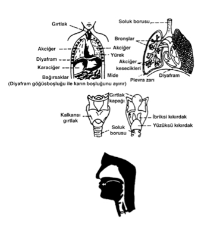
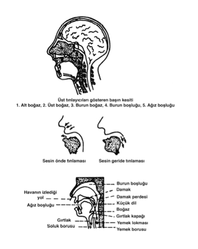
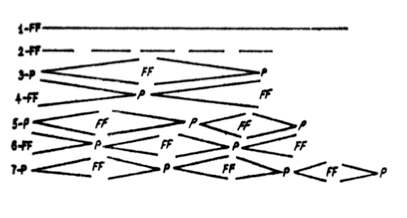

ÖNSÖZ
Öyle güzel konuşanlar vardır ki, bildikleri konu üzerinde düşüncelerini, duygularını düzgün tümceler kurup etkili sözcükler bularak söyler, dinleyenleri hayran bırakırlar. Belki de bu kişiler, bu konuşmalarını aynı güçte yazamazlar. Ama onlar Tanrı vergisi olarak, kolay, düzgün ve etkili konuşma yeteneğine (talâkat=Êlocution) sahiptirler.
Eğer sizde de böyle bir yetenek varsa, size, bu yeteneğinizi geliştirmeyi öğüt vermekten başka bir şey söyleyemeyiz. Yalnız, konuşmalarınız, konferanslarınız, kısa söylevleriniz üzerinde bilgi toplayıp bir plan yaparak, diksiyonunuzu, jest ve mimiklerinizi, verdiğimiz öğütlere uyarak, düzenlemeniz gereklidir.
Eğer böyle, duygu ve düşüncelerini kolaylıkla, düzgün, etkili bir biçimde anlatabilen kişilerden değilseniz, o zaman size şu öğütleri verebiliriz:
Günlük yaşamınızda kendinizi söz söyleme sanatına hazırlayabimek için, düşüncelerinizi, duygularınızı, izlenimlerinizi zihninizde tasarlayarak söz söyleme kolaylığını kazanmak için çaba harcamalısınız. Herhangi bir konuyu, bir olayı, bir işi düşünüp zihninizde planlaştırarak, düzgün tümceler ile anlatmaya alışmalısınız. Birçok durumları imgeleyip, bunların topluluk karşısında size ne gibi olanaklar sağlayabileceğini gözünüzün önüne getirmelisiniz. Sadece belleğinizi çalıştırarak geliştirmek size yetmez. Çalışırken kendiniz ile başbaşa kalıp hazırlık yapmanız gereklidir. Böylece odanızda veya açık havada, söylemek istediğiniz sözleri tekrarlayıp tümcelerin düzenli olmasına çaba harcayarak söz söyleme kolaylığını kendinizde yaratmaya çalışınız. Bu harcadığınız çaba boşa gitmeyip tekrarladığınız sözler belleğinize yerleşmiş olur.
Hiçbir konuşmacı önce kendi fikirlerini düzenlememişse dinleyicilerin üzerinde egemen olup onları arkasından sürükleyemez.
Şunu unutmayınız ki, Demosthenes tarihe geçen ünlü hatiplerden biri oluşunu bu konuda bıkmadan, yılmadan sürekli olarak çalışmasına borçludur. Bu yolu tutarak başarıya ulaşan pek çok ünlü hatip sayılabilir.
Konuşacağınız konu üzerinde iyice düşünmeden, araştırma yapmadan ve hazırlanmadan dinleyici karşısına çıkmayınız. Gelişigüzel, tekdüze sürüp giden bir konuşma dinleyiciyi sıktığı gibi, size “Geveze bir konuşmacı” adını da taktırabilir. Lakırdının perlesengi denilen, konuşurken dile dolanan, gerekli gereksiz tekrarlanan “efendim”, “efendime söyleyeyim”, “uzatmayalım”, “yani”, “anlatabildim mi” gibi sözlerin konuşma sırasında sık sık söylenmesi dinleyeni rahatsız eder. Bu kusuru gidermeye çalışmalısınız. Sonra yine bazı kimselerin, konuşmalarına bir bayağılık katan ve yerli yersiz söylenen “tamam mı”, “tamam”, “oldu”, “boş ver” gibi sözleri kullanmamaya çalışınız. Bu sözler bir ağız alışkanlığı durumuna gelebilir.
Bir de bazı kişilerde sözcükleri güçlükle ansımaktan doğan “şey”, “işte”, “hım”, “hı” gibi sözler sık sık tekrarlanarak dinleyeni sıkar. Buna benzeyen kusurları düzeltmek, arkadaşlarınız ile, dostlarınız ile olan ilişkilerinizde de böyle konuşmaktan vazgeçmek, özellikle topluluk karşısında konuşurken bu kusuru yenmek için gereklidir.
Söz söylemek istediğiniz salonda deneme yapmak, sözlerinizin anlaşılıp anlaşılmadığını öğrenmek bakımından çok yararlıdır. Bir arkadaşınız sizin söylediklerinizi salonun gerisinde bulunan koltuklardan birine oturarak dinlemeli ve anlayamadığı sözleri bir kâğıda yazarak sizi uyarmalıdır. Siz de ona göre bu anlaşılmayan sözcükleri daha iyi boğumlandırmaya çalışarak bu yanlışın önüne geçmiş olursunuz.
Söz söylediğiniz salona kusur bulmayınız. Kendi konuşmanızın anlaşılmadığına, o kusurun boğumlandırmanızda olduğuna inanınız.
Konuşma kusurlarınız üzerinde dikkatle durup alıştırmalar yaparak çalışmaya başlayınız.
Kuruluşundan beri, Banka hizmetleri yanında, Türk sanat ve kültürüne de hizmeti milli bir görev sayan, bu amaçla Türk sanat ve kültürüne büyük katkılarda bulunan Yapı ve Kredi Bankasına şükran borçlu olduğumu ifade etmek isterim.
Bu kitap, devam eden sanat ve kültür hizmetleri zincirine de bir katkıda bulunursa pek mutlu olurum.
N. Ş.
“İnsan konuşa konuşa, hayvan koklaşa koklaşa anlaşır” demişler.
Biz insanları hayvanlardan ayıran en yüce nitelik, düşünerek, düzgün, anlatımlı konuşmamızdır. Yoksa, konuşmak, ağzına geleni saçma sapan, düşünmeden, gelişi güzel söylemek demek değildir. Bunun için de söylenmiş bir atasözümüz vardır. “Boğaz dokuz boğumlu” derler. Önce düşünmek, zihinde tasarladıklarını gerekiyorsa söylemek yerinde olur.
İşte bu nedenle de “Söz söyleme sanatı” ilk çağlardan beri toplumlar arasında bir meslek haline gelmiştir.
Kuşkusuz, konuşmayı oluşturan ses, dilin doğmasında temel bir eleman olup Tanrının insanlara bağışladığı olağanüstü bir armağandır.
İnsan düşünce, duygu ve coşkularını kendi vücudunda bulunan ses aracının yardımıyla söze dönüştürerek başkalarına anlatabilir.
İnsanın maymundan geldiği veya onunla yakınlığı olduğu söylenir. Bu pek uzak bir olasılık da değildir. Maymunun organlarını incelediğimiz zaman insanda bulunan gırtlağı, boğazı, dili ve hatta beyin kıvrımlarını onda da buluruz. Ama Tanrının bizlere bağışladığı konuşma üstünlüğünü kazandıran “Ses kirişleri” adını verdiğimiz, o küçücük duygun organ maymunda yoktur. Onun için ilkel, cırtlak sesler çıkarır da konuşamaz.
Biyoloji bilginlerinin inceleme ve araştırmalarından da öğrendiğimize göre, ilk insan soydaşlarıyla anlaşmak için “Ses aleti”ni kullanmasını bilmiyormuş. Ancak onu “Sindirim aygıtı”nın bir parçası gibi, doğal olarak da, yaşayabilmesi için soluk alma, yemek yeme aracı yerine kullanıyormuş. Aradan uzun yıllar geçtikten sonra, yalın sesler çıkarmaya ve o seslerle de birçok kavramları anlatmaya çalışmış. Ve böylece epeyce bir zaman onun üzerinde uğraşarak, çıraklık dönemini atlattıktan sonra, söz söyleme mutluluğuna kavuşmuş.
Görülüyor ki, söz insanın doğal bir anlatım aracı değildir. Nasıl ki bir müzik aletini çalmak için nota ile o aletin üzerinde çalışıp bir emek ve çaba harcamak gerekirse toplum karşısında söz söylemeyi öğrenmek için de öylece metinler üzerinde çalışıp bir emek ve çaba harcamak gerekir.
Eskiden aydınlar konuşurken düzgün, açık tümce kurmaya dikkat ederler ve özellikle “İstanbul söylenişi” üzerinde titizlikle dururlar, onu Osmanlı dilinin konuşmasında “Doğru Söyleniş” olarak kabul ederlerdi. Hatta o kadar ki, taşradan gelen okumuşların yeteneklerini “İstanbul Söylenişi”ni kavrayıp kavrayamadıklarıyla ölçerler ve “Bu kadar yıl İstanbul kaldırımı çiğnemiş de yine de dilini düzeltememiş!...” diye ayıplar ve o kimsenin yeteneksizliğine yüklenirlerdi.
Topluluk karşısında konuşmak için, sesi eğitme bakımından “İstanbul söylenişi”nin sağladığı önemli bir yarar da, sesin “Maske” denilen yüzün, yanak ve dudaklar bölgesine yerleştirilmesinin kolaylığıdır. Halbuki taşra söylenişinde, daha çok “Boğaz sesi” olan geri ve tınlamasını boğazda yapan ve ses kirişlerini zorlayıp sesin kısılmasına neden olan bir sakınca ortaya çıkar.
Onun için Diksiyon çalışmalarımızda, özellikle, bu “Doğru Söyleniş” üzerinde durulur.
Yalnız, tüm uygar dillerde uygulandığı gibi, bizim de bir Sesbilim alfabemiz bulunmadığından, ancak “Doğru Söyleniş”i kulaktan çözümlemeye çalışıyoruz.
Günün birinde bilim kurumlarımız “Deneysel Sesbilim” yoluyla Türkçemizin seslerini ayırır ve saptarsa biz de ondan yararlanma mutluluğuna kavuşuruz.
Osmanlı İmparatorluğu döneminde, Söz Söyleme Sanatının ilk kez ders olarak okulda uygulanması, Ahmet Cevdet Paşa’nın 26 Haziran 1880’de açtığı Hukuk Mektebi’nde “Belâgat-i Osmaniye” ile “Hitabet Dersleri”ni vererek başlamıştır. Yine o yıllar içinde Abdürrahman Süreyya Beyin de aynı okulda ders verdiğini Mizanü’l-Belâga ve Sefine-i Belâgat adlı kitaplarından öğreniyoruz.
O zamanlar İstanbul’da aileler arasında yeni yetişenlerin konuşurken yaptıkları söyleniş yanlışları üzerinde durulurdu.
Bugün dilimizde kullandığımız, Fransızca’dan geçmiş olan “Diksiyon” konuşma sanatının temel elemanıdır. Ve şöyle tanımlanabilir: Söz söylerken duygu ve düşünceleri üslûbuna uygun olarak belirtmek için sesin uyumunu, söylenişi, jesti, mimiği, alınacak tavırları yerinde, aynı zamanda güzel kullanma sanatıdır.
Oysa bir konuşmacı, bir avukat düşüncelerini, duygularını iyi anlatabilmek için uygun, inandırıcı sözcükler, tümceler seçtiği gibi, doğru bir ses, düzgün bir söylenişe de sahip olmalıdır. Bu bakımdan dinleyiciler karşısında söz söyleyen herkesin “Diksiyon Sanatı”nı bilmesi gerekir.
Okullarımızda Türkçe derslerinde Dilbilgisinin yardımıyla iyi yazmak ve düzgün tümce kurmak üzerine çalışılır. Fakat düzgün ve doğru söz söyleme konusunda hiç durulmaz. Bu nedenle öğrencilerin konuşmaları, gelişi güzel, bağıra çağıra söz söyleme geleneğine uymalarına bırakılmıştır.
Halbuki gençlerimizin doğru ve anlaşılır bir tarzda konuşmaya alışmalarının, ilerideki çalışma yaşamlarında kendilerine büyük kazançlar sağlayacağı gözönünde tutmak gerekir.
Şimdi bu kitapta Diksiyon sanatıyla Konuşma sanatını birlikte yürütmek istiyor ve onu şu temel bölümlere ayırarak açıklama yapmayı uygun buluyoruz: Konuşmacı, konu, konuşma üzerinde temel çalışmalar (diksiyon).
Böylece bölümlere ayırdıktan sonra onları açıklamaya geçelim.
KONUŞMACI
A) Tanrı vergisi olan yetenek:
Güzel ve etkili konuşma, tanrının insana verdiği bir yetenek midir, yoksa onun üzerinde çalışmak ve uzun emek harcamakla da kazanılabilir mi?
Bu soru, uzun yıllar bir tartışma konusu olmuş ve hâlâ da olmaktadır. Doğrusunu isterseniz, “Bana Tanrı bu yeteneği vermemiş, bu benim yapacağım iş değil” deyip bir köşeye çekilmek, susup oturmak, hiçbir zaman doğru bir tutum ve davranış değildir. Bu, tembellikten, çekingenlikten doğar. Böyle pasif, ürkek düşünüşü bir yana bırakıp çalışmak, alıştırmalar yapmak, güzel konuşmak isteyen herkesin izleyeceği en geçerli yoldur.
Tarih, bize Demosthenes ile Cicero’nun Söz sanatının güçlüklerini yenebilmek için ne kadar büyük bir çaba harcadıklarını yansıtmaktadır.
Demosthenes’in gençliğinde çelimsiz bir yaradılışta olduğundan güçsüz sesini ve göğsünü kuvvetlendirmek, hareketlerini ve söyleniş kusurlarını düzeltmek için uzun zaman inatla çalıştığı söylenir. Onun doğuştan utangaç, hattâ kekeme olduğu, güya bu kusuru gidermek için ağzına ufak çakıl taşları koyarak deniz kenarında dalgalara karşı uzun parçalar okuyup denemeler yaptığı da anlatılır.
Bazı konuşmacılar kusurlarına hiç aldırmadan sadece bağırıp çağırmakla dinleyici üzerinde etki uyandıracaklarını sanırlar. Bu yanlış bir düşüncedir.
Onlar, böyle davranacaklarına kusurlarını düzeltme yollarına başvursalar, alıştırmalar yaparak yanlışlarını düzeltseler hem kendilerine, hem de uğraşılarına yararlı olurlar.
Bununla beraber, yine de kişinin Tanrı vergisi olan nitelikleri inkâr edilemez. Örneğin, vücudun biçimli, görkemli görünüşü, yüzün az çok canayakın oluşu, sesin tınısı, gücü, duruş dengesi vs... Bunların kuşkusuz toplum karşısında söz söylerken etkisi olur. Her ne kadar bu nitelikler inkâr edilemezse de bunlardan yoksun birçok konuşmacılar bu eksiklerini başka yönden gidermeye çalışarak değerli bir konuşmacı olmayı başarmışlardır. Bu açıklamadan da anlaşılıyor ki, her şeyden önce konuşmacının eksik yönlerini bilerek, dinleyerek onları unutturacak niteliklere kavuşması gerekir.
Gerçekte, bir konuşmacı olmak için şu üç temel koşul göz önünde tutulmalıdır:
— Dilini yutmuş gibi susup oturmamak, daha doğrusu, yanlış bir söz söyleyeceğim, diye korkup çekinmemek;
— Çevredeki olayları daha iyi anlayıp iyi veya kötülüklerini ayırmayı elde ettiren ve güven sağlayan sağduyuya sahip olmak;
— Türkçeyi düzgün, anlaşılır, doğru ve anlatımlı konuşmak...
Kuşkusuz bir konuşmacının uyması gereken koşullar bu kadar değildir. Ama bunları şimdiden çoğaltmak onun cesaretini kırmak olur. Bu bakımdan şimdilik bu kadarla yetinmenin doğru olacağı kanısındayız.
B) Konuşmacının hazırlık dönemi:
Hemen gerekli saydığımız koşullara şunları da ekleyelim: Konuşmacının anılarını, izlenimlerini ve onlarla ilgili kavramları bir not defterinde sıralaması ona yarar sağlar. Konuşmacı istediği zaman onları kullanabilir.
Yalnız bu notları sık sık kullanmak, dinleyicileri usandırabilir. Sonra, konuşmacıyı ucuz işporta malı satan bir gezici satıcı durumuna sokar. Onun için de bir konuşmacı, işporta malı, yalancı parlaklığı olan incik boncuk gibi, beylik sözlerle dinleyiciyi kendine bağlayacağını sanmamalıdır. Yoksa halk ona “Tıraşçı” damgasını vuruverir.
Diğer yönden, konuşmacının bir genel kültüre de sahip olması gereklidir. Herkesin bildiği gerçekleri boyuna yinelemek, dinleyiciyi usandırıp, canını sıkmaktan başka bir işe yaramaz.
Önce hazırlanmadan, ne söyleyeceğinizi bilmeden, kendinize fazlaca güvenerek dinleyici karşısına çıkmayınız. Ama konuşmanızı uzunca bir hazırlanmadan sonra, içinizden geldiği gibi, doğaçtan söylüyormuş izlenimini dinleyiciye vermeniz çok yerinde olur.
Konuşmacı doğaçlama yapıyormuş gibi, zihninde planladığı konuşmasını çeşitlendirir, genişletir. Ve böylece dinleyici önünde verdiği örneklerle sözlerini verimli bir hale getirir. Bunun için de konuşmacının edindiği genel kültürün yararı büyüktür.
Yeryüzünde öyle konuşmacılar yetimiştir ki, seslerini yanlış ve jestlerini tekdüze kullandıkları halde, geniş ve derin olan genel kültürlerinin yardımıyle, bu kusurlarını örterek, çok değerli ve güçlü bir konuşmacı olmayı başarmışlardır.
Bu görüş açısından bakacak olursak, diksiyon sanatının bu yönden bize öğütlediği alıştırmaları, şimdilik bir yana bırakarak, önce ünlü konuşmacıların yapıtlarını incelemek, bir düşünceyi nasıl geliştirdiklerini gözönünde tutmak, onları birbiriyle karşılaştırmak, çalışmanıza büyük yarar sağlar.
Örneğin, Türk Dil Kurumu Yayınları’ndan Behçet Kemâl Çağlar’ın hazırladığı Bugünün Diliyle Atatürk Söylevleri ve Milli Eğitim Bakanlığı’nın 1000 Temel Eser yayınlarından, Hamdullah Suphi Tanrıöver’in Dağyolu ve Günebakan’dan Seçmeler’i bu çalışmalar için güzel birer kaynaktır.
Sonra, sözcük dağarcığını zenginleştirmek, eş anlamlı sözcükleri bir küçük not defterine yazıp onlarla değişik tümceler kurarak düşünceyi anlatmak yerinde bir çalışma olur.
Konuşmacı çevresindeki kişilere inanç ve güven verip onları kazanmaya çalışmalıdır. Onun kullandığı dil, halk çoğunluğunun kullandığı açık, anlaşılır bir dil olmalıdır.
1) Geçmişteki değerli ve güçlü konuşmacıların bizlere bırakmış oldukları metinleri okuyarak gözlerinizi yazıları kolaylıkla sökmeye alıştırınız. Önce metni birkaç kez alçak sesle, yazıları sökmeye, hemen hemen heceler gibi söylemeye çalışarak okuyunuz.
Sonra yüksek sesle, kendinize göre ona anlam katıp, tümcelere hareket vererek, sözakımında duraksama yapmadan, düzenli soluk alıp, virgüllere, noktalı virgüllere ve noktalara dikkat ederek, ses bükümünün doğal olmasına özen gösterip her sözcüğün değerini vererek çalışmalarınızı sürdürünüz.
Bu çalışmaları yaptıktan sonra oldukça iyi bir kanıya varırsanız, hemen kalemi kâğıdı elinize alıp bir kompozisyon ödevi hazırlar gibi, konuşmanızın planını yaparken kendinize sorunuz:
— Konuşmak istediğim bu konu üzerinde neler düşünüyorum, onu anlatabilmek için konuya nasıl bir açıklık getirebilirim? Bu açıklama akla yakın geliyor mu? Eğer aynı konu üzerinde önce konuştu iseniz, bu sefer o konuya değişik bir yön verebilecek misiniz?
Yahut da tümü üzerinde düşünerek onu kesimlere bölebilecek misiniz?...
Bütün bunları düşünürken kalemi elinizden bırakmayınız. Şimdi de konuşmanızın tümünü yargılamayı deneyiniz. Hazırladığınız konuşma sizi inandırıyor mu? Yanlış bir yol tuttuğunuzdan mı, yoksa düşüncenin yetersizliğinden mi? Yoksa, inandırmaktan veya kapsamdan yoksun olduğu için mi? Bir genel değer biçerek yetinmeyiniz. “Niçin?” ve “Neden?” sorularını, kendinize sorarak inceden inceye üzerinde durduğunuz konuyu araştırınız. Yine kalemi elinizden bırakmayınız. Metni inceden inceye ayrıntılarıyla çözümleyiniz. Size yabancı geçen sözlerin altını çiziniz. (Bunlar benzetmelerden, eğretilemelerden, karşıtlamalardan, tümce kuruluşlarından olabilir. Bu terimlerin açıklaması kitabın sonuna konulmuştur.)
Hazırladığınız metinde birkaç satırlık toplu bir anlamı içine alan bölümün mantıksal çözümünü yapınız. Gereksinmeye göre, çarpıcı bulduğunuz pasajları ezberleyiniz. Fişler halinde onları yazmanız da yararlı olur.
Talâkatin ussal ve mekanik yönünü kazandıran, sonra da taslağınızı ve şemanızı zenginleştirip terimler ve tümce kuruluşlarıyla ayırmayı öğreten bu alıştırmanın yararını herhalde anlıyorsunuz, değil mi?
Konuşmacının pek çok okumasına da gerek yoktur. Yalnız okuduğunu dikkatle okumak, ne okuyacağını seçmesini bilmek gereklidir. Bu uğraşı ile ilgili bir küçük kitaplık sizin için yeterlidir.
2) Kendinizi iyi işitmeye çalışınız. Konuşurken yaptığınız yanlışları düzeltmeye çaba harcayınız. Zamanımızın iyi konuşmacılarını dinlemek fırsatını kaçırmayınız. Eğer, yeterince kendinizi topluluk karşısına çıkacak kadar olgunluğa erişmiş buluyorsanız, hemen deneme fırsatına girişiniz.
Kendi konuşmanızı dinlemek için ses alma makinesinden yararlanabilirsiniz.
Konuşmalarınızda eleştirilmekten korkmayınız. Bu eleştirmeler size zarar yerine yarar sağlamalıdır.
Başka konuşmacıları eleştirirken de hangi yönden eleştirdiğinizi bilmelisiniz. O konuşmacının seçtiği konudaki düşüncelerini mi, diksiyonunu mu, jestlerini mi eleştirdiğinizi iyice belirtmelisiniz. Onu dinlerken belleğinizi uyanık tutmalı, hoşlandığınız yönleri de belirtmelisiniz.
Konuşmanızı yaparken not aldığınız kâğıtlara başvurmaktan çekinmeyiniz. Size belleğinizi çalıştırmak için çok güzel bir yöntem uygulamanızı öğütlüyoruz: Daha önce yazılmış ve sizin de okumuş olduğunuz bir söylev metnine, yeniden bir biçim vermeyi deneyerek onu söylemeye çalışınız. Böylece yapılan alıştırmalarla söz söyleme kolaylığını elde etmiş olursunuz. Bu çalışmaların biraz yorucu olduğunu da söyleyelim. Yalnız şunu da bilmek gerekir ki yorulmadan başarıya ulaşılmaz. Polonyalı ünlü piyanist ve siyaset adamı Paderewski şöyle diyordu: Müzikal yeteneğin ondabiri esinlenme ise ondadokuzu da ter dökmektir, yani çalışmak, yorulmaktır. Konuşma sanatı için de aynı şey sözkonusudur.
3) Konuşurken sözlerinize canlılık kazandırmaya çalışınız. Ölgün, durgun bir konuşmayı dinleyici zevk ve ilgi ile dinleyemez, canı sıkılır. Bu bakımdan söz söyleme sanatı kurslarına katılarak konuşmada hareket ve sözakımı denemeleri yapınız. Böylece bu niteliği elde etmiş olursunuz.
C) Konuşmacının düşmanı (Trac):
Topluluk karşısında duyulan korkuya denir. Konuşmacının bu düşmanına, ilk kez dinleyici karşısında konuşmaya başlayacağımız zaman rastlarsınız. Bir hayalet gibi karşınıza dikilir. Size kötü oyununu oynadıkça daha büyük bir güç kazanır. Gözlerinizin önünde kıvılcımlar çakar. Artık hiçbir şeyi göremez olursunuz. Diliniz damağınıza yapışıp, sözleriniz gırtlağınızda düğümlenip kalır. Yüreğiniz işkence çarkında sıkışıyormuş gibi olur, eliniz, ayağınız titrer.
Bu düşmandan tüm olarak yakanızı kurtarmak olanağı hemen hemen yok gibidir. Eğer böyle bir reçete vermeye kalkarsak, saçı dökülmüş kişilere saç çıkarma ilacı satanlara döneriz. Olsa olsa sizlere birkaç geçici çare öğütleyebiliriz:
Birinci öğüt: Kendinize karşı güveninizi arttırmak için bir kadeh şarap, votka veya rakının sinirlerinizi kamçılamasını ummayınız. Konuşmaya başlamadan önce, kendinizi güçsüz bularak, içkiden yardım beklemeyiniz. Sonra ne söyleyeceğinizi bilmeyerek gülünç duruma düşersiniz.
Çok kahve ve sigara içmekten kaçınınız. Özellikle sigara, sese zararı olmakla beraber, gıcık yaparak öksürüğü de meydana getirir.
İkinci öğüt: Konuşmanıza başlamadan önce, bu korkuyu ortadan kaldırmak için, birkaç tümce söyledikten sonra, ruhsal durumunuzu düzeltip konuşmaya başlayınız.
Dinsel inancı kuvvetli olan konuşmacılarda konuşmalarına başlamadan önce içlerinden dua okumaları da bu korkuyu gidermek için yarar sağlayabilir.
Eğer sıkılganlığınız aşırı bir kertede ise, bir ruh hekimine başvurup onun size bu sıkılganlıktan kurtarıp uğraşınızda çalışır bir duruma getirmesini isteyiniz.
Üçüncü öğüt: Bir iki ufak kurnazlık uygulayalım. Eğer dinleyici kalabalığı sizi ürkütüyorsa, bir zaman için onlardan yalnız bir kişiye bakarak sözlerinizi ona söylüyormuş etkisini veriniz. Veyahut bakışlarınızla dinleyiciler arasında tanıdığınız birini arayıp sözlerinizi ona doğru söyleyiniz. Veyahut da bir an gözlerinizi kapayıp birkaç tümce söyledikten sonra, sesinize güven kazandırdıktan sonra gözlerinizi açarak konuşmanızı sürdürünüz.
Tüm bunlar, konuşmacının sözlerini söylerken korkudan kurtulması için başvurulan yollardır. Bu yolların en iyisi konuşmacının kendine karşı güven sağlamasıdır.
D) Konuşmacının ruhsal gücünün niteliği:
Sıradan bir konuşmacı durumunda olmak istemiyorsanız, önce savunduğunuz düşüncelere kendinizin inanmış olması gereklidir. İnanmadığı bir düşünceyi, çıkarına uyduğu için, yüksekten atarak savunmaya kalkan bir konuşmacıyı anlayışlı dinleyiciler pek hoş karşılamazlar. Onun sözlerine inanmadıkları gibi, ona “Yalancı, Şarlatan” damgasını da vururlar. Erdemli bir konuşmacıdan beklenen, inandığı, doğru bulduğu düşünceleri savuşmasıdır.
Açık yüreklilik, içtenlik: Konuşmacıdan beklenen açık yüreklilik ve içtenliktir. Kendini beğenmiş, düşünceleriyle, sözleri arasında tutarlık bulunmayan bir konuşmacıyı dinleyici sevimsiz bulur ve ona karşı ilgi göstermez.
Konuşmacı iyice bilmediği konular üzerinde ısrarla biliyormuş gibi inat etmemeli. Onun bilmediği şeyleri “bilmiyorum” demesi, sözlerini söylerken kanılarının gücünü yitirdiğinden yaptığı yanlışı “yanılmışım, özür dilerim” demekten çekinmemesi onu küçültmez, tam tersine ona karşı sevgi uyandırır.
Açık yürekli, içtenlikle davranan bir konuşmacı, her zaman için dinleyicinin sevgisini kazanır.
Gerçeğe içten bağlılık: Bir topluluk karşısında söz söyleyen konuşmacı, onlara gerçekleri yansıtmak fırsatını ele geçirmiş demektir. Eğer bunun tersini yaparak dinleyicileri kandırmaya, gerçekleşemeyecek vaatlerle avutmaya kalkarsa, pek çabuk onların kendine olan güvenini ve inancını sarsar. Onun için, konuşmacı yalan söyleyerek dinleyiciyi kandırmaktan şiddetle kaçınmalıdır.
Özellikle, bir siyasal konuşmacı, dinleyici karşısında sözleriyle, duygularının, düşüncelerinin anlatımında yapmacığa, abartmaya başvurmadan, gerçeği içtenlikle yansıtan bir kişi niteliğinde olmalıdır.
Eskiden, Osmanlı İmparatorluğu zamanından kalma, halk arasında yaygın olan “İngiliz siyaseti gütmek” diye ün salmış, kaypak, oyalayıcı, yalanlı dolanlı bir konuşma ve davranış biçimine ad olarak verilen bir söz vardı.
Siyasal konuşmalarda bu biçime başvurarak halkı aldatmaya çalışanların foyası pek çabuk ortaya çıkar.
Gerçeğe candan gönülden bağlılık gösteren en büyük konuşmacımız “Atatürk”tü. Onun yüce yapıcılık gücü, olamayacakmış gibi görünen işleri gerçekleşmiş, bütün Türk ulusunu, bağnazlar, çıkarcılar ve din sömürücüleri dışında, kendine candan ve gönülden inandırıp bağlamıştır.
29 Ekim 1933’te onun söylediği Cumhuriyetin onuncu yıl söylevindeki şu sözler güzel bir kanıttır:
“Büyük Türk Milleti!
Onbeş yıldan beri, giriştiğimiz işlerde muvaffakiyet vaat eden çok sözlerimi işittin.
Bahtiyarım ki, bu sözlerimin hiçbirinde, milletimin, hakkımdaki itimadını sarsacak bir isabetsizliğe uğramadım.”
Atatürk
Alçak gönüllülük: Kuşkusuz, alçak gönüllülük yalnız konuşmacıda aranan, beğenilen bir üstünlük değildir. Toplum içinde insanları birbirine sevgi ve cana yakınlık duygusuyla yaklaştıran bir üstünlüktür. Yoksa kendini pek yükseklerde gören, herkese tepeden bakan bir kimse, hiçbir zaman hoş karşılanıp sevgi uyandırmaz.
Bir konuşmacının kürsüye çıkıp “bakınız, ben neler bilirim, size neler öğreteceğim” der gibi davranması, bilgisinden böbürlenip kurumlanmasını dinleyiciler hiç hoş karşılamaz.
Bu nedenle konuşmacının ölçüsünü kaçırmayarak alçak gönüllü davranması, aranan niteliklerdendir.
Yüreklilik, cesaret: Kolay başarı kazanmak isteyen ve böylece halkı avlamaya çalışan konuşmacı, kolaylıkla da dinleyicinin gözünden düşer. Bu duruma gelmek istemeyen konuşmacı, iyice hazırlanmadan halkın karşısına çıkmamalı ve böylece de kendine karşı olan güvenini sağlamalıdır.
Yalnız bu güven tanıdıkların pohpohlayıcı sözlerinden doğan bir güven olmamalıdır. Yakınların sözleri konuşmacı üzerinde yol gösteren ussal bir etki uyandırmalıdır. Üstelik, bazı zaman konuşmacı söylediği sözleri dinleyicilerin iyi karşılamadıklarını, yersiz bulduklarını hissettiği zaman, hemen bu durumu kavrayıp kırılmadan cesaretle karşılamayı bilmeli ve bu sözleri neden böyle söylediğinin açıklamasına geçmelidir.
Bir konuşmada açık ve cesaretli davranmak topluluğun hoşnutsuzluğunu alt edebilir.
Sabırlı olmak: Konuşmacının sabırlı olması, kendini özel görevine vermesi gereklidir. O anlayabildiği gerçekleri bozmadan, cesaretsizliğe kapılmadan yinelemesini bilmelidir.
Konuşmacı bir eğiticidir ve eğitimin gizi sabırda toplanmış bulunur.
KONU
“Dinleyici karşısında konuşmayı çok istiyorum. Ama, nasıl konuşabilirim? Ancak, okullardan edindiğim klasik öğrenimle yetiniyorum: orta bir kültürüm var. Bu alanda özel bir yeteneğim de yok... Böyle olunca da dinleyicilere ne söyleyebilirim?” ...Cesaret kırıcı, içinden çıkılmaz bir sorun!...
Çoğunlukla bir işe yeni başlamak isteyen kişilerin kendi kendilerine yineledikleri sözler...
İşte, sizi dinleyici karşısında söz söylemekten alıkoyan, cesaretinizi kıran ve konuşmanıza engel olan ruhsal durumunuz. Önce kendinize güveni kazanmalısınız. Yalnız, bu güven, bilmediğiniz konu üzerinde rastgele konuşmayı gerektirmez. Size, söylemek istediğimiz, güçsüzlüğünüzü, cesaretsizliğinizi yenmektir. Yeni başladığınız bir uğraş üzerinde çalışmanız, çaba harcamanız doğaldır. Bununla beraber kırılıp umutsuzluğa kapılmayınız. Birçok konuşmacının da özel yetenekleri yoktu. Ama onlar da çalışarak, çaba harcayarak uğraşlarında başarılı olmayı bildiler. Siz de onlar gibi kentte doğdunuz; herkesin birbirini tanımadığı bir ülkede oturuyorsunuz. Herkesle ilişkiniz yoktur.
O halde, bu cesaretsizliğinizi, güçsüzlüğünüzü yenmeye çalışıp orta derece olan kültürünüzü genişletebilir, herhangi bir konu üzerinde işleyerek onu yansıtabilirsiniz.
Konuşmak istediğiniz konu üzerinde, o konu ile ilgili kitaplar okuyarak bilginizi geliştirip çalışma çemberinizi aşarak gözlemlerinizi yansıtınız.
Yeteneğinize, zevkinize uygun birkaç yoldan çalışma kaynağı arayıp onları özenle derinleştiriniz.
Bu çalışmaların sonucunda bir uzman konuşmacı yeteneğini, yetkisini elde edemezseniz yine de azçok bir usta olgunluğunu, düzenli bir bilgiyi kazanmış olursunuz. Bu bilgi konuşulan topluluğun düzeyi gözönünde tutularak düzenlenir. Ancak bu yatkınlık da denemelerle elde edilir.
A) Bir konuşmanın konusu nasıl seçilir?
En iyi kural: Dinleyici karşısında, hiçbir zaman tümüyle yabancı olduğunuz bir konu üzerinde konuşmayınız.
Eğer konuşup boşuna gevezelik edecekseniz o başka. Yalnız, bu kuralın dışında kalan iki özellik var: Bunlardan biri, bir topluluk karşısında konuşuyormuş gibi, konuşma kolaylığı kazanmak için, özellikle yabancı olduğunuz bir konuyu seçerek alıştırma yapabilirsiniz.
Diğer yönden, sorumluluğu üzerine alan bir öğretmenin yardımıyla yabancı olduğunuz bir konu üzerinde çalıştırılıp, yol gösterilip, böylece eğitilebilirsiniz. Bu durumda yabancı olduğunuz konu sizin için özel bir yarar sağlar.
Konu bakımından uygulama: Bir lise öğrencisi iseniz edebiyat öğretmeni, örneğin, “Şair Tevfik Fikret’in sanat kişiliği ve şiirimize sanat yönünden getirdikleri” üzerine bir konuşma hazırlamanızı ister. Hemen konuşmanızın konusuna yardımcı olacak edebi yapıtları bulur, onlardan yararlanırsınız. Okulda edebiyat derslerinden edindiğiniz bilgi de size yardımcı olur. Bu sizin yabancı olmadığınız bir konudur.
Ama sizden tümüyle yabancı olduğunuz bir konu üzerinde konuşmanız istenirse kabul etmemeniz yerinde olur.
Bununla beraber, sizin de konuşma konularınızın alanı oldukça geniştir. Örneğin, edebiyat, dilbilgisi, din bilgisi, tarih bilgisi, coğrafya bilgisi, psikoloji üzerine birçok konuda konuşmalar yapılabilir.
Görüyorsunuz ki, konular üzerinde iyi hazırlandıktan sonra oldukça geniş olan bir alanda konuşma yapabilirsiniz. Yeter ki konularınızı ilgi çekici bir duruma getirmiş olasınız. Günün olanaklarını, isteklerini gözönünde tutmak gerekir.
B) Bir konu nasıl hazırlanır?.
Bir konuşma yapmak için söz verdiniz. Bu konuşmayı üç hafta içinde hazırlayacaksınız. Onu nasıl hazırlamalı?
1) Konunun bibliyografyası: Çok kez, ansiklopedik bir kültürün tüm kaynaklarını kendi kitaplığınızda bulmazsınız. Bunun için belleğinize başvuracak, hazırlayacağınız konuşmanın konusu üzerine yazılmış kitapları nasıl ve nerede bulabileceğinizi anımsamaya çalışacaksınız. Oldukça güç bir iş. O halde size, elinizin altında bulunduracağınız bir bibliyografya kurmak, meydana getirmek gerekecek. Eğer bu öğüdümüzü tutarsanız, hazırlayacağınız konu üzerinde güçlük çekmezsiniz. Kitaplarınızdaki başlıkların, aşağı yukarı, açıklamalarını bildiğiniz için aradığınız kesimi bulabilirsiniz.
“Fakat, bu kitapları nasıl satın alabilirim?... Ekonomik durumum elverişli değil, ay sonlarını güç getiriyorum, hiçbir zaman kitap almak için yeterli param kalmıyor... O halde ben ne yapabilirim?”
Gerçekten, çetin, sarp, aşılması güç bir engel ve çözümü zor bir sorun...
Önce, elinize geçen her kitabı okumanız gerekmez. Tersine, üzerinde çalıştığınız konuyla ilişkisi olan tüm kitapları okumak zihninizi karıştırır.
Bunun için, az okuyunuz ama, öz ve yararlı kitapları okuyunuz.
Yalnız, şunu söyleyelim ki, hemen, işiniz için gerekli, temel yapıtları içine alan bir kitaplığı yavaş yavaş da olsa, kurmak zorunluluğundasınız. Bu da birkaç kez sinemaya gitmekten ve birkaç paket sigara içmekten vazgeçerek olabilir.
Sonuç olarak, genel kitaplıklardan da yararlanabilirsiniz. Yalnız kendi kitaplığınızdaki çalışma gibi özgür olamazsınız.
Kitaplığınızı yerleştirip düzenlerken birbiriyle ilişkili konularda olan kitapları yanyana sıralayınız ki ararken bulmakta güçlük çekmeyesiniz.
— Elinizde bulunan inceleme kitaplarını, bir polis romanını okur gibi, merakla ilgi ile başından sonuna kadar okuyunuz. Önce, kitabın içindekileri gösteren sayfaları, eğer varsa, açıklamalı sayfaları da gözden geçiriniz. Bir kurşun kalem ile konunuzla ilgili başlıkları işaretleyiniz. Kurşun kalem ile sizin için en çok ilgili bulduğunuz pasajların bulunduğu kitapların kenarlarına işaret koyunuz. Sonra özetlenmiş bilgilerin ve tanımlamaların altını çiziniz. Bir bakışta tüm ayrıntıları gösteren bir tablo meydana getirerek, önemli başlıkları özetleyiniz.
Bu çalışma, önce biraz can sıkar ama, sonra kolaylık sağladığı görülür.
— Sonra bu yazdıklarınızı fişler üzerine geçiriniz. Konuşmanızın hazırlanmasında bu metinler size çok yarar sağlar. Yalnız yanılgıya düşmemek için aşırılığa kaçmayınız. Bu nedenle çok fiş de kullanmayınız. Belleğinize de pek fazla güvenmeyiniz; fişlerin sırasını unutarak birbirine karıştırabilirsniz.
— Fişlerinizi, düşüncenize göre sıralayıp düzenleyiniz, yani gruplara ayırıp birkaç ana düşünce çevresinde sıralayıp düzenleyiniz. Sonra bu özetlenmiş fişleri bir süre için bırakınız. Konuşmanız bu evreden başlayarak, sadece taşıdığı güç bakımından, hazırdır. Şimdi iş, kompozisyon evresine kadar bilinçaltınızı çalıştırmaya kalır.
2) Canlı belgeler: Kitaplarda bulunan bilgi sizin için yeterli olmayabilir, özellikle deneysel, uygulamalı bilgiler edinmek için bir somut konu üzerinde çalışıyorsanız bu yöntem gereklidir.
Varsayalım ki, çalışmanın güçlüğü veya sevincinden söz edeceksiniz. Kendinizi yazılmış bir belgeyle sınırlamanız doğru olmaz. Bu yolda, işçiler, memurlar ve işverenler arasında kişisel bir soruşturma yapmak çok yararlı olur.
Aynı biçimde, açık saçık yazılara, resimlere ve dergilere karşı bir konuşma hazırlayacaksınız. Sözlerinizin belirsiz kalmamasını istiyorsanız; canlı örnekler vermelisiniz. Örneğin, dinleyicilerinizin, önünden sık sık geçtikleri büfe veya dükkânlarda satılan dergilerden, gazetelerden örnekler vererek söz ediniz.
Dinleyicilerin konuşmanızdaki kanılarını iyice kuvvetlendirmek için gerçek istatistiklere de başvurmak gereklidir.
Konuşmak için seçtiğiniz konuyu iyi bilen kişilerin düşüncelerine başvurmaktan çekinmeyiniz.
Konuşmacılığın yalnız kuramsal yönüyle yetinmeyip uygulama yönünden de yararlanmak, bu canlı belgelere değinmek size uğraşınızda kazanç sağlar.
Böylece konunuz için anlayamadığınız bazı sorunlar açıklanır, aydınlığa kavuşur.
Konuşmayı bilmek kadar başkalarını dinleyip onların sözlerinden konuşmanızda yararlanmak da önemlidir. Bu bakımdan o canlı belgeleri dinlerken ne demek istediklerini dikkatle anlamaya çalışınız.
3) Kompozisyon: Daha önce, size ilk kez edindiğiniz bilgilerin bilinçaltınızda kalarak mayalanmasını öğütlemiştik. Sanmayın ki, iş olsun diye, boşuna öğütler verip duruyoruz. Hayır. Nasıl maya hamurun içine konur da onun mayalanmasına yararsa, edindiğiniz bilgi de bilinçaltında onun da mayalanıp köpürmesine, gelişmesine yardımcı olur.
Konunuzu düşününüz. Yürürken de onu düşününüz. Çünkü düşüncenizi tasarlamanıza adımlarınızın ritmi, temposu çoğunlukla elverişli, yararlı olur. Uykudan öne onu düşününüz. Çünkü uykunuz sırasında, düşüncenize parlaklık gelir, konu dağınıklıktan kurtulur, toplanır, gruplaşır.
Bir süre sonra, bu süre kişilere göre değişebilir, dimağınızda süzülmüş bilgilerinizin başka bir kalıba girmiş olduğunu anlayarak “Hah! şimdi oldu!” diyecek, konunuzun açıklıkla belirdiğini göreceksiniz.
İşte, kompozisyona başlama saati çalıyor, demektir. Fişlerinizi toplayıp masa başı çalışmasına koyulunuz.
— Bir plan yapmaya başlayınız. Yalnız, kendinize ve dinleyicilerinize karşı saygılı olarak, yutturmaca türünden değil. Ayrıntılı bir biçimde.
— Açıklık ve kesin bir ussal bağlantı kazanıncaya kadar planınızı yeniden gözden geçirip düzeltiniz.
Konuşmanızın tüm ayrıntılarını gösteren tablonun yardımıyla, A, B, C ve 1, 2, 3 ile işaretlediğiniz planınızı tekrar yazınız. Düşüncelerin önemine göre, altlarını bir veya birkaç çizgiyle çiziniz. Bu çizgileri, gereksinmeye göre, renkli boya kalemiyle de çizebilirsiniz. Yine anımsatalım ki, konuşmacı bir eğitimcidir. Yoksa, bilgiçlik taslayan veya boşuna konuşan bir kişi değildir. O zekâsının kavrayışına, aldığı kültüre göre, konuşmasını hazırlayan ve dinleyicilerine ışık tutan bir eğitimcidir.
— Konuşmanızın başlangıç ve sonucunu büyük bir özenle hazırlayınız: Başlangıç da, sonuç da sıkıcı boş sözlere dayandırılmamalı. Seçkin bir konuşmacı da olsa konuşmasının başlangıç ve sonucunda edebiyat yapmaya kalkarsa dinleyiciler üzerindeki etkisini çok kaybeder. Bu bakımdan, özellikle, konuşmanın başlangıcı çok önemli olup uzun, boş sözlerle doldurulmuş olmamalıdır.
Bir konuşmacının sonucu da bir dizemin sonu gibi, etkili sona ermelidir.
— Konuşmanızın başlangıcında konunuzun ana çizgilerini belirtmeyi unutmayınız. Yalnız, bilgiçlik taslamaktan da kaçınınız.
Konuşmanızın sonunda da bir kez daha bu ana çizgileri özetleyip tüm kanılarınızla dinleyicilere anımsatarak sözlerinizi bitiriniz.
— Konuşmanıza başlamadan önce, onun süresini kesin olarak saptamayı unutmayınız. Birbuçuk saat süren konuşma çok uzundur. Çalışmanızı yaparken saat tutunuz ve konuşmanızın bir saati geçmemesine dikkat ediniz.
KONUŞMA ÜZERİNDE TEMEL ÇALIŞMALAR
Duygu ve düşüncelerin söze dönüşebilmesi için konuşmaya bir biçim vermeye çalışmak gerekir, yani, sözcüklere, tümcelere yaşam ve canlılık kazandırmaya çaba harcanır. Birçok konuşmacının arasında tartışma konusu olan bir soruyu yanıtlayalım:
— Bir konuşmayı söylemeden önce, sonuna kadar yazmak yararlı mıdır? Hemen yanıt verelim:
— Evet. Çünkü, bu şekilde konuşmacı, dinleyici karşısında ne söyleyeceğini bilerek, kendine güven sağlar.
— Ancak, bir konuşmayı hiçbir zaman kâğıttan okumamalıdır. Bunu tüm konuşmacılar bilmelidir. Çünkü konuşmacının hazırladığı metin onunla dinleyicinin arasına girer. Halbuki konuşmacı, dinleyici karşısında etkili olmak istiyorsa, sözlerini daha önce hazırlamamış da, sanki o anda hatırına gelen tümceleri sıralıyormuş gibi rahat konuşmalıdır. Tâlâkat sözcüğünün anlatmak istediği de budur. Tâlâkata sahip olan konuşmacılar, rahat, inandırıcı ve kolay konuşabilen kişilerdir. Belki tümce kuruluşlarında veya vurgulamalarında, ses tonlamalarında yanlışlıklar yapabilirler. Fakat rahat ve inandırıcı konuşabilme yetenekleri dinleyici üzerinde öyle olumlu bir etki yapar ki, bu yanlışlarının farkına bile varılmaz. Herkes böyle tâlâkat sahibi olamaz. O halde yapılacak şey, yukarıda da söylediğimiz gibi konuşma konusunu baştan sona yazarak konuya iyice hâkim olabilmek ve bu güvenle dinleyici karşısına çıkmaktır. Böylece, ilk aşama başarılmış olur.. Fakat elbette iş bununla bitmez, çünkü, her konuşmacı hazırladığı metnin tümünü ezberleyemez, zaman zaman bellekte meydana gelecek unutmalar olağandır. O halde bu tehlikeyi önlemek için neler yapmalı. Yapılan denemelere göre en geçerli yöntem şudur: Konuşmacı üzerinde konuşacağı konuyu uzun uzun, derin derin düşünüp, tüm ayrıntıları hesaba katarak en geniş biçimde tasarlamalı, daha sonra, konuşma taslağını hazırlayarak sınırlandırmalıdır. Konuşmasına başladığında, düşünce akışının ilk sınırtaşını kaybetmeden önündeki taslağı istediği gibi genişletip zenginleştirebilir. Konuyu dağıtmadan, ne kadar çeşitlendirirse, konuşmayı tekdüze ve sıkıcı olmaktan kurtarmış olur. Uygulama bakımından konuşmanın ilk beş altı satırını ezberlemekte de yarar vardır. Böylece anlatımın bir düzene konabilmesi, sesin ve jestlerin ayarlanması, konuşmacının kendine karşı güveninin güçlenmesi kolaylaşmış olur ve konuşmacı, özetlenmiş bir taslak yardımıyla doğaçtan ve etkili bir konuşma yapma olanağına kavuşur.
Topluluk karşısında konuşma:
İnsan, toplumsal bir varlık olduğuna göre, tek başına yaşayamaz, soydaşlarıyla anlaşabilmek için başlıca aracı da “söz”dür.
İnsanın duygularını, düşüncelerini karşısında bulunan bir veya birkaç kişiye sözle anlatmasına “konuşma” diyoruz. Karşılıklı konuşmada anlatılmak istenilen düşünce, duygu ve coşkunun şiddetine göre konuşmanın gerilimi artarak sözakımının hareketi hızlanır. Böylece dinleyenin de ilgisi canlı tutulmuş olur. Çoğunlukla tiyatro oyunlarındaki diyaloglarda böyle dramatik gelişime sık sık rastlanır.
Halbuki bir topluluk karşısında konuşmak böyle değildir. Dinleyiciler hiç tanımadığınız, düşünce ve duygularınızı nasıl karşılayacaklarını bilmediğiniz bir topluluktur. Onlar, sizin fikirlerinizi beğenip beğenmediklerini açıklamadan susup dinlerler. Onlardan ayrı kalmamak, ortaksama, yani söz söylerken düşünce ve duygularınızı dinleyicilere aktarmak ve bir fikir beraberliği sağlamak için aralarındaki bu açıklığı kapamak gerekir.
Bu nitelik de düzgün ve anlaşılır bir dille konuyu dağıtmadan, söylediğine kendi de inanıp, açık ve alçakgönüllü davranarak dinleyicinin ilgisini canlı tutmayı sağlamakla elde edilir.
Elbette söylev söylemeye yeni başlamış olanlar için topluluk karşısında uzun bir söylevi söylemek oldukça güç bir iştir. Ama, bir toplantıda kısa bir açış konuşması veya yeni evlenenler için kısa bir kutlama konuşması, veya bir ölmüş meslekdaşı anmak için kısa bir konuşma yapılabilir.
Böyle durumlarda yapılan konuşmaların asal kuruluşu aynıdır. Yalnız bunlar konu ilişkisi bakımından değişir. Bu ilişki, yerine göre, sevindirmeyi, duygulandırmayı, kederlendirmeyi, özellikle inandırmayı amaç edinir.
Eğer dinleyicilerle bir konu üzerinde bilgi vermek için konuşacaksak, o bilgiyle ilişkisi olan kitaplardan yararlanarak konferansımızı hazırlamak zorunluluğundayız. Bu hazırlık planlaştırılarak, yetenek ve kültürümüz ölçüsünde, dinleyicilerin iyi anlayabileceği bir konuşma olmalıdır. Bunun için de size belli bir yöntem veremeyiz. Çünkü basmakalıp bir konuşma ne sizin işinize yarar, ne de dinleyicinin ilgisini çeker. Bunu, ancak, konferansınızı hazırlamak için düşünmeye başlayıp kâğıdı kalemi elinize aldığınız zaman saptayabilirsiniz. O zaman fikirlerin kımıldanışı, size sözlerin ve tümcelerin akışını sağlayıp hangilerinin gerekli, hangilerinin gereksiz olduğunu ortaya çıkarır. Sadece bir yöntem vardır ki, o da, konuşmacının topluluk karşısında söyleyeceği sözleri kendisinin içtenlikle benimseyerek hazırlamasıdır.
Bununla beraber bu yöntemin çok kullanılan birkaç şeklini deneyelim. Kişisel yöntemimize en uygun düşenlerini örnek alıp yahut da birkaçından yararlanarak konuşmamızı düzenlemeye çalışalım.
Konferansın hazırlanması: Önce hazırlayacağımız konferansın asal konusu üzerinde düşünmek ve bu genel sınırı aşmadan, ayrıntılara girmeden, bir taslak kurmak gereklidir.
Bu taslak üzerinde, ne söylemek istediğimizi bilerek, konunun ana fikrinden pek uzaklaşmadan alışılagelen üç nokta üzerinde durmamız gerekir. Başlangıç, orta ve son.
Bunlar konferansın iskeletini meydana getirip, konuşmanın şaşmayan, güçlü temelini kurar.
Nasıl ki bir heykeltraş demir çubuklardan yaptığı böyle bir temel çatının üstünü lüleci çamuruyla kaplayarak heykeline şekil vermeye çalışırsa, biz de o çatıyı sözcükler ve tümcelerle kaplar, giydirir, vücut verir ve onun üzerinde işleriz. Daha sonra da onu hazırlamaya koyuluruz. Yeter ki planımız bu üç noktayı meydana getirmeye uygun, bağlantılı ve tutarlı olsun. Bunun için kendi kendimize sormalıyız: “Bu konuşmada neler söylemeliyim?”, “Konuşmama nereden başlamalıyım?”, “Konuşmamı nasıl bitirmeliyim?”, “Konferansımın temel kesimini meydana getiren fikri, başlıca kanıtları ve olguyu hangi yolda geliştirmeliyim?”
Açıklamak istediğiniz konuşmanın temel konusu, ne olursa olsun, üç bölüme ayrılabilir. Ve bütün materyal her biri bir fikir ilişkisi meydana getiren üç grupta toplanmıştır. Ve bunlar da bir anafikir üzerinde birleşir.
Böylece üstünde düzeltme yapılacak olan çalışma ilerleyerek, başlangıç, üç noktada toplanan düşünce sonuca kadar gelir. Bunları bir deftere not ederek şimdilik bir kenara bırakalım. Ve ondan sonra da bir ufak gezinti yapalım. Bu gezintiyi yaparken artık başka şeyler düşünelim. Bu sırada kafamız dinlenecek, düşünce düzenimiz olgunlaşacak ve kesin planımız yavaş yavaş ortaya çıkacaktır.
Şöyle de olabilir, gezintiden veya bir kısa uykudan sonra çalışma masamızın başına döndüğümüz zaman önemli olduğuna inandığımız bir fikir hatırımıza geldiğinde hemen onu da saptarız.
Sonuç olarak yinelenen konunun yardımcı fikirlerini yeniden gözden geçirip bağlantı kurarak gereken kesimlerini değiştiririz. Yalnız bölümlerin düzeninin bozulmamasına özen göstermeye çaba harcamalıyız,
— Başlangıç,
— 1 numaralı fikir grubu.
— 2 numaralı fikir grubu.
— 3 numaralı fikir grubu.
— Sonuç.
Böylece konuşmamızın planını ayarladıktan sonra yavaş yavaş düşüncemizin akışı hareket çabukluğu kazanmaya başlayacaktır.
Şimdi de konferansımızın tümüne bir vücut vermeyi deneyelim.
Eğer söyleyeceklerimizi her yönüyle düşünen bir kimse değil isek belirli saatler masa başına geçip konumuzu bölüm bölüm, gereçleri gruplaştırarak geliştirmeye çaba harcamalıyız. (Konferansımızı ilgilendiren bilgi, belge, fıkra, öykü, benzetme v.b.)
Bu üç fikir grubumuzun meydana getirdiği tümcelerde geçen sözcüklerin hem anlatımı dinleyicilere iyi açıklamasına, hem de uyum bakımından kulağa hoş gelmesine dikkat etmek gerekir. Bunun için konferansınızı yüksek sesle okuyup düzeltmeyi ondan sonra yapmalısınız. Çünkü satırları gözlerin izlemesinden daha çok kulağın işitmesi etkili olur.
Bu zihinsel çalışmanız, birçok fikirlerin doğuşuna yol açıp düşünceyi uyandırıcı olmakla beraber aynı zamanda yorucu da olur. Bunun için zaman zaman açık havada yalnızca dolaşıp dinlenmeniz gereklidir. Bu dolaşma sizi yalnız dinlendirmekle kalmaz, yeni fikirlerin doğmasına da yol açar. Böylece konuşmanızı daha iyi planlamış olursunuz. Ne söylemek istediğinizi iyice bildiğiniz, açıkladığınız konuya iyice inandığınız ve dinleyicileri inandıracağınız kanısındaysanız, konferansınız için elinizde bulunan belgeler, ancak o zaman önem kazanabilir.
Konuşmacının çok şey biliyormuş gibi, bilgiç davranması, kurumlu görünmesi de doğru değildir. Alçak gönüllü davranmak her zaman için sevilen bir tutumdur. Yalnız ölçüyü aşmamak gereklidir. Şunu da unutmamalıdır ki, konferans verilen salon bir derslik değildir.
Bazı konuşmacılar bildiklerini sayıp dökmek amacıyla kürsüye çıkar, dinleyicinin sabrını taşırırlar ve konuyu dağıttıklarından anlatmak istediklerini veremezler. Bunun için her düşündüğünü söylemek gerekmez. İyi düşünüp seçilen bazı önemli noktaları geliştirerek sınırlandırmak ve konuyu ana hatlarıyla besleyerek ortaya çıkarmak gerekir. Ve böylece konunun kaynağına inmek ve bu kaynaktan içerken boğulmadan yararlanmak en doğru hareket olur.
Bir konferansın hazırlanmasında fiş tutma yöntemi: Birçok kimse, bir konferansın hazırlanmasında kolaylık sağlamak için yazılıp sınıflandırılan fiş tutma yönteminin, doğru bir yöntem olduğuna inanır. Gerçekten de konuşmacıya çok kolaylık sağlayan güzel bir yöntemdir. Eğer kafamızdaki fikirler karmakarışık, birbirine girmiş olarak bulunuyor ve onları unutmak veya tekrarlamaktan korkuyorsak bizim için fiş tutma yönteminin kullanılması çok yerinde olur. Bununla beraber düzenlenen planımızda fişleri karıştırmamak ancak bir kez başvurmak gerekir. Yoksa fişler karmakarışık olur, içinden çıkamayız.
Şöyle bir fiş tutma yöntemi uygulayabiliriz. Her ayrı fikir için bir ayrı renk karton seçerek notlarımızı onun üzerine yazarız:
Kısa önsözümüzün fikirleri için beyaz renk karton.
1. Numaralı grubun fikirleri için mavi renk karton.
2. Numaralı grubun fikirleri için sarı renk karton.
3. Numaralı grubun fikirleri için pembe renk karton.
Sonucu toplayan fikirler için de yeşil renk karton.
Böylece fikirlerimizin planlaştığını ilk bakışta açık olarak görürüz. Bu ayrım hem konferansımızı düzenli bir biçime sokar, hem de elimizde fikirlerimizin ayrımını gösteren bir belge bulunur. Yalnız örneğin, mavi fişte bulunan fikirleri, pembe fişte bulunan fikirlerle karıştırmamak birbirinin içine sokmamak gereklidir.
Fişleri sıralarken bükülüp birbirinin arasına girmemesi için biraz sertçe olan kartonlardan kullanmak yerinde olur.
Konferansımızı hazırlarken ondan nasıl bir kompozisyon meydana getirebiliriz? Kompozisyon, bir kimseye, anadilinin düzgün kuralları içinde duygu ve düşüncelerini tam ve yeterli olarak (sözle veya yazıyla) karşısındakilere anlatabilme yeteneği kazandırma çalışmalarına denir. Kompozisyonun başlıca amacı: 1- İyi, doğru ve açık anlatma. 2- Anladığını iyi ve doğru inceleyip yargılama. 3- Bunun sonucunu karşısındakilere doğru, tam ve düzgün anlatabilmelidir.
Fikirlerimiz kıvrak, verimli yahut durgun, verimsiz olabilir. Her şeyden önce böyle verimsiz olduğu zaman onları geliştirmek, iyi düzenlemek gereklidir. Bu nedenle düzenli düşünmeye kendinizi alıştırmalısınız.
Konferans hazırlığının başlangıcı: Şimdi konferansımızı hazırlamaya başlayarak onun tümünü birden yazalım. Ama konuşur gibi yazalım. Sözlerin akıcı ve hareketli olmasına dikkat edelim. Şunu bilmemiz gerekir ki burada yazı yalnız başına bizi amacımıza eriştiremez, o ancak bir araç görevini sağlar. Konuşmamızı hazırlarken ara sıra masa başında oturup kendimizi verir, yazdıklarımızı yüksek sesle söylemekten yararlanır ve masadan kalkıp zaman zaman dolaşırsak, tümcelerimiz kuvvet, hareket ve canlılık kazanabilir. Bu çalışma kuşkusuz çok iyi bir yol olmakla beraber konuşmamızı yazarken düşüncemizin akışını satırlar arasına sıkıştırmak zorunluluğunu ortaya koyar. Örneğin, konumun başlangıcını kırk satırda ortaya getirecek, her biri üç grupta toplanan fikirleri iki yüz satırda tamamlayacak ve sonucu da yirmibeş satırda bitireceğim, gibi...
İşte yönteme uygun bir çalışma: Bilirsiniz ki, her iş bir plana uygulanarak yapılır. Bir mimar binayı yaparken onda gerekli simetriye özen gösterir. Biz de konuşmamızı hazırlarken aşağı yukarı bu ölçülere dikkat etmemiz gerekir. Yalnız böyle bir dengenin esiri olup, bu ölçünün içinde kalacağım, diye, konuşmamızı boş sözlerle doldurarak önemini kaybettirmemeliyiz.
Yazılı bir konuşmanın başka bir yararı da dinleyici üzerinde etki uyandıran tümcenin iyi ayarlanabilmesidir. Yalnız etki üzerinde aşırı davranmamak gereklidir. Gülme bile, hoşa gittiği halde, aşırı olunca bıktırır. Aşırı korkunun da gülünç bir etki yarattığı gibi.
Konuşmamızda saygısız, yakışık almayan sözcükler kullanmayalım, çok kullanılmamış, hoş fıkralara yer verelim, dinleyicilerin sıkılmadan, bıkmadan dinlemelerini elde etmeye çaba harcayalım.
Konferansın başlangıç kesimi: Bir konuşmanın en önemli noktası başlangıç, giriş kesimidir. İlk söze başlarken dinleyiciyi kazanmak ve böylece tüm anlatım araçlarımızla onun etkisini diri tutmak istiyorsak başlangıcın önemini ve onun bizi yargılama kanıtı olduğunu unutmamalıyız.
Elbette söze başlamanın da değişik veya özel bir biçimi vardır. Bu giriş konunun özelliğine, duruma, yerel özelliklere, güncel konulara ve konuşmanın genel tonuna göre değişir. Yerine göre kurnazca, yerine göre senli benli, yerine göre teklifli, yerine göre görkemli bir biçim alır.
Bunun için önsözümüz, söyleyeceğimiz parçanın genel tonunu verdiğinden oldukça büyük bir önem taşır. Dinleyicilerimizi söz söylerken yersiz bağırıp çağırarak, sözcükleri kuvvetli soluk verip fırlatarak, tiz tonda falsolu sesler çıkararak ve böylece taşkın bir coşkuyu yansıtıyormuş gibi gözükerek aldatmak gerekmez.
Konuşmacı sahne veya kürsüde göründüğü zaman sanki dinleyicilerin nişan tahtası gibidir. Bütün gözler merakla ona bakar ve herkes onun üzerinde ilk yargılamasını yapar. Bu üstünkörü bir yargılamadır. Örneğin: –A! Hele bak, ne kadar da esmermiş!– Onu daha uzun boylu sanıyordum! gibi...
Dinleyicilerin konuyla ilgisi olmayan bu ilk yargılarını, konuşmacı göstereceği ustalıkla silmeli ve tüm dinleyenleri konuşmasının akıcılığına kaptırarak, kendi fikir ve düşünceleri boyunca sürükleyebilmelidir.
Konuşmacının konuşacağı salonun ses ayarını bilmesi de başarısı için önemli bir noktadır. Bunun için de onun önce bu salonda bir ses denemesi yapması ve ona göre salonun akustik niteliğini saptaması uygun düşer.
İlk konuşmaya başladığınız an çok önemlidir. Çünkü dinleyicilerden kimi yüksek sesle burnunu siliyordur, kimi öksürüyordur, kimi de sandalyesine daha rahatça yerleşmek için kımıldanıyordur. Başka gürültüler de olabilir. Onun için bu gürültülerin kesilmesini beklemek yerinde bir hareket olur. Yoksa sözlerinizi dinleyiciler anlayamaz. Yalnız böyle durumlarda konuşmacının kızarak dinleycilere uyarıda bulunması da doğru bir hareket olmaz. Kuşkusuz, insanlar bir başın yardımıyla yönetilmeyi isterler, ama sertlikle değil.
Her şeyden önce, söze girişiniz, konu dışı bile olsa, açık ve içtenlikle söylenmelidir.
Konferansın başlangıcında, konuşmacı dinleyicilerin susarak dinlemesini sağlamalı ve sözlerine karşı ilgi uyandırmasını bilmelidir.
Konuşmaya başlarken ses tonunun öyle ayarlanması gerekir ki konuşmacı: “Sayın bayanlar ve baylar”, diye başladığı ilk hitapta dinleyicilerine şu mesajı vermeye çalışmalıdır: “Size anlatacaklarım ilginizi çekecektir. Beni zevkle dinleyebilmeniz için konuşma süresince dikkatinizi dağıtmayın, sessiz kalın. Bundan hoşnut olacağınıza inanıyorum.”
Konuşmaya başlamadan önce de yapacağınız bazı hazırlıklar vardır. Bütün dış görünüşünüzle tavır ve hareketlerinizle dinleyiciler üzerinde yapacağınız etkiyi gözönüne alarak herkesten ayrı giyiniş ve davranışa özenmemelisiniz.
Konferansın kuruluşu: Kitap okuyan biri biraz okuduktan sonra onu bırakıp istediği zaman yine aynı kitabı okumaya devam edebilir. Sonra uzun bir zaman anlamadığı bir kesimin üzerinde durur, karışık bulduğu bir kesimde, düşünüp başka bir kesimle bağlantı kurmaya çalışır. Ve gizli bulunan fikirleri ortaya çıkarmanın zevkini tadar.
Halbuki konferansı dinleyenlerin ne böyle gizli bulunan fikirleri ortaya çıkarma, ne de böyle bir uzun düşünme zamanı vardır. Onun için konferansçının sözlerinin açık, anlaşılır olması, dinleyicide “ne demek istiyor?” gibi bir etki yaratmaması gerekir. Bu bakımdan onu bu amaca vardırmak zorunluluğundayız. Onun için konferansı hazırlarken bu özellik göz önünde tutulmalıdır.
Konferansımızın hazırlarken fikir gruplarına bağlı kalmalıyız. Onları üç nicelikte sıkı sıkıya saptamak iyi bir yoldur. Elbette fikir gruplarını daha da çoğaltmak olanağı vardır. Yalnız fikir gruplarının çoğalması karışıklığı da doğurabilir. Bu nedenle onları çoğaltmamak yerinde olur.
Konferansımızın kuruluşunun uygunluğuna, kolaylığına göre bu fikir grupları eşit olarak daha alt bölümlere de bölünebilir. Yalnız bu alt bölümlere bölünme, dinleyicinin anlayamayacağı bir biçimde olmamalıdır.
Fikir gruplarımız birbirini izlerse de onlardaki düzen istenildiği kadar gerçekleşemez. Örneğin, ünlü bir kişinin yaşamı üzerinde çalışıyorsak, izlediğimiz yol kronolojik düzene uyar:
1. Kesim: Çocukluk (Doğduğu yer, çeşitli etkiler, eğitim ve öğretimi, ün kazandığı mesleğe karşı ilk eğilimi, v.b...)
2. Kesim: Gençlik ve olgunluk çağındaki uğraşları; tasaları, başarıları ve başarısızlıkları.
3. Kesim: Yapıtlarının tanınması, gerçek değeri, olanakları veya olanaksızlıkları ve yapabildikleri.
Yahut:
1. Aile yaşamı ve sosyal yaşamı.
2. İç yaşamı ile yapıtları arasındaki ilişki.
Yahut:
1. Yapıtlarını inceleyip çağının durumunu, neyi izlediğini, neye karşı olduğunu, neyi hazırladığını ve neyi getirdiğini araştırırız.
2. Çağın toplumunda insan yaşamı ve yapıtlarındaki yaşam ve düşünceleri arasındaki ilişkiyi inceleriz.
3. Araştırmalarımızın alanını daha genişleterek yapıtlarıyla insanlığa ve dünyamıza neler kazandırmıştır, bunları inceleriz. Sonra bu büyük insanın yaşamının bir dönemini alır, onu işleriz. Yöntem yine aynıdır.
1. Bu kişinin bulunduğu çağın ve ondan önceki çağın sorunlarına sağladığı yararlar.
2. Sözü edilen çağın sorunları.
3. Bulunduğu çağın durumu.
Aynı araştırmayı bir yapıt, bir buluş, bir özel aksiyon için de yapabiliriz.
1. Yapıtlara toplu bir bakış.
2. Kişisel yapıtları, yeri, tümü içinde anlamı.
3. Yapıtların açıklanması.
Ancak seçebildiklerimiz:
1. Yapıtın sorunları arasında insan.
2. Yapıtlarının anlattığı (Yapıtta bulunan aksiyon veya aşk konusu)
3. Yapıtların tümünde bulunan insan yaşamının anlamı ve onun yeri.
Yapıtı da çözümleyebiliriz:
1. Yazarın anlayışı, yapıttaki gelişme, yazarda bulunan özellikler.
2. Uygulama, çözümleme, yalnız pek uzun olmamalı: Ana hatlarıyla, sivrilen yönleriyle. Orijinal karakterleri veya sivrilen noktaları vurgulamakla.
3. Bu yapıt neler getirmiştir.
Eğer bir olayla ilişki kurmak istiyorsak, bir barış, bir savaş, bir buluş.
v.b.
1. Amaç,
2. Belge,
3. Sonuç.
Eğer yapıtlardaki insan yaşamı iyice incelenirse hareketli ve canlı sonuçlar sağlanabilir. Böylece bir yazarın çevresi, toplumla ilişkisi, sağladığı yarar veya yapıtlardaki fikir açıklanmış olur.
— Genel olarak konuşmamızda açıkladığımız konu, bugünün konusu olmasa da, zamanımızla bir bağlantı kurmalıyız. Örneğin, Haçlı seferleriyle ve Roma paralarıyla ilgili bir konferansta güncel ilişkiler kurmaya çalışmalıyız. Yoksa, dinleyici konferansa karşı ilgi duymaz.
— Bazı konuşmacılar konuşurken sözcükleri arar, tümce sonlarını güçlükle tamamlarlar. Böyle konuşmacıları dinleyenler onların söylediklerini anlamakta güçlük çekerler. Bunun için konuşmacıların düzgün tümce kurmaya alışmaları gerekir.
— Bizim ilk görevimiz konuşmamızı kolaylıkla işitilir ve rahatça anlaşılır bir hale getirmektir. Yoksa anlaşılmayan, karmakarışık bir sesi dinleyicilere duyurmak değildir. Söz bir belgedir, harekettir, yaşamdır.
— Bir konferansçının doğal görünmek çabasıyla bayağılığa düşmesi hiç de doğru değildir. Doğallığı sadeliğin sağlamlığında aramak gerekir.
— Dilimiz sadeleşmektedir. Bu nedenle tumturaklı, cafcaflı anlatım biçiminden kaçınmak gerekir. Yazı dili ile konuşma dili arasındaki en açık ayrım, konuşma dilinin daha dinamik oluşundadır.
— Ne fikirlerimizde, ne de fikirlerimizin anlatımında aşırılığa kaçmayalım; aynı zamanda ders veren bir okul öğretmeni durumunda da olmayalım. Yahut da sıkılgan, çocuksu bir tavır da takınmayalım. Ne kadar içtenlikle davranırsak dinleyici üzerinde o kadar olumlu etki meydana getiririz.
Başka yapıtlardan, olabildiği kadar az aktarma yapalım. Neden sık sık filanın veya falanan arkasına sığınalım?
Dinleyiciler iyi düşünen, düşüncelerini rahatça açıklayan konuşmacılardan hoşlanırlar, onları zevkle dinlerler.
— Bununla beraber, gerekirse, bir arşivin herkesce bilinmeyen belgelerinden metnimiz için yararlanabiliriz. Yahut da bir kitaptan alınmış bir özdeyişi veya konumuzu gerçekten aydınlatacak az bilinen bir düşünceyi metnimize alabiliriz. Yalnız, açıkça söyleyelim, sıkıcı tekrarlarla dinleyicilerimizin kulaklarını birçok başka yapıtlardan aktarılmış tümcelerle doldurmak, bir ansiklopedik sözlüğün sayfalarını çevirip okumak gibi bir şey olur.
Bu yönteme uyan konferansçılara sık sık rastlanır. Bunlar kendi düşüncelerini dinleyicilere açıklamaktan çok başkalarının düşüncelerini aktararak kendilerini büyük bir bilgin sanırlar. Böyle kimseler kasılarak yürür, söz söylerken de sözcüklerine basa basa söylerler.
Açık bir gerçektir ki, böyle davranan ve böyle konuşan kimse, dinleyici üzerinde olumlu bir etki yapamaz.
— Kendimizden, aşırılığa kaçmadan, söz edebiliriz. Yalnız “Ben” diye kendinden söz eden kimse, kuşkusuz pek hoşa gitmez. Ama, kendi fikirlerini dinleyicilere açıklaması da beklenir. Bu nedenle bir sorun üzerinde fikirlerimizi, değer yargılarımızı söylemeliyiz. Bununla beraber konuştuğumuz topluluğun değer yargılarının ölçülerini de göz önünde tutarak ona göre konuşmamız gereklidir.
Sonuç: Konferansın sonucunun pek uzatılmaması gerekir. Çünkü orta kesimde tanıtlar, kanıtlar gösterilmiş, karşıt görüşlerin savunması yapılmış, denemeler açıklanmış, çeşitli yollardan gerekli belgeler ortaya konmuş ve söylenmek istenilenler söylenmiş, artık düşüncenin bağlantısına, yani sonuca sıra gelmiştir.
Genellikle sonuçta düşüncelerin kesin olması beklenir. Kuşkusuz artık bir konferans bittikten sonra aynı konferansın yeniden başlaması beklenemez.
Bilirsiniz ki, bir konferansın dinleyicileri, şarkıcılarınki gibi değildir. Konuşmacıların söylediklerini yineletmeye gerek duymazlar. Eğer sonuçta geliştirdiğiniz asal konuyu özetlemekte yarar görüyorsanız bir yineleme yapabilirsiniz. Bu sizin düşüncenize kalmış bir iştir.
Yalnız dikkat ediniz, sonuç tiyatrodaki bir perde sonuna benzetilebilir. Sonuç dinleyici üzerinde etkili olmalıdır. Size anlatmak istediğimiz şey bir konferansın plânıdır. Bu plân sadece bir iskelettir. Ona et, deri ve can eklemek size düşer.
— Önce her bir kesimi ayrı ayrı görmek, fikirleri gruplara ayırıp numaralamak, sözlerinize uygun düşen fıkraları, kısa aktarmaları düzenlemek hep sizi ilgilendiren kişisel çalışmalardır. Biz yolu gösterdik, siz de bu yoldan sağlam adımlarla yürüyünüz...
— Konferansımızı sonuçlandırmakta değişik yolları seçebiliriz. Örneğin, önce söylediğimiz bir fikre aykırı bir düşünceyi getirmekle, veya birkaç fikir yönünü karşılaştırmakla yahut önsöze bir dönüş yapmakla veyahut bir dilek ve istekte bulunmakla veyahut da türel bir öyküyü anlatmakla konferansımızı sonuçlandırabiliriz.
— “Sözlerime son veriyorum,” dedikten sonra konferansı sürdürmek doğru değildir. Çünkü dinleyicinin artık dinleme sabrı tükenir. Konferansın planından dışarı çıkmamak, onun ölçüsünde kalmak gerekir.
— Bazı konferansçılar alkış toplama çabasıyla sonuçta gereksiz olarak ses tonlarında yükselmeler yaparlar. Biz böyle yapmayalım. Tümceleri gereksiz yere şişirmeyelim. Ölçüden ayrılıp aşırılığa kaçmayalım.
— Bir konferansçının beğenilmesi için konuşacağı konu ile dopdolu olması ve sözlerini söylemeye içten şiddetli bir istek duyması gerekir.
Konferansçı kürsüye eğlendirmek, hoşça bir vakit geçirtmek için çıkmaz. O bir fikrin savuşmasını amaç edinmek için çıkar.
— Konferansçının isteksiz, iç sıkıntısıyla hazırladığı bir konferans dinleyicide de iç sıkıntısı ve usanç uyandırmaktan başka bir işe yaramaz.
Bu açık gerçeği unutmamalı. Konferansçı içtenliği hiçbir zaman kaybetmemeli, kolay yol seçmemelidir.
— Fransız filozofu Diderot’nun Aktörlük Hakkında Aykırı Düşünceler adlı kitabında fikirlerini açıkladığından beri tartışma konusu olan tiyatro oyuncusunun duygulanma sorunu pek inkar edilemeyecek bir gerçektir. Sahnede duygulanmadan oynayan bir tiyatro oyuncusu seyircisini de duygulandıramaz.
Konferansçı da halk karşısında söz söylerken, bir yönden, tiyatro oyuncusuna benzetilebilir. Yalnız şu ayrımla ki, tiyatro oyuncusu birçok kişilerin karakterlerine bürünür, onların kişiliklerini benimseyip yaşar.
Konferansçı ise kendi kişiliğine bürünerek konferansının düşünce ve duygularını yaşar. Konferansçının ussal anlatımının niteliklerine uyarak sözlerini söylemesi gerekir.
Yoksa, konferans vermek, bir metnin anlatımını belirtmeden tekdüze, sıkıcı bir okuma değildir.
Konferansın süresi: Şimdi, hazırladığımız konferans ne kadar sürmeli? Onun zamanını belirtelim.
Yüksek sesle, acele etmeden ve halkın karşısındaymışız gibi, yazdıklarımızı okuyalım. Bu sırada başlangıçtan sonuna kadar da saat tutalım. Örneğin, yazdıklarımızı okuyup bitirdiğimiz zaman yüzüç dakika sürmüş olsun. Bu süre çok uzundur. O zaman elimize bir kırmızı kalem alıp yazdıklarımızda önemsiz ve uzun bulduğumuz yerleri çıkaralım. Böylece dinleyicilerin sabrını kötüye kullanmamış oluruz. Onun için konferansların süresi ancak bir saat olarak saptanır.
Konferansınızın sözlerine anlam katıp konuşmanın doğal havasını vermek için bir tiyatro oyuncusu olmanız gerekmez. Önceki derslerimizde gözönünde tutmanız gereken nitelikleri unutmayarak metin üzerinde çalışmanız size bu doğallığı kazandırır.
Konferansın yazı makinesinde hazırlanması: 21x27 veya 21x31 ölçüsünde oldukça kalın ve sertçe olan beyaz kağıtlardan seçelim. Konferansımızı yazı makinesinde yazdıktan sonra sayfaları ne birbirine iğneleyelim ne de bağlayalım. Dinleyiciler sayfaların üstüste çevrildiğini görmemeli. Onları masanın üzerinde hafifçe sağdan sola kaydırmalıyız. Böylece dinleyicinin gözü önünde bu otomatik hareketi gizlemiş oluruz.
Yazı makinesinde kopye ettiğimiz metnin bir sayfası sık aralıklı olmamak üzere sözakımının ağırlığına veya çabukluğuna göre bir buçuk dakikadan üç dakikaya kadar bir fark gösterebilir. Ona göre konuşmanın ayarlanması gerekir.
Yazılan sayfaların numaralanmasını unutmamak ve böylece karışıklığın önüne geçmek gerekir.
Metnimizi kesimlere bölersek daha rahatlıkla izleyebiliriz. Sonra belirli işaretleri koymak da bize yarar sağlar. Örneğin, ses kuvveti isteyen sözcüklerin altının çizilmesi düşey bir çizgiyle soluk alınacak yerlerin, daha uzun durulacak yerlerin iki düşey çizgiyle ve ondan daha uzun durulacak yerlerin üç düşey çizgiyle gösterilmesi, sonra yükselen tonların aşağıdan yukarı doğru yükselen bir çizgiyle gösterilmesi, alçalan tonların yukarıdan aşağı doğru inen bir çizgiyle gösterilmesi gerekir.
Yalnız bu koyduğumuz işaretlerin yazının okunmasına engel olmamasına dikkat etmeliyiz.
Konferansın provası: Okumak da bir sanattır. Hiçbir sanat doğaçla yapılamaz. Onun üzerinde düşünüp, uğraşmak gereklidir. Bunun için yazılmış olan metnin üzerinde titizlikle durup yüksek sesle okumaya çalışalım. Okurken üzerinde durmamız gereken nitelikleri gözönünde tutalım. Ritim duygumuzla sözlerin hareketini ayarlayalım. Sözcüklere vurgularını, niceliklerini verelim. Anlamına göre tümcelerin önemini belirtelim. Ara tümcelerde ton değişikliği yapalım. Tumturak ve tekdüzelikten kaçınalım. Ve sonucumuzu gözönünde tutarak sözlerimizi ona göre ayarlamasını bilelim. Sesimizin orta bölgesine zaman zaman dönelim. Metnimizde kısa durak ve soluk duraklarını uygulayalım. Yazı noktalaması tümüyle söz noktalamasına uymaz, onun için anlama göre söz noktalamasını uygulamaya çalışalım.
Konferansımızı bir ses alma makinesiyle saptayıp dinler ve ses ve söyleyiş yanlışlarımızı düzeltmeye çalışabiliriz. Yalnız, ses alma makinesinde kendi sesimiz değişebilir. Bu değişme bizi kötümserliğe götürmemeli.
Dinleyici karşısında: Artık söze başlama zamanı gelmiştir. Kılık kıyafetimize son kez bir bakıp dinleyicilerin karşısına çıkar, onları selamlar ve masanın arkasındaki yerimize sözde sükûnetle, sözde sükûnet, diyoruz, çünkü bu sükûnet ancak uzun denemeler yapıldıktan sonra elde edilebilir. Bu sırada ayakta bulunan konferansçının ellerini unutmasını bilmesi gerekir.
Oturduğumuz zaman ayak ayak üstüne atmaktan veya onları uzatmaktan kaçınalım. Önde oturan dinleyicilerin sizin ayakkabı tabanınızı görmeleri iyi bir etki yapmaz. Özellikle, diyaframı sıkıştırmamak için dik duralım.
Eğer vücudumuzda bir yorgunluk, biraz sıkıntı veya soluk yetersizliği duyuyorsak oturduğumuz sandalyeye ra-hatça arkamızı dayar, akciğerlerimizi şişirerek derin bir soluk alırız. Ve bu hareketle rahatladığımızı hissedince, artık ilk tümcemizi ve onu izleyen tümcelerimizi söyleyebiliriz.
Şimdi birinci sayfamıza bir göz atıp sözlerimize devam edelim. Konumuzu iyice kavramış bulunuyoruz. Artık neden korkalım?
Eğer metnimizdeki bir sözcük yerine başka bir sözcük söylemişsek hiç önemi yok! Buna zihnimizi takmayalım. Çünkü bu zihin takılması sözlerimizin süresince bize zarar verir.
Masanın üzerindeki sayfaları düzenli bir biçimde satır başlarından alarak izleyelim. Ve koyduğumuz işaretlere de özen gösterelim.
Görüyorsunuz, artık sözcüklerimizi söylerken sürçmüyoruz. Hatta dinleyicilerde doğaçtan konuşmuyormuş izlenimini bırakıyoruz. Bu çok güzel bir ilerleyiş!...
Konuşmacının dinleyicilere karşı güveni: Bundan sonra, bütün dinleyicilerimizin dostlarımız olduğuna kendimizi inandırmalıyız. Ve böylece bizi onlara doğru yaklaştıran bir bağlantı, bir dostluk köprüsü kurmalıyız. Sözlerimizi söylerken yalnız bir yöne bakarak söylemeyelim. Bu diğer dinleyicileri ihmal ettiğimiz kanısını uyandırır. Bu nedenle zaman zaman sözlerimizi söylediğimiz kişileri değiştirerek konferansımızı sürdürmeliyiz.
Bu, dinleyiciyle konuşmacı arasında kurulan tinsel köprü, ses ayarı bakımından da yararlı olabilir.
Söz söylediğimiz salonun arka sıralarında bulunan dinleyicilerin ilgilerini kontrol etmekle sesimizin uzak mesafelere ulaştığını öğrenebiliriz. Zaman zaman hitap ettiğimiz kişileri değiştirmekten söz etmiştik. Örneğin, sağda birinci sırada oturan ağırbaşlı, beyaz sakallı baya hitap ederken bu sefer solda dördüncü sırada bizi sevimli bir yüzle dinlerken başını sallayan bayana hitap edelim. Bu bayan görünüşte söylediklerimizi beğenmişe benziyor. Belki de onun böyle bir tiki vardır. Ne ziyanı var? Konuşmamızı dinliyor ya!
Yine dinleyici dostlarımız arasında sözlerimizi söylerken diyalog kurmaya devam edelim...
Sonuç olarak, salondaki dostlarımızla yakın bir konuşma yaptık. Aramızdaki duvar yıkıldı. Artık konuşmamıza güvenle devam edebiliriz.
Konuşurken dil sürçmesi: Konuşurken ara sıra dil sürçmesi yaparsak üzerinde durmadan, yinelemeden hemen geçivermeliyiz. Çünkü o dil sürçmesini düzelterek yinelersek dinleyicilere yanlışımızı fark ettirmiş oluruz. Bir konferansta tek bir sözcük büyük bir önem taşımaz. Ancak ondaki bütünlüğü, beraberliği dinleyici kavrar ve hatırında tutar. Böylece konferans, yürüyen bir trenin penceresinden görünen bir genel görünüşe benzetilebilir.
Dinleyicinin dikkati hiçbir zaman ayrıntı üzerinde durmaz. Bizim yaptığımız dil sürçmesi farkına varılmadan geçip gider.
Uzun yıllar önce İzmir Fuarı’nda Sophokles’in Antigone tragediyasını okuyorduk. Kreon rolünü oynayan oyuncunun dili sürçtü. Ve ‘Mukadderatın korkunç darbesi kafama indi.” sözlerini “Mukadderatın korkunç darbesi fakama indi.” şeklinde söyledi. Bizler tragediyanın tümünü ezbere bildiğimiz için fark edip üzülmüştük. Ama seyircilerden hiç kimse bu dil sürçmesini fark etmemişti. Dinleyiciler fark etseler bile zihinlerinde düzelterek doğrusunu bulurlar ve yaptığımız yanlış üzerinde durmazlar. Zaten dinleyiciler bir konferansçının yanlış yaptığını değil, kendilerinin yanlış anladığını sanırlar.
Konuşurken dinleyicileri ilgilendirme: Her konuşmacı, az çok kendini beğenip, söylediklerini dinleyicinin hoşlanarak dinlediklerini sanır. Onun için hoşa gitsin veya gitmesin, sözlerini sonuna kadar söylemekte rahatlıkla direnir. Halbuki dinleyicileri sıkmamak, onların ilgisini çekmek, yakalamak gereklidir. Bu olanak da konuşmacının kendini beğenmesiyle değil, zekasıyla çözümlenen bir sorundur. Konuşmacı içtenlikle nerede ussal anlatımı, nerede duygusal anlatımı kullanacağını bilmelidir. Salondaki dinleyicilerin konuşmacıyı cankulağıyla dinledikleri, sessizce dinlemeleriyle, söylenen sözlere karşı beraberce gösterdikleri tepkilerden belli olur. Buna, yani konuşmacıyla dinleyici arasındaki düşünce ve duygu alışverişine “Ortaksama” diyoruz.
Eğer konuşmamızla can sıkıyorsak, dinleyicilerimizin arasında saygısızlar da varsa, kuvvetli öksürmeye, hapşırmaya, cak cak ciklet çiğnemeye, fıstık, kabak çekirdeği yemeye ve yer değiştirerek koltuk komşularıyla ufak tefek söyleşilere girişmeye başlarlar. Böyle durumlarda çabucak konuşmamızı tekdüze olmaktan kurtarmak, ses tonunu yükseltip alçaltmanın çarelerini aramak, konudan ayrılıp bir oyalama aracı bulmak ve bir kurnazlıkla dinleyicilerin dikkatini canlandırıp kendimize çekmek gereklidir.
Düşüncesiz bir dinleyicinin yanında getirdiği küçük bir çocuğun salonda koşu tutturmasına kızarak bağırıp çağırmaya başlamamızdan ürküp uyku kestiren ihtiyar bir dinleyicinin bastonunu düşürmesi, yakından geçen bir trenin düdüğü veya lokomotifin gürültüsü, o sırada birdenbire gürültüyle hapşıran bir genç kız ve bu gürültülere karışan daha birçok sesler!
Bütün bu beklenmeyen, birdenbire ortaya çıkan uygunsuz durumlara karşı ne gibi önleyici bir yol tutulması gerektiğini önceden düşünmeliyiz.
Böyle durumlarda, gürültü kesildiği zaman hemen arkasından konuşmacının ağırbaşlı bir tavırla söylediği eğlenceli, şakacı, biraz da iğneleyici birkaç kısa sözle havaya değiştirmesi yerinde olur. Yalnız, konuşmacı bu sözleri önceden hazırlamış gibi değil de, o sırada hatırına gelivermiş, o anda buluvermiş izlenimini uyandırmalıdır. Yalnız aynı olaylar karşısında, aynı tümceleri yineleyerek kullanmak doğru değildir. Bunlara yenilerini katmak gerekir.
Bir konuşmacı olarak kendimizi dinleyici karşısında küçük düşürmekten kaçınalım.
Konuşmamızı bitirmek için: Konferansımızı, önceden hazırladığımız için, nasıl başladıksa öyle bitireceğimizi de biliyoruz demektir.
Şimdi artık kendimize daha çok güvenebiliriz. Böylece de önceden duyduğumuz korku ve heyecanı yenmiş ve başlangıç kesiminden daha çok sözlerimizi söylemekte yetke kazanmış oluruz.
Yalnız sözlerini sürekli olarak kağıttan okuma alışkanlığı içinde bulunan, gözlerini kağıttan ayırmayan bir konuşmacı, okuma kitabından dersini yineleyen bir öğrenci izlenimini verir.
Bunun için, hazırladığımız konuşmaların, tümünü değilse bile, bazı kesimlerini ezberlemeye çalışalım. Böylece sözlerimize bir hareket ve kıvraklık da kazandırmış oluruz.
Nasıl ki, su üstünde durmadan yüzme öğrenilip denizde ileri gidilemezse, belagat denizinde de bu sınır aşılmadan ilerleme olanağı sağlanamaz.
Onun için önce kısa söylevler üzerinde alıştırmalar yapalım. Bu söylevleri belirli kesimlere bölüp bunları ezberleyecek kadar yineliyelim. Bu sırada metni kavramış oluruz.
Böylece, yüksek sesle yinelediğimiz bu kesimleri anlamlı bir biçimde söyledikçe artık metindeki sözler bizim sözlerimiz olur.
İlkçağlardan zamanımıza kadar gelmiş birçok ünlü hatibin söylediği ünlü söz sanatı örneği vardır. Bunlar söz sanatı edebiyatı için görkemli, zengin bir görüş alanı, bir bilgi hazinesidir. Bu ünlü yapıtlarda zaman zaman coşan, kabaran, köpüren dalgalı bir deniz gibi, zaman zaman lavlar saçan ateşler püsküren bir volkan gibi kabına sığmayan, dinleyiciler üzerinde büyük bir etki yaratan sözler bulunur. Bu sözleri arayıp bularak ortaya çıkarınız; tekrar tekrar okuyup inceleyiniz, kendiniz için yararlı bulduğunuz kesimlerini ezberleyiniz. “Bu sözleri ezberlemenin ne yararı olur?” demeyiniz. Unutmayınız ki, tiyatro oyuncusu da birçok rolleri ezberlemenin yardımıyle mesleğinde ilerleme yolunu bulmuştur.
Yalnız, bir konuşmacının sadece bu sözleri ezberleyip söylemesi de yeterli değildir. Bu sözleri söylerken yaşamak, onların anlatmak istediği etkiyi sağlamak da gereklidir.
Bir hatip düşünce ve duygularında ne kadar içtenlikle davranırsa o kadar dinleyici üzerinde etkili olur. İyi hazırlanmış bir söylevde her fikir kendisinden sonra gelen fikre yol açmalıdır ki böylelikle gelişmeye doğru yol almış olsun.
Bu üstün yapıtlar, kuşkusuz, sizin söylemek istediğiniz bir söylevin gereksinmesini tam tamına karşılayamaz. Ama size bir söylev örneği olarak, duygularınızı canlandırmak, daha çok yöntemi tanıtmak ve daha doğru düşünme yollarını kazandırarak sözlerinize daha çok kuvvet veya sevimlilik, çekicilik vermek konusunda çok şey kazandırır.
Birçok tümceleri, birçok yararlı terimleri hatırınızda tutunuz; günün birinde onları düşüncelerinize uygun düşecek bir biçimde değiştirerek rahatlıkla kullanabilirsiniz. Yeter ki bunları benimsemiş olunuz.
Bununla beraber yine de başkalarının söylevlerindeki sözleri bilmek konuşmanız için yeterli değildir. Biraz önce söylediğimiz gibi, bu söylevler size ancak yol gösterir, ışık tutar. Ama kendi düşüncelerinizin, kendi duygularınızın sözle anlatımı gereklidir.
Her şeyden önce yılmadan çalışmak başarının anahtarıdır.
Kısa söylev (Allocution)
Kısa söylev, karşılıklı konuşma, konferans veya söylev türlerinin dışında kalan bir konuşma türüdür.
Birçok özel toplantılarda sık sık başvurulan bu söz söyleme biçiminin karşılıklı konuşmayla ilgisi yoktur; konferansa da uzak kalır.
Söylevse geniş bir kitleye karşı belli bir düşünceyi ve duyguyu anlatmak için söylenen uzun sözlerdir.
Halbuki kısa söylev belli bir dar çerçeve içinde sıkışıp kalmaz, zaman zaman değişebilir. Örneğin, tatlı, yumuşak bir girişle başlamışken, sert bir alaya yönelebilir; yine ağırbaşlı bir girişle başlamışken senli benli olabilir. Sonra, neşeli, nükteli sürüp giderken dokunaklı bir ses tonuyla saf, tertemiz bir duyguyu anlatmaya geçebilir. Ancak, bu biçim kısa söylevi söyleyen kişinin düşünce ve anlayışına kalmış bir iştir. Onun için konuşmacının, yerine göre, sözlerinde nükte bulunmalı. Ama bu nükte kırıcı, kaba bir alaya dönüşmemeli. Sonra konuşmacı anıştırma “Allusion” da yapabilir. Ama, dinleyicileri inciterek, kırarak, sanki yırtıcı, keskin tırnaklı bir pençeyle saldırıyormuş gibi değil de hafif, yumuşak bir elle okşuyormuş izlenimini vermelidir.
Kısa söylevde öğüt veren kesimleri pek uzatmamalı; bilgiç bir tavır takınmaktan kaçınmalı; kaba ve kırıcı olmamaya dikkat etmeli. Sözlerde ve alınan tavırların ölçüsünde aşırılık göstermemelidir.
Okul ve meslek yaşamımızda kısa söylevlere zaman zaman başvurmamız gerekecektir. Bu nedenle üzerinde çalışmanız uygun olur.
I. Alıştırma
Ünlü hatiplerimizden Hamdullah Suphi Tanrıöver, Gazi’nin heykeli önünde söylediği kısa söylevde onun kişiliğini, yüceliğini ve inancını belirtiyor.
Bu kısa söylevde üç bölüm şöyle saptanmıştır:
I. Bölüm (Giriş, konuya hazırlık özelliğinde olan ve ne nedenle söylendiği açıklanan bölüm.)
Söylevin başlangıcından “Acaba bu maden dünyanın neresinde bundan daha ilahi, bundan daha güzel bir mevzuun ifadesine vasıta olmuştur?” tümcesine kadar süren kesim Giriş bölümüdür.
II. Bölüm (Gelişme, duruma göre, anlatma veya kanıtlandırma biçimi altında gelişen, söylevin ağırlık noktası olan bölüm.)
Aşağıdaki söylevin “O, bir askerdir. Vatan müdafaası için silahını eline aldığı, emir ve kumanda mevkiine geçtiği günden beri hiçbir defa mağlup olmamış bir askerdir,” sözleriyle başlayıp, “Aman vermeyen sıkı bir mantık, sadelik ve asalet perdesi, uzaklık ve derinlik veren içten gelen bir ses onu mücadele tarihinin rekabet kabul etmez bir hatibi haline koydu,” sözleriyle sonuçlanan kesimi, Gelişme bölümüdür.
III. Bölüm (Sonuç, tanıtlama zorunluğuyla, gelişen düşünceler özetlenerek konu yine anımsatılır. Ve söylev de amacına erişmiş olarak sonuçlanır.)
Aşağıdaki söylevin “Ey Türk vatanı! Bu civanmert ve büyük evladın senin sayısız ihtiyaçlarına göre bazen bir asker şeklinde göründü, bazen düşkünlük ve hüsran saatlerinde, cesaret neşreden bir hatip olarak konuştu. Dağınık yurdunda, zaman oldu ince ve asil elleriyle enkazı toplayarak yeni bir devletin temelini attı,” sözleriyle başlayıp “Baktığı taraf Türk tarihine yeni bir istikamet vererek bir hedef diye gösterdiği hayat âlemi, yenilik âlemi, batı âlemidir,” sözlerine kadar süren kesim de sonuç bölümüdür.
“Hanımlar, efendiler,
Anadolu yaylasının şu yüksek şehnişini üstünde, bembeyaz mermerlerin yukarı kaldırdığı şu yağız ata binmiş tunçtan adamı tanırsınız!...
Türk vatanının en talihsiz ve en uğursuz günlerinde gizlilik perdelerini sıyırarak ortaya çıkan bu esrarengiz adamı tanırsınız!...
Mermer ve tunç, duyan ve düşünen milletlerin elinde şimdiye kadar hatır ve hayale gelmez şekiller aldı. Milletlerin ebediyete bağlamak istedikleri ulvi düşünceleri, derin ve nihayetsiz aşkları ifade eden bu maden, tunç; Türk vatanında bütün halkın şimdiye kadar duyulmamış en nadir hislerine bir şekil vererek işte karşınıza çıkıyor.
Kendi kendimize soruyoruz: Aceba bu maden dünyanın neresinde bundan daha ilahi, bundan daha güzel bir mevzuun ifadesine vasıta olmuştur?
O, bir askerdir. Vatan müdafaası için silahını eline aldığı, emir ve kumanda mevkiine geçtiği günden beri hiçbir defa mağlup olmamış bir askerdir.
Bütün bir memleket mağlubiyetten mağlubiyete düştüğü zamanlarda o, daima galip kalmanın sırrını bulmuş ve nihayet milli tarihin bitmeye mahkum göründüğü günlerde istiklal mücadelesinin başına geçerek vatanın kat’i zaferlerini ve halâsı getirmiştir. Günlerce, haftalarca üstünde Sakarya muharebelerinin şimşekleri kımıldayan şu karşı ufuklardan Akdeniz yalılarına kadar açılan sahalarda bir avuç toprak varmıdır ki hâlâ onun tantanalı gazalarının hatırasını taşımasın?
O, bir teşkilatçıdır. Cihan muharebesinin enkaz halinde bıraktığı bir devletten yeni bir devlet çıkarmak için lazım gelen unsurları o topladı.
Onun eli altında hükûmet kuruldu, ordular doğdu. Yeni bir istikbal için yeni bir talihi hak etmiş olan birçok milletlerin, hatta hesapsız akan kanlar pahasına kazanılmış zaferlere rağmen kıt görüşlü siyasiler tarafından nasıl felaketlere sürüklendiğini bize hikaye etmiyor mu? Türk davası etrafında cereyan eden müzakerelerde Türk vatanı lehine elde ettiği neticeler en iyimser hayalin hudutlarını pek çok aşmıştır. Emsali olmayan bir görüş açıklığı, anlayışta nihayetsiz bir ihata ve şümul, daima karşısındakini kendi arzusuna doğru eğen sarp, yalçın bir irade ona mevzii muvaffakiyetlerden başlayarak Lozan’a kadar birbirini takip eden bir sıra büyük muvaffakiyet temin etmiştir.
O, bir islahatçıdır. Bütün Müslüman dünyasını muhtelif derecelerde esarete uğratan manevi zincirleri yanılmaz bir isabetle keşfetti ve onların hepsini birer birer koparmasını bildi. Eğer mazlum doğru milletlerine kudretli ve mes’ut bir istikbal için bir yol aramak lazımsa, şimdi Ankara şehrine yukarıdan bakan bu büyük vatandaşın çizdiği yoldan geçmek kafidir, deriz. Onun tatibikinde gösterdiği kudret ve islahatı düşünmek bir hayal, söylemek bir ifrat, tatbiki kalkmak bir cinnet gibi görünebilirdi. Her müşkülünü yenen, her imkansızı mümkün kılan cesareti, destani ve efsanevi bir mahiyyette olan bu inkılapçıdır ki, bize umumi tarihin bahsettiği bütün ıslahatçıları gölgede bıraktı.
O, bir rehberdir. Askerlikte, idarede, siyasette, içtimaiyatta, san’atta ve zevkte bize daima hayret veren en güzel esasları o koydu, en güzel şekilleri o gösterdi.
O, bir baştır, Perişan gönülleri ümitle dolduran, harp meydanlarında toplanma yerini haber veren yüksek bir bayrak gibi muhtelif yollarda dağılmış zekaları aynı irade altında toplayan, yanına giren her ferde: “Sen benim fevkimdesin” dedirten; ortaya koyduğu esaslara candan sadık olanları daima bir dost eliyle himaye eden bir baştır.
O, bir hatiptir. Türk lisanının en yüksek abidelerinden birini onun bir başkasına nasip olmayan lisanı Türk milletine verdi. Nutuklarında öyle parçalar vardır ki ifadenin belagati itibariyle bugünkü ve yarınki nesillere yüksek birer örnek olacaktır. Aman vermeyen sıkı bir mantık, sadelik ve asalet, perdesi uzaklık ve derinlik veren içten gelen bir ses onu mücadele tarihinin rekabet kabul etmez bir hatibi haline koydu.
Ey Türk vatanı! Bu civanmert ve büyük evladın senin sayısız ihtiyaçlarına göre bazen bir asker şeklinde göründü, bazen düşkünlük ve hüsran saatlerinde, cesaret neşreden bir hatip olarak konuştu, dağınık yurdunda, zaman oldu ince ve asil elleriyle enkazı toplayarak yeni bir devletin temelini attı. Bir masa başında saati geldiği vakit, onu bir siyasi olarak müzakere ederken, emirler yazarken gördük. Gün oldu; tılsımlı parmaklarıyle ebediyete dayanmış zannolunan ne kadar köhne müessese varsa, dokundu ve dağıttı. Günün birinde istiklal mücadelesinin tarihini yazmak lazım geldi; onu, o yazdı.
Şimdi o, kurşun uğrağı ve uçurumlarla çevrili ölüm yollarından geçmiş, bir sulh ve umran günlerine vasıl olmuş, Anadolu yaylaları üstünden garbın ve istiklalin engin ufuklarına bakıyor. Hareketini devamlı bir dikkat içinde durdurmuş, gözleri uzakta ve derinde bir noktaya dalmış, karşımızda bekliyor. Baktığı taraf Türk tarihine yeni bir istikamet vererek bir hedef diye gösterdiği hayal alemi, yenilik alemi, batı alemidir.
(Dağyolu ve Günebakan’dan Seçmeler,
H. Suphi Tanrıöver, Gazi’nin Heykeli)
Konuşmacının dinleyici karşısında görünüşünü, duruşunu ve davranışını yönetmesi: Söz söylemeye başlamadan önce, salonda yüksekçe bir yere çıkıp dinleyicilerin karşısında göründünüz; sizin için hazırlanmış bir masanın arkasına geçtiniz. Bol bir ışık altında kağıtlarınızla başbaşa kaldınız...
Dinleyiciler sizi gözlüyorlar, baştan ayağa inceleyip sizde yanlış bir şey bulmaya çalışıyorlar... Bu oldukça korku verici bir durum, değil mi? Onun için bu durumu da gözönünde tutmak gereklidir.
Bir konuşmacı günlük giysileriyle de dinleyici karşısına çıkabilir. Yeter ki çok göze çarpan renklerde, vücuduna dar veya bol gelen yırtık, sökük bir giysi olmasın. Genellikle bu giysinin tek renk olması, dinleyiciye aşırı, herkesin giydiğinden başka gözükmemesi gereklidir.
Yadırgatan, yabancı tavır ve hareketler takınmak, gençlerde çok rastlanan, kabartılmış saçlar dinleyici üzerinde iyi bir etki bırakmaz.
Konuşmacının böbürlenen, dinleyicilere kurum satan bir tavır takınması ve sert davranması doğru bir hareket değildir. Yalnız kendine güvensiz, ürkek, sıkılgan ve şaşkın davranması da dinleyicinin ona olan güvenini sarsar. Bu nedenle, alçakgönüllü olması, içten davranması bir konuşmacıya verilecek en iyi öğüttür. Onun için dinleyici karşısına çıkarken görünüşünüz cana yakın olmalı ve dudaklarınızda hafif bir gülümsemenin izleri bulunmalı. Böylece sizi dinleyenlerin sevgisini kazanmış olursunuz.
Zarifliğin çok aşırılığına gitmeden, sadeliğin, içtenliğin ve alçak gönüllülüğün yapmacığına kaçmadan, kendinize bir güven sağlayıp salona girmeden önce giysinizi bir ayna karşısında gözden geçiriniz. Pantolon düğmeleriniz açık olmasın, kravatınız çarpılmış bulunmasın, saçlarınız iyi taranmış, yüzünüz ve elleriniz kirli olmasın, ayakkabınızın bağları çözülmüş olmasın. Bunlara dikkat ediniz.
Dinleyiciyle ilk karşılaşma - Uyarma - Durum: Alçakgönüllü bir davranış genellikle dinleyicinin hoşuna gider. Yalnız bu alçakgönüllülük içten gelmeli, zoraki bir davranış olmamalı.
Oynadığı kişiyi içten duyan bir tiyatro oyuncusu gibi olmaya çaba harcayınız. Özellikle bir konuşmacı, içten davranıyormuş gibi, dinleyiciyi aldatmaya kalkarsa kendisi zararlı çıkar. Dinleyici hiçbir zaman aldanmaz. Davranışınızdaki, duruşunuzdaki anlamı sezer, görür o; ve aldığı izlenime göre sizin sözlerinize önem vererek dinler.
Özellikle, özenti ve yapay duruş ve davranışlardan kaçınınız. Kendi kendiniz olunuz. Ve söyleyeceğinizi önce kendiniz anlamış olunuz ki, dinleyici üzerinde ilgi uyansın ve söylediklerinizi anlasın. Dinleyiciye saygı gösteriniz ki o da size karşı yakınlık duysun, saygı göstersin...
İşte size birkaç öğüt daha: Dinleyiciler sizin çaba harcayarak gerekli bilgiyi edindiğinizi anlamalılar ki sizi inanarak dinlesinler ve bilginize saygı duysunlar. Yalnız size bu kadarı da yeterli değildir. Salona girişinizde dinleyicinin sizi cana yakın, alçakgönüllü bulmasını sağlamalısınız. “Alçakgönüllü” sözünü kullanmaktansa “Saygılı” sözü daha uygun düşer kanısındayız; şirin gözükme çabası içinde olmayıp içten gelen, saygılı bir davranış daha etkili olur.
Sonra, konuşmacı davranışını ne dalkavukluk, ne bayağı bir yaltaklanma, ne de dinleyicileri aldatıyormuş biçimine sokmamalıdır.
Dinleyiciler böyle davranıştan tiksinti duydukları kadar, yapmacık olan yetkeden de, küstahlıktan da aynı tiksintiyi duyarlar.
Çok senli benli olmaktan da kaçınınız. Çünkü önemsiz bir kişi durumuna düşersiniz; sonra sizi ciddiye almazlar.
Önce söylediğimizi yinelemekte yarar görüyoruz. Kılıksız, “Adam sen de!” diyerek dinleyici karşısına çıkmayınız.
Hemen ilk anda, dinleyicileri kavramalısınız. Evet, hemen salona girişinizde, yerinize oturur oturmaz, onlara bakar bakmaz. Bu durum pek sözle anlatılamaz, akıp giden ateşli veya buz gibi soğuk, sinirli veya durgun bir bekleyiş anıdır... Konuşmacının az çok heyecanına karşı koyarak dinleyicileri kazanmaya çalıştığı an... Bu güç anı zamanla, denemeler yaptıkça yenebilirsiniz.
Sözlerinize başlamadan önce salonda sessizliği elde edip sizi dinlemeleri için, dinleyicilere doğru ilk kez bakınız. Bu bakış salonun yalnız bir yönüne doğru olmamalı. Hele salonda gürültü kesilmemiş ve bazı yerlerinde gruplaşmalar varsa, o yöne kaşlar çatık, azarlar gibi değil, tersine açıkyürekli, içten, tüm sevgi dolu bakınız. Bu ilk bakış, dinleyicilerin susmasını sağlamak ve sözlerinize karşı dikkati kuvvetleştirmek içindir.
Dinleyici karşısında oturmasını bilmek de önemlidir. Ne birdenbire acele ederek otomatik bir hareketle, ne de pek ağır, gevşek bir davranışla oturmak gerekir. Sandalyede pek sık kımıldanmadan ve sallanmadan dik durup kamburunuzu çıkarmadan oturunuz; yüzünüzü dinleyiciler iyice görmelidir. Oturduğunuz masanın üzerinde bir masa örtüsünün bulunması iyi olur. Böylece bacaklarınız ve ayaklarınız masa örtüsünün arkasında kalabilir; çünkü onların gözükmesine pek gerek yoktur. Masa örtüsünün tek renk ve özellikle, yeşil renkte olmasına dikkat ediniz. Bu eski bir alışkanlıktır; ama, pek de boşuna değildir. Çünkü yeşil renk gözleri dinlendirir.
Işıklandırma: Masanın üzerinde bulunduracağınız bir masa lambası hem sayfaları hem de yüzünüzü aydınlatmakta yarar sağlamayabilir. Yalnız bu masa lambası dinleyicilerin dikkatini çekip gözlerini kamaştırarak yorabilir de; bu nedenle, en iyisi, masa üzerinde böyle bir lambayı bulundurmayıp salon ışıklarından yararlanmaktır.
Eğer konuşmanızı bir tiyatro sahnesinde yapacaksanız, sahnenin önünde bulunan ramp ışıklarından sakınınız. Bu ışıklar gözlerinizi kamaştırıp sayfaları görmenize engel olur; hem de arkanızdaki perde üzerinde gölgenizi büyüterek yansıtır. En iyisi yandan verilen projektörün ışıklarıdır.
Genel kural olarak ışığı kendiniz gözden geçirmeden önce, dinleyici karşısına çıkmayınız. Oturacağınız sandalye de boyunuza uygun bir yükseklikte olmalıdır. Çoğunlukla masadan çok alçak olan bir sandalye, konuşmacının boyunu kısaltıp belinden yukarısını daracık göstererek hareketlerin serbestliğine engel olur.
Dekor, kılık ve kıyafet: Çoğunlukla söz söyleyeceğiniz yeri siz seçemezsiniz. Sizi herhangi bir salonda konuşmak için çağırabilirler. Böyle bir salonda konuşmanıza uygun bir salon ayarı yapmadan sözlerinizi söylemek zorunluluğunda kalabilirsiniz. Ve dinleyiciler gözlerinizin önünde karmakarışık, darmadağınık bir halde bulunabilirler. Böyle düzensiz durumlara kendinizi hazırlamalısınız.
Biz burada konuşmacı için en uygun olan dekor ve kılık kıyafet üzerinde duralım: Gri veya mavi renk bir perde önünde, konuşmacı, kılık kıyafet üzerinde çok ince eleyip sık dokumaktan kaçınarak koyu renk bir elbise, beyaz bir gömlek giymeli, ve tek renk koyu bir kravat takmalı, saçlar düzgün taranmış olmalı, tıraşı gelmiş bir yüzle dinleyici karşısına çıkmamalıdır.
Vücut hareketleri: Yüz - Yüzün anlatımı onun kaslarına hareket sağlayıp bir takım kımıldanışlar oluşturmak değildir. İçten gelmeyen duygu ve düşünceleri yansıtmayan yüz kımıldanışlarından kesinlikle vazgeçmek gerekir.
Konuşmacının yüzü, içtenlikle, doğrulukla gizli anlamı kolayca yansıtan saf, temiz bir küçük çocuk yüzü gibi olmalıdır.
Kısacası, denilebilir ki iyi bir konuşmacı söylediği sözlerin anlamını yüzünde yansıtmasını bilir.
Yüz çizgilerinin görevi gerekli olduğuna göre; konuşmacının yüzünde bulunan bir sakatlık elbetteki anlatım yönünden bir güçlük ortaya koyar. Bu da belki bir estetik cerrahi ile giderilebilir. Yüzün çirkinliği söz konusu değildir. Öyle çirkin yüzlü konuşmacılar vardır ki sözlerini söylerken dinleyicilerini hayran ederek adeta güzelleşir çirkinliklerini unuttururlar. Alkibiades, Sokrates’in sözlerini dinlediği zaman şöyle diyordu: “Ancak bilemediğimiz bir tanrısallık bu yüze yayılarak çok çirkin olan bu adamı insanların en güzeli yapıyor!”
Yüzünüz sözlerinizin anlatmak istediğine uygun bir anlatım taşımalıdır. Yoksa, sözlerinizle hiddeti anlatmak isterken yüzünüzde gülünç bir anlatım belirtisinin bulunması sözlerinizde bir anlatım aykırılığı meydana getirir.
Günlük yaşantımızda da öyle kimselere rastlarız ki, bu kimselerin söylediği sözlerin anlatmak istediği düşünce ve duygunun yansımasını yüzünde göremezsiniz. Onların yüzleri tek yönlü bir maske gibidir; dinleyenlere bir düşünceyi, bir duyguyu yansıtmaz. Sakın, siz de dinleyici önünde böyle bir yüz takınmayınız. Bu yönde güvendiğiniz kişilere kendinizi kontrol ettiriniz; ve onların eleştirilerini gözönünde tutunuz.
Gülümsemeyi de öğrenmelisiniz. Bazı kişiler ağzı bir yana çarpıtmayı gülümseme sanırlar. Bu doğru bir yöntem değildir.
Gülünç, tuhaf bulduğunuz şeylere karşı gülümsemekten, gülmekten çekinmeyiniz. Neşeli olmak çekinilecek, utanılacak bir hareket değildir. Yeter ki yerinde ve zamanında olsun...
Aynı zamanda ciddi bir yüz takınmasını da öğrenmek gerekir. Yalnız bu hareket de asık suratlı olmak demek değildir. Dinleyiciler de böyle asık suratlı konuşmacıları cana yakın bulup dinlemezler. Bu hareketin de ölçüsünü bulmak gereklidir.
Saçların uzun olup alnı ve yüzü daraltması da dinleyici üzerinde iyi bir etki yapmaz; çünkü yüzün tam anlatımını vermesine engel olur.
Gözler ruhun aynasıdır. Onlar içten gelen duyguları dinleyicilere yansıtır. Gözlerinizi dinleyicilerin üzerinden kaçırmayınız. Gözlerinizi daima kırpıştırmayınız. Bu davranış, ya tikiniz olduğunu ya da dinleyicilerden ürktüğünüz izlenimini verir.
Salonda yalnız bir yöne bakarak sözlerinizi söylemeyiniz. Dinleyicilerde salonda bulunan bir tanıdığınıza sözü yönelttiğiniz kanısını uyandırır.
Başın duruşunun da anlatıma katkısı olur. Örneğin, başın arkaya doğru, çenenin kalkık duruşu, kendini herkesin üstünde görme, başın öne eğik oluşu kuşku ve sıkılganlığı anlatır.
Omuzların düşük duruşu, yorgunluk ve bitkinlik anlatımı verir.
Ellerin anlamlı hareketleri için Romalı hatip Quintilianus şöyle diyordu: “Ellere gelince, onlar, sözcüklere verilmek istenilen anlamı tamamlar ve sayılamayacak kadar hareket niceliğine sahiptir. Eller, kimi zaman sözsüz de anlatımı verebilir.
Böylece eller hemen hemen dile gelir, konuşur, söyleşirler, soru sorarlar, isterler, söz verirler, çağırırlar, kovarlar, gözdağı verirler, yalvarırlar, okşarlar, dehşeti, korkuyu, sevinci, kederi, duraksamayı, itirafı, pişmanlığı, ölçüde çokluğu, azlığı ve saymakla tükenmeyen düşünce ve duyguları biçimlendirerek anlatırlar.
Yer ve kişilerin yerini tutan yer zarfları ve zamirler için elimizle işaret etmek olanağını duymaz mıyız?
İşte elle yapılan jestler, milletleri ve halkları ayıran dillerin bu şaşırtıcı çeşitliliği karşısında, bütün insanların ortaklaşa dilinin bir türü olarak biçimlenmiş görünür bana.”
Bilirsiniz ki, dilini bilmediğiniz bir kişi ile ancak yüz, el kol ve vücut hareketleriyle anlaşabiliriz. Bazı jest ayrılıkları olmakla beraber, el kol hareketlerinin milletlerce ortaklaşa kullanılan yönleri çoktur. Konuşmacının hiç jest yapmaması anlatımı zayıflatır. Bununla beraber, gülünç anlamsız jestler yapmaktansa hiç jest yapmamak daha yerinde olur. Eğer jest yapmak konusunda beceriksizseniz, hareketlerinize bir düzen vermiyorsanız, dik durarak kollarınızı bağlayınız veya ellerinizi ceketinizin ceplerine sokunuz, ama pantolunun ceplerine değil, onları arkanızda veya istediğiniz gibi yanlarınıza sallandırarak bırakabilirsiniz. Yalnız, yeleğinizin koltuk altına baş parmağınızı sokarak bir salon şarlatanı gibi değil.
Yapılmaması gereken hareketler:
— Kollarınız vücudunuza yapışık olarak kesik kesik hareketler yapmayınız.
— El kol hareketlerinizi de çok çabuklaştırmayınız. Eskiden sessiz filimlerdeki Şarlo’nun hareketleri gibi.
— Pek çok jest yapmayınız. Jestleriniz kuvvetini kaybetmesin. Örneğin, çoğunlukla ilkokullarda manzume okuyan bir öğrenci gibi.
— Kontrolsüz jestler yapmayınız. Örneğin, bir coşkuyu, bir taşkınlığı belirtmek isterken masanın üzerindeki sürahiyi devirmeyiniz.
— Çok sinirli jestler yapmayınız. Sinirlilik birinden diğerine geçici olduğu için dinleyiciye de hemen ulaşır.
Aynı jestleri sık sık yineleyip durmayınız. Bir konuşma süresi boyunca, yorulmadan, usanmadan aynı jestleri yinelemeyiniz.
— Görünmeyen bir tulumbadan su çeker gibi sağ elinizi boyuna hareket ettirmeyiniz.
— Anlatmak, açıklamak istediğiniz bir sözden sonra o söz ile ilgili jesti yapmayınız. Bu hareketin gülünç olduğunu bilen komedi oyuncuları çok kez ondan yararlanırlar. Jestler onları anlatan sözlerden bir veya iki saniye önce gelir.
— İstem dışı olarak ortaya çıkan tiklerinizden vazgeçmeğe çalışınız. Örneğin, ne başınızın tepesini, ne kulağınızı, ne de herhangi bir yerinizi kaşımayınız. İkide bir gözünüzü kıpmayınız, yine ikide birde parmaklarınızı burnunuza götürmeyiniz. Sonra tırnaklarınızı da kemirmeyiniz.
Birkaç jest örneği verelim:
— Tanrıdan veya gökyüzünden söz ederken: Sağ elinizin işaret parmağını uzatıp kolunuzu dikey olarak kaldırınız.
— Dinleyicilere sözü yönelttiğiniz zaman: Yine sağ elinizin işaret parmağını uzatıp kolunuzu onlara doğru tutarak vücudunuzu hafifçe öne eğiniz.
— Bir şeyler saymak gerektiği zaman: Sağ elinizi açık tutup sol elinizin işaret parmağı ile küçük parmağınızdan başlayarak hem sayar ve hem de saydığınız parmağınızı kapatırsınız.
— Belirli bir konuyu ele aldığınız zaman: Konuşmacının eskiden beri kullandığı jesti kullanınız, kol yarı uzatılmış, işaret parmağı ve başparmak birleşirilip yuvarlak bir şekil verilir. Yalnız, bu jesti de çok kullanmamalı. Yoksa can sıkıcı bir etki yapabilir.
— Bir şey tartmak ve onun karşılaştırmasını göstermek için: Bir terazinin iki kefesinin hareketini iki eliniz ile taklit ederek alçalıp yükselmesini gösteriniz.
— Meydan okumak için: Yumruğunuz sıkılmış olarak göz hizasında hareket ettiriniz.
— Bir şey doğrular veya yemin ederken: Sağ elinizi açık olarak göğsünüzün üzerine koyunuz.
— Salonda olan çeşitli gürültü, patırtının önüne geçmek için: Dinleyicilere “Durunuz!” işareti veriniz. Bu hareket onlara karşı sağ kolu uzatıp el ayasını göstererek parmakla birbirine bitişik yapılır.
— Dehşet ve korkuyu belirtmek için: Vücudunuz geriye doğru çekilmiş olarak kollarınız da sizden ileriye uzanmış ellerinizle bir şey itiyormuş durumunda bulundurunuz.
— Pek büyük bir şeyi anlatmak için: İki kolunuzu yukarı kaldırarak birbirinden uzaklaştırınız.
— Avuç içlerini birbirine yaklaştırarak darlık, uzaklaştırılarak genişlik anlatılır.
— Eller gözlerle beraber yukarı doğru kaldırılırsa yükseklik, avuçlar ve bakışlar yere doğru uzanarak derinlik belirtilir.
— Avuç içi yatay ve yere dönük olursa düz olan şeyi anlatır.
— Yuvarlak biçimi belirtmek için iki el birden yuvarlak çizer.
— Dolambaçlı, eğri büğrü şeyleri anlatmak için elin hareketleri eğri büğrü çizgiler çizer.
— Avuç aşağı dönük ve hafif çukurlaştırılmış olarak yukarı aşağı kısa kısa hareketler yapılırsa ağırlığı belirtir.
— Avuç aşağı dönük olarak el, göğüs hizasından dışarı doğru hızlı hızlı sallanırsa çabukluğu belirtir.
— Tek olarak gösterilen işaret parmağı bir, işaret ve orta parmak iki, buna yüzük parmağını da ekliyerek üç sayısı gösterilir.
— Parmaklar bükülmüş olarak işaret parmağı baş parmağa sürtülürse para işareti yapılmış olur.
— Eller birleştirilerek parmaklar birbiri içine geçirilirse yalvarma anlamı verir.
Burada genel olarak kullanılan jestlerden söz edilmektedir, toplumda belirli mesleklerin de değişik jestleri vardır. Bunlar daha çok tiyatro oyuncularını ilgilendirir. Bununla beraber, el kol jestlerinde, özellikle işaret eden ve tanımlayan jestlerde ölçülü davranıp aşırılığa gitmeyerek gerçeklik ve açıklık sağlamak gereklidir.
Konuşmacının sözlerinin uzaklara ulaştırılması: Bu başlık altında yeni bir tür söz sanatının ortaya çıktığından söz etmek istemiyoruz. Yalnız bulunduğumuz çağın, sözü uzaklara kadar ulaştıran, istenildiği kadar büyülten araçların karşısındaki konuşmacının durumundan söz etmek istiyoruz.
Bu çeşit konuşmada dinleyici ile doğrudan doğruya ilişki kurma olanağı yoktur. Ancak bir aracın araya girmesiyle bu ilişki kurulabilir. Açık söylemek gerekirse, bu tür konuşma, söz sanatının değerini kaybetmesine neden olur. Çünkü mikrofon aracılığı ile süzülen ses, saf, temiz, ayırtılı tınısını kaybederek sert, madensel bir tınıya dönüşür. Bu da duygun bir kulakta hoş bir etki bırakmaz. Ama ne yapalım ki, günümüzde kalabalık bir topluluk karşısında söz söylerken mikrofonun yardımı olmadan konuşan kişiye pek rastlanmıyor. Ama, söz sanatında ses tonunun anlatımda çok büyük rolü vardır. Söz, aracın araya girmesi ile yumuşak tınısını kaybederek, sert, madensel bir kalıba dökülür.
Örneğin, sizi duygulandıran dizeleri, büyük bir istek ile teybe söyleyip sonra onu dinlediğiniz zaman ses tınınızın çok değişmiş olduğunu, dizeleri söylediğiniz zamanki aynı tadı alamadığınızı, o anlatımı bulamadığınızı anlarsınız.
Yalnız, şunu söylemek gerekir ki, radyo ve televizyon kişiyi tanıtan, onun kanı ve düşüncelerini halk topluluklarına yayan olağanüstü bir araçtır. Bu bakımdan onun zamanımızdaki gerçeği apaçıktır. Bunun için de birçok kişi radyo ve televizyon stüdyolarına girebilmek için adeta can atar. Salonlarda, meydanlarda konuşan politikacılar mikrofon karşısında bir ses eğitiminin yapılması gerektiğinden habersiz, bağıra çağıra seslerinin kısılmasına neden olurlar.
Konuşulacak salonun gerekli ses araçları ile donatılması: Bazı salonlar, pek seyrek rastlanmakla birlikte, ses dağılımı bakımından kusursuz yapılmıştır. Böyle salonlarda konuşmacının konuşacağı yüksekçe bir yerin ön kesimine yerleştirilmiş veya tavanına asılmış üç veya dört mikrofon bulunur. Bu mikrofonların yeri, konuşmacının hareket edişinde, sözlerinin kuvvetli veya hafif söylenişinde hiç değişmez.
Eğer salon, ses dağılımı bakımından kusurluysa, konuşmacının önündeki mikrofondan başka belirli yerlere hoparlörler yerleştirilmesi gereklidir. Bu ses düzenlemesi bir teknisyenin gözetiminde yapılmalı ve potansiyometre ile sesin dağılımı kontrol edilmelidir.
Bu düzenleme olduktan sonra konuşmacının “Salon ayarı” için, bir konuşma provası yapması gereklidir.
Konuşmacının sesinin kuvvetlendirilip gürleştirilmesi: Eskiden açık havada veya büyük bir salonda geniş insan toplulukları önünde konuşmak için, konuşmacının kuvvetli ve gür bir sese sahip olması gerekiyordu.
Halbuki günümüzde konuşan kişinin önünde bir mikrofon koyup gelişigüzel, uzaklığı ölçüp biçmeden, bir iki hoparlör yerleştirmek alışılagelen bir yöntem olmuştur. Bu yöntem toplu yerlerde çalınan bir caz plağı, teypten verilen bir müzik veya bir bildiriyi yayımlamak için de böyle yapılır. Aslında konuşmacı, sesinin gürlüğüne, kuvvetine ve iyi bir boğumlandırmayı elde ettiğine inanıyorsa, ses eğitimiyle sesini geliştirmişse ve salondaki dinleyici sayısı bin kişiden azsa yükselteçe (Amplificateur) gerek kalmadan konuşup, sesini rahatlıkla duyurabilir.
Eğer konuşmacı her zaman mikrofona gereksinme duyuyorsa, sesini dinleyenlere ulaştırmak için ondan ancak bir metre kadar uzakta bulunmalı, mikrofona doğru konuşup, yirmibeş otuz santimetreden daha fazla yanlara dönmemelidir. Mikrofon masanın üzerinde duruyorsa, konuşmacının masaya dayanmamaya ve onu kımıldatmamaya özen göstermesi gerekir. Çünkü, mikrofonun yirmibeş otuz santimetre yanları ölü noktadır, ses, bu yönlerden gerektiği şekilde dinleyicilere ulaşamaz. Konuşmacı, tekdüze bir konuşmadan çekinmeli, sözlerini renklendirmeğe çalışmalıdır ki, dinleyicinin ilgisini çekebilsin...
Radyo Yayımı: Radyo yayımı, ses dalgalarını dünyanın uzak ülkelerine taşıyıp ulaştıran olağanüstü bir buluştur. Konuşmacı stüdyoda, önünde mikrofon denilen bir araçla başbaşa kalır. Ne o dinleyicilerini görür, ne de dinleyicileri onu... Böylece konuşmacı, anlatımı tamamlayan jest, mimik, tavır, kılık, kıyafet, görünüş gibi dinleyicilere sözleriyle birlikte yansıyarak ilgiyi pekiştiren öğelerden yoksundur. Bu sebeple bütün güç ses ve konuşma üzerinde toplanmıştır.
Şu halde konuyu daha ayrıntılı biçimde inceleyebilmek için diyebiliriz ki, konuşmacının sözlerinin dinleyicilere ulaşabilmesi için üç yol vardır:
1) Dinleyiciler önünde sözün, mikrofon bulunmadan, doğrudan doğruya söylenmesi. Böylece konuşmacının sözleri araçtan geçip değişmeden dinleyicilere ulaşabilir ve her ikisi arasında bir ortaksama, yani konuşmacıyla dinleyici arasında bir bağlantı kurulabilir. Eğer konuşmacı bin kişinin üzerinde bir dinleyici topluluğuna söz söylemek zorunluluğunda ise, kuşkusuz mikrofon düzenine gereksinme duyar. Özellikle açık havada konuşan politikacılar için mikrofon kaçınılmaz bir araçtır. O zaman bir ses teknisyeninin araçları konuşmacıya göre ayarlaması yerinde olur.
2) Konuşmacının sesinin dinleyicinin görmediği radyo stüdyosundan doğrudan doğruya ulaştırılması veya televizyon ekranından doğrudan doğruya ulaştırılması.
3) Konuşmanın, herhangi bir zamanda radyo programına alınmak üzere, çeşitli ses ulaştırma araçlarıyla sözlerin banda veya plağa alınması.
Konuşmanın doğrudan doğruya ulaştırılmasıyla, banda alınması arasında esasta büyük bir değişiklik yoktur. Yalnız, konuşmacı sözleri banda alınırken yanlış yaparsa, silinip yeni baştan alınabilir. Diğerinde bu olanak yoktur. Sözler konuşmacının ağzından çıktığı gibi dinleyicinin kulağına ulaşır... Bir radyo stüdyosunda konuşurken söylenen sözlerin gerçek tınısını işitmek olanak dışıdır çünkü, sesin yansıması hesap edilip ona göre stüdyonun duvarları kaplandığı için, ses sağırlaşıp boğulur. Bu nedenle konuşan adeta kendi sesini tanıyamaz hale gelir. Bu yetmiyormuş gibi konuşma zamanı da hesaplı, saniyelerle ölçülü olduğu ve radyo programlarını alt üst etmemek amacıyla süre değiştirilemeyeceği için konuşmacı zaman ölçüsünü aşmamak zorundadır. Konuşmasını elindeki kağıtlardan okuyacak olan konuşmacıya stüdyodaki camın arkasında bulunan bir teknisyen, elinde bir kronometre olduğu halde işaret verir: “Başlayınız” diye... O anda konuşmacı heyecanını yatıştırmak zorundadır.
Mikrofon açık olduğu için, bir soluk alış dinleyicinin kulağında bir rüzgar etkisi yapar, hafif bir kağıt hışırtısı bir orman yangınına benzer, hafif bir karın gurultusu korno sesine dönüşür. Konuşmacının bunları aklından çıkarmaması gerekir. Sakin, heyecansız ve maskeye yerleştirilmiş bir sesle konuşmasını sürdürmelidir. Çünkü, mikrofon karşısında en uygun ses, maskeye yerleştirilmiş sestir. Boğaz sesi denilen geri ve tınlamasını boğazda yapan ses, ses kirişlerini zedeleyip sesin kısılmasına neden olur. Bu biçim ses yerleşmesinden kaçınmalıdır. Bir de tınlamasını tümüyle burun boşluğunda yapan hım hım bir sesle konuşmamak gerekir. Bu biçim ses, tınlamasını burun boşluğunda yaptığı için dinleyicinin kulağına bir ugultu haline gelerek sözlerin iyi anlaşılmasını engeller.
Mikrofon önünde kağıttan okunan metni iyi ve güzel okumak, sanki kağıttan okumuyormuş da, kendi düşündüklerini, duyduklarını, o anda, doğal bir biçimde dinleyicilere söylüyormuş gibi aktarmak yerinde olur. Böyle okuyabilmek için de, metnin üzerinde oldukça uzun çalışmak, soluk duraklarını saptamak gerekir. Böylece radyoda uzun denemeler yapmış olan bir konuşmacı mikrofon önünde ustalığını gösterir, bu araca ne kadar yaklaşıp, ne kadar uzaklaşacağını bilir. Daha evvel de söylediğimiz gibi, dinleyicilerle bağlantı kurmak için başvurulacak şeyin mikrofon olduğunu bilerek onun karşısında uyanık olmalıdır. Bizi o dinler, ağzımızdan çıkanı o yakalar, düşüncelerimizin en küçük ayrıntılarını, duygularımızın görülmeyen seçilemeyen duraklamalarını o yakalayıp toplar ve büyülterek taşır. Onun karşısında tumturaklı, yapmacık konuşmayalım, sesimize aşırı bir güç yüklemeyelim, etki elde etmek için cafcaflı bir anlatış yoluna kaçmadan gerçek kendimiz olalım.
Televizyon: Televizyonda başka bir teknik göze çarpar. Bu kez sadece mikrofon değil, kameraların da karşısında olduğumuzu, sadece sesimizle değil görüntümüzle de kitlelere hitap ettiğimizi bilmek oldukça heyecan vericidir. Yayım yapılan yerde mikrofonlarla gezici veya yerinde duran kameraların hangi objektif odağı kullanılıyor, televizyon ekranında karşıdan mı, yandan mı veya boy, yarım vücut resmi mi yansıtılıyor bilemeyiz... Bunu bilemediğimiz gibi, konuşmamız sırasında rahatlığı kaçıran bu araçların çalışmalarına aklımızın takılması da olasıdır. O halde konuşmacının, kendine hakim olarak sözlerini söylemesi, kağıttan okumak yerine metni daha evvel ezberleyip o anda anımsıyormuş gibi, sanki görünmeyen, bilinmeyen bir dostla konuşuyormuş gibi rahat olması yerinde bir davranış olur.
Diksiyon ne demektir?
Bu terim, Latincede (dictio) ve (distus) sözcüklerinden Fransızcaya (diction) olarak geçmiş, Fransızcadan da dilimize söylendiği gibi alınmıştır.
Bu sözcüğün Latince anlamı “söz söylerken sözcüklerin seçilmesi, düzeni, aynı zamanda düşünceyi kolaylıkla anlatma tarzı” demektir. Bu tanımlama daha çok “tâlâkât”in (Elocution) tanımlamasına uymaktadır. Çünkü tâlâkât, zihinsel bir yeteneğe dayanır; sözcüklerin ve tümcelerin yerinde kullanılarak kolay, güzel anlatılabilmesi demektir. Tâlâkât’in güzel ses ve düzgün bir söylenişle ilgisi yoktur. Halbuki bir konuşmacı, bir avukat düşüncelerini, duygularını iyi anlatabilmek için, uygun sözcükler ve tümceler seçtiği gibi, doğru bir sese, düzgün bir söylenişe de sahip olmalıdır.
Bunun için halk karşısında söz söyleyen herkesin diksiyon sanatını bilmesi ve söz söylerken uygulaması gerekir. Bir tiyatro sanatçısı ise, sahnede yaşattığı kişinin karakterine bürünmek, onun konuştuğu tarzda konuşmak, onun gibi hareket edip tavır takınmak zorundadır. Hatta oynadığı oyunun üslubuna da uyması gerekir. İşte bütün bunları öğretecek olan “diksiyon”dur.
Diksiyonu şöyle tanımlayabiliriz: Söz söylerken, duygu ve düşünceleri doğru, üslubuna uygun olarak anlatmak için sesin uyumunu, söylenişi, sözcük hecelerinin uzunluğu, kısalığı ve vurguları bakımından doğruluğu, jesti, mimiği, takınılacak tavırları yerinde ve güzel kullanma sanatıdır.
Diksiyon dersleri aşağıdaki temellere göre uygulanır ve başlıca iki bölüme ayrılır: Bunlardan biri, öğrencinin ses aletini topluluk karşısında söz söylerken yönteme uygun bir duruma getirmek ve konuştuğu dili düzgün ve doğru söylemek için “düzeltme”ye çalışmak.
Öteki de, öğrenciyi aşağı yukarı hazırlanmış olan sesi ile iş görür bir duruma getirmek için, topululuk karşısında “anlatım”lı söz söylemeye alıştırmak ve bu çalışmalarda mimiği, jesti, tavrı yardımcı olarak kullanmasını ona öğretmek.
Şimdi de diksiyon derslerimizin bizde nasıl ve ne zaman başladığını anlatalım:
1933 yıllarında Ankara Halkevi Temsil Kolu’nun verdiği oyunlara katılıyordum. Büyük Atatürk de bazı temsillerimizi şereflendirirdi. Bir gün çok gülüp eğlendiğini ve hoşuna gittiğini öğrendiğimiz bir temsilden sonra bizleri locasına çağırttı; ve iltifatlarını esirgemeyerek, tiyatronun, yalnız hoş bir vakit geçirme, bir eğlenme vasıtası olmadığını bir milletin fikri, içtimai seviyesini aksettiren büyük bir sanat olduğunu, bu sanata devletin lazım gelen ehemmiyeti vereceğini, bu sebeple en yakın zamanda, Ankara’da bir “Müzik ve Temsil Akademisi”nin açılacağını... bizlere müjdeledi. Biz de büyük bir sevinç ile yanlarından ayrıldık. Bir yönden en büyüğümüzün bu bütün benliğimizi saran sanata büyük değer vermesi, bir yönden de bir “Müzik ve Temsil Akademisi” bizi sevinçten çılgına döndürmüştü. Bu Akademinin açılmasını ve onun öğrencisi olmayı büyük bir istek ve sabırsızlıkla bekliyorduk.
Üç yıl sonra 30 Kasım 1936 yılında Musiki Muallim Mektebi’nin bir köşesinde derslere başlayan Tiyatro Bölümü’nün programına önce diksiyon dersi konulmamıştı. Bu dersin yokluğunu, az da olsa, giderebilmek amacıyla sayın hocalarım merhum Muhsin Ertuğrul ve merhum Ercüment Ekrem Talû “Konuşma Tekniği ve Mimik” dersleriyle “Retorik ve Okuma” dersleri veriyorlardı.
Dört ay sonra ülkemize gelen tiyatro Uzmanı Profesör müteveffa Carl Ebert verilen bu dersleri tiyatro öğrencilerinin yetiştirilmesinde yeterli bulmadığı için, “Diksiyon” dersleri programa konuldu. Yalnız, ülkemizde bu alanda yetiştirilmiş bir öğretmenin bulunmaması nedeniyle, ilgililer edebiyat ve yabancı dil öğretmenlerinden yararlanmayı düşündüler. Böylece diksiyon dersleri bir “Edebi Kıraat” şeklinde yapılıyor; yalnız bir “Söyleniş” düzeltmesiyle yetiniliyordu.
O zaman diksiyon derslerinde önemli bir yer tutan “Ses Eğitimi” de yapılamıyordu. Bu çalışmayı da ayrı bir ders olarak vermek gerekiyordu. Profesör Carl Ebert Tiyatro Okulu için bu pek önemli gereksinmeyi karşılamak amacıyla, okula Profesör Kuhenbuch adında bir Alman uzman getirtmişti. Bu dersin adı da “Ameli Fonetik” oldu. Yalnız Profesör Kuhenbuch Türkçeyi ve Türkçedeki harflerin çıkış yerlerini bilmediği için, bu çalışmalar yarar yerine zarar veriyordu. Çünkü çalıştırdığı öğrenciler seslerini burun boşluğunda tınlatmaya uğraşarak hımhım bir sesle konuşmaya başlamışlardı. Diğer yönden yabancı sahne öğretmenlerinin etkisi ile çalışmalarda Türkçeye yabancı söyleniş de karışıyordu. Bu tehlikenin önüne geçebilmek için programa Profesör Tahsin Banguoğlu’nun öğretmenliğini yaptığı “Nazari Fonetik” adı ile bir ders konuldu. Bu derste Türkçenin seslerinin özellikleri ve değişmeleri üzerinde araştırmalar, çalışmalar yaparak Ses Bilgisi’nden çok yararlanıyorduk. böylece diksiyon dersi müfredatı içinde bulunan “söyleniş” düzeltmesi de “Nazari Fonetik” dersleri ile yapılmaya başlandı.
Yıllar ilerledikçe tiyatro öğretmeni gereksinmesi kendini şiddetle duyurmaya başladı. Devlet Konservatuarı’nın vereceği ilk mezunlardan yararlanmanın yerinde olacağı düşüncesi ile Profesör Carl Ebert, bazı arkadaşlarımızı sahne derslerinde asistan olarak çalıştırırken benim de, öğretmenlerden kurulu bir jürinin uygun bulması ile, diksiyon asistanı olarak çalışmamı istedi, bu yönde çalışabilmem için olanaklar sağlayacağını vaad etti.
1945-1946 ders yılında Diksiyon Asistanlığına başladım. Öğrencilerin elinde o yıllara kadar bir Diksiyon kitabı bulunmadığı için, Fransızcadaki diksiyon ile ilgili kitaplardan yararlanarak, bir kitap hazırladım.
Ses eğitimi konusunda bilgi edinmek için, Milli Eğitim Bakanlığı’nın izni ile Fransa’ya gönderildim. Paris Konservatuvarı’nda diksiyon ve sahne Profesörü Georges Le Roy’nın derslerinden çok yararlandım. Yurda dönünce Ankara Devlet Konservatuvarı’nda tekrar diksiyon öğretmenliğine başladım.
Otuz iki yıl, diğer sanat öğretmeni arkadaşlarımla, Devlet Tiyatrosu’na aktör yetiştirmek için çalıştık. Bu arada Konuşma Sanatına önem ve değer veren kuruluşların düzenlediği kurslarda ders verdim.
Şimdi de öğrencilerimin sahnelerdeki, radyo ve televizyon yayımlarındaki başarıları ile kıvanç duymaktayım.
Diksiyon sanatının önemi: Diksiyon sanatının önemini düşünmeyenler pek çoktur. Halk karşısında söz söylemek zorunda olan bazı kimseler, güçlükle hatta başarısızlıklarla karşılaştıkları halde, diksiyon sanatına önem verip öğrenmeye çalışmazlar.
Bazı kimseler de, yanlış bir düşünüş ile diksiyon sanatına çalışmayı bir özenti veya bir fazlalık sayarlar; düşüncelerini de şöyle savunurlar: “En iyi hatipler bile, ses ve söyleniş yanlışı yapmazlar mı? Madem ki halkı kendilerine hayran bırakarak başarı kazanıyorlar. Öyleyse... Sonra profesörler, hatipler, yargıçlar, avukatlar, radyoda, televizyonda gürül gürül konuşuyorlar.
Bunlar hep diksiyon dersleri mi almışlar? Radyoda, televizyonda bütün konuşanlara diksiyon dersi verilmiş mi? O halde diksiyona çalışmaya ne gerek var?
Böyle söyleyenlerin bir bakıma hakları vardır. Çünkü onlar başkalarının konuşurken yaptıkları yanlışları, ancak diksiyon derslerine başladıktan sonra ayırt edebilirler. Onlara bu doğru yolu diksiyon öğretmeni gösterebilir.
Birçok edebiyatçı ve ozan sıkıcı bir tarzda dizem söyledikleri halde, kendilerinin çok güzel dizem söylediğine inanır. Halbuki bir sahne sanatçısından beklenen duygulu, anlatımlı bir diksiyon tarzı ondan da beklenir.
Birçok aktör ve aktrisin diksiyonu da acınacak durumdadır. Onlar bu konuda bilgisiz oldukları için oynadıkları oyunun anlamını seyirciye duyuramazlar ve işin kolay yönüne kaçarak bayağılığa düşerler. Böylece yazarın vermek istediği anlamı altüst ederler.
Halk karşısında söz söyleyen için iyi bir diksiyonun sonsuz yararları vardır. Gerçek hatiplere yeryüzünde seyrek rastlanır. Bunlar kusurlarını düzeltip iyi hatip olmayı başarmışlardır. Şu halde diksiyonda öğrettiklerimizi uygulamakla kazanç sağlarız.
Günümüz hatiplerinin çoğu kusurlarına hiç aldırmadan sadece bağırıp çağırmakla etki uyandıracaklarını umuyorlar, kendilerine çok güveniyorlar.
Diksiyon, mahkemelerde, meclis kürsüsünde konuşan, kısacası söz sanatını meslek edinmiş kimselere büyük yararlar sağlar.
Bununla beraber denilebilir ki, hemen hemen herkes bir toplulukta konuşmak gereksinmesini duyar. Bu bakımdan, diksiyon alıştırmaları herkes için yararlıdır. Hele herkese bir toplulukta söz söyleme fırsatını veren zamanımızda, bu çok gereklidir. Bildiklerini başkalarına da öğretmeyi bir ödev sayarak bu zevkli işi üzerine almış olan her insan, bunları başkalarına anlatırken de zevkle dinletmesini bilmelidir.
Önce diksiyonun pek mekanik olan bölümü ile uğraşacağız. Bu bölüm oldukça sıkıcıdır. Sabırlı olalım, şunu unutmayalım ki, hayal etmeden, heyecan duymadan heceleri sayarak, parmak hesabı yaparak bu sıkıcı yöntem yoluyla ozan, Tanrısal dille konuşmayı öğrenir.
Anlatım bölümüne geldiğimiz zaman zekanızı kullanmalısınız. Size gösterilenleri yalnızca tekrarlayan bir öğrenci olmaktan çok, içten duymanız, söylediğinize inanmanız gerekir.
Ses aygıtının anatomi ve fizyolojisi: Ses, yaşantımızda önemli bir rol oynar. Toplumla olan ilişkilerimizde eğitilmiş bir sesin etkisi büyük olur.
İnsanda bulunan ses aygıtının, fiziksel ve fizyolojik yönden, çok çeşitli (tonlamalar = Les intonations), (tınılar = Les timbres), (ses bükümleri = Les inflexions de la voix) meydana getirmesi nedeniyle, gerçekten olağanüstü bir yapılış ve işleyişi vardır. Onunla düşüncelerimizi, coşkularımızı ve en küçük duygularımızı anlatabiliriz. Ses aygıtının incelenmesi, birçok müzik aletlerinin ortaya çıkmasına neden olmuştur. Hatta müziğin, duyguların, coşkuların seslerle anlatıldığı bu güzel sanatın, doğmasında en büyük pay insan sesinindir.
İnsan gırtlağında meydana gelen ses, boğaz, ağız ve burun boşluklarında büyüyerek çıkarken boğumlanma ör-genlerinin değişik biçimlendirmeleriyle birbirinden ayrı sesler, sözcükleri meydana getirirmiş. Onlardan tümceler oluşmuş böylece de (konuşma dili) ortaya çıkmıştır. İlk dilciler bu çeşitli sesleri, çeşitli işaretlere çevirerek saptamışlar, bu işaretlerle de (Yazı dili) meydana gelmiştir.
Ses aygıtının anatomi ve fizyolojisini kısaca öğrenmemizin nedeni, onu daha iyi koruyarak kullanmak olanağını sağlayabilmek içindir. Bunun için onu incelememiz gereklidir.
“Ses kirişleri = Les cordes vocales” gırtlağın içinde sert kastan yapılmış geriden ileriye doğru yatay duran ve sesi meydana getirmeye neden olan kas kıvrımlarına bu adı veriyoruz. Gerçekte bu adı veriyoruz ama, onların titreşimle ortaya getirdikleri pek cılız olan bu ses, vücudumuzda bulunan tınlayıcı boşluklarda büyümeden duyulamaz. Olgun bir sesin nasıl oluştuğunu bilmek için bütün ses aygıtını gözden geçirmek gerekir.
Sesi meydana getiren aletimiz bir çeşit ses borusu olup nefesli bir çalgıya, ses kirişleri de o çalgının ağızlığına benzetilebilir (trompet, korno gibi.) veyahut da yine nefesli çalgıların başka bir çeşidinin diline (klarnet, obua gibi.)
Sesin meydana gelmesinde üç eleman bulunması gereklidir.
Şimdi bu üç elemanı, sözünü ettiğimiz çalgıların çalınmasında arayalım:
1- Bir körük takımı (bu ödevi çalgıyı çalan müzisyenin akciğerleri görür.)
2- Titreşimi meydana getiren bir sistem (bu ödevi trompet veya kornoda aleti çalanın dudakları, klarnet veya obuada ise bir tek ve yahut da iki dil görür.)
3- Bir büyültücü ve tınlayıcı (Bu ödevi de çalgının gövdesi görür.)
Bizim ses aygıtımız da bu şekle uyar: Körük takımı göğüs kafesinin içindedir. Titreşimler ses kirişleriyle meydana gelir. Büyültücü ve tınlayıcı ödevini de boğaz, ağız ve burun boşlukları görür.


İleride daha ayrıntılı olarak ses aygıtının üzerinde çalışacağız.
Solunum aleti: Solunum aletimizin ödevi iki yönlüdür: Bir yönü, soluk almadır, soluk alarak dışta bulunan hava akciğerlere çekilir ve besinlerin yanmasını sağlayan oksijenin kanla değinmesi elde edilir.
Diğer yönüyse, soluğu vermekle, bu yanmadan ortaya çıkan karbondioksidin dışarı atılmasıdır.
Soluk alma sırasında, hava, burun boşluğundan geçip gırt-lak, soluk borusu ve iki kalın bronş aracılığıyle akciğerlere gider. Soluk verme sırasındaysa, tekrar aynı yolu izleyerek çıkar.
Solunum organlarının sistemi, bir ağaç gövdesinin birçok dallara ayrılmasına benzetilebilir. Gövde soluk borusu, iki kalın bronşa, onlar da, kendi aralarında bronş keseciklerine ayrılırlar. Akciğerler oldukça büyük iki organdır. (Normal ağırlığı, erkeklerde 1300 gramdır.) Akciğer kesecikleri alanına havanın kanla değinmesi sırasında değişirler. Eğer kaba taslak bir benzetme yaparsak, diyebiliriz ki, akciğerler havayla dolduğu zaman genişleyip, havayı bıraktığı zaman daralan büyük bir süngere benzer. Akciğerler oylumunu kendi kendine büyültüp genişletemez.
Ancak bu genişlemeyi göğüs kafesi yönetir. Göğüs kafesi, vücutta omurganın, kaburgaların ve göğüs kemiğiyle bunları saran kasların oluşturduğu yürek ve akciğerleri koruyan boşluktur. Onun tabanı diyafram ile örtülmüştür. Diyafram alt yönü içbükey, üst yönü dışbükey durumunda çok yumuşak bir kastan yapılmış olup göğüs boşluğu ile karın boşluğunu birbirinden ayırır. Kaburga kemiklerinin kıkırdakları ve göğüs kasları yardımıyle göğüs kafesi genişleyerek göğüs boşluğunun oylumu çoğalır. Bu sırada diyafram da aşağı doğru alçalarak bu boşluğu daha çok büyültür. Denilebilir ki, göğüs boşluğunun büyüyüp yükselmesi, kaburga kemiklerinin hareketiyle paralel biçimde, diyaframın hareketiyle de dikey biçimde olur.
Akciğerler “akciğer zarı” (plevra) ile örtülmüş olup onun üstü de kaburga kemikleriyle çevrilmiştir. Akciğer zarının her biri sağ ve sol olmak üzere iki yaprakçıktan meydana gelir. Bunlardan biri iç organlar zarıdır ve akciğeri sarar; öteki çeper zarıdır, göğüs boşluğu çeperini kaplar. Bu iki yaprakçık, akciğer zarı veya plevra kovuğunu sınırlar.
Sonuç olarak akciğerlerin hareketi bir pompanın hareketine benzer. Göğüs kaslarının açılmasıyla kaburgalar ayrılıp diyafram alçalır ve zarlar da bu hareketi izlerler. Böylece akciğerler genişleyerek havayı çekerler. İkinci bir hareketle, çekilen havayı, göğüs kafesinin daralmasıyla dışarı verirler.
Yaşamımız sürüp giderken sürekli olarak soluk alıp veririz. Bu sırada soluk alırken solunum organlarımızın hareketini düşünmeyiz, bu iş kendiliğinden olur.
Halbuki topluluk karşısında söz söyleyenlerin alıştırmalarla solunumunu geliştirmesi kesinlikle gereklidir. Bunu herkes de yapabilir ve böylece onu isteminin kontrolüne uyan bilinçli bir hareket haline koyar.
Solunum için yapılan alıştırmalar göğsün de kuvvetlenmesine ve genişlemesine yardım eder. Bunun için vücudun gelişmesi bakımından da yararlıdır. “Göğüs cimnastiği” toplum karşısında söz söyleyenlere büyük yararlar sağlar. Vücudu fazla yormamak ve soluk soluğa gelmemek şartıyla, koşmak ve merdiven çıkmak gibi, solunumun gelişmesine yardım eden çalışmalar yapılabilir.
Soluk alırken göz önünde tutulması gereken noktalar şunlardır:
Soluk: 1- derin, 2- sık, 3- çabuk, 4- düzenli, 5- sinirlenmeden, 6- gürültüsüz alınmalıdır.
Gürültülü soluk alma büyük bir kusurdur. Dinleyiciyi rahatsız eder ve bu halin önüne geçilemezse günün birinde söyleyicinin başarısızlığına neden olur.
Doğal solunumda ağız hep kapalı tutulmalı ve burundan soluk almalıdır. Burundan soluk alınırsa alınan hava ısınır ve temizlenir. Çünkü burnun içindeki kıvrımlarla küçük kıllar süzgeç görevini görürler.
Ağızdan soluk almanın büyük zararları vardır. Böyle soluk almaya alışmış olanlar, tehlikeli olmamakla beraber, günün birinde ameliyat olmak zorunda kalırlar. (Koriza, ahtapot, gibi). Özellikle ahtapotların önce ses, sonra bellek, işitme, dişlerin çıkması, boy atma bakımından büyük zararları olduğu bilinir.
Bununla beraber, diksiyonda bazen ağızdan soluk almak da gerekir. Söyleyici söz söylerken her zaman gereken yerde soluk almak için ağzını kapayacak zaman bulamaz; öyle bir zaman gelir ki, duraklama zamanının kısaltılması gerekir. Sözün hareketi arttıkça duraklama zamanı daha kısalır ve gitgide solunum fazlalaşır ve o zaman burundan soluk almaya kalkışmak gülünç olur. Böyle hallerde ağızdan soluk almak gerekir.
İki türlü soluk alma vardır: 1- Diyaframla soluk alma. 2- Göğüsten soluk alma. Diyaframla soluk alma, diyaframın alçalıp yükselmesiyle olur. (Çoğunlukla erkeklerde böyledir). Bu biçimde derin soluk alma, her zaman öğüt verilen bir biçimdir. Yalnız diyaframı aşırı bir halde kasıp gevşetmemelidir. Çünkü karın boşluğundaki bağırsaklara ve diğer organlara zarar verebilir. Bunun için yalnız diyaframla soluk almak da doğru değildir.
Göğüsten soluk alma, kaburgaların alçalıp yükselmesiyle olur. (Çoğunlukla kadınlarda böyledir.) Göğüsten soluk almanın yukarı kesimiyle yapılanı hiç bir zaman öğütlenemez. Çünkü karnın içerisini sıkıştırır, çabucak yorgunluk ve soluk kesikliği verir. Göğüsten soluk almanın aşağı kesimiyle yapılanı, diyaframın hafif büzülmesiyle olursa, en iyi olan biçimidir.
Bir hatip çoğunlukla, sözlerini ayakta söylediği için o durumda soluk alarak solunumunu ona göre ayarlar. Halbuki bir tiyatro oyuncusu birçok değişen durumlarda soluk almak zorundadır. Solunumunu da ona göre düzenlemesi gerekir.
Sözün kısası, akciğerlerin alt kesimiyle soluk almaya alışmalıdır.
Soluk verme, solunumun ikinci zamanı olup soluk alma sırasında akciğerlere giren hava dışarı çıkar.
Soluk verirken onu tutumlu kullanmak, birden soluk vermemek gerekir. Bu çok önemli kurala uyulmadığı için söz söyleyenlerin çoğu soluklarını boşuna harcadıklarından çabuk yorulurlar.
Soluğu verirken söze başlamalıdır. Soluk vermenin sonunda olduğu gibi, soluk almanın sonunda da söz söylemek zararlıdır. Söze, soluk vermenin başlangıcında başlamalıdır. Şaşkınlığı anlatan tümcelere, çoğunlukla gürültüsüz bir soluk verdikten sonra başlanır. Bu gülmek için de böyledir.
Hiçbir zaman soluğun sonuna kadar söz söylenmemelidir. Çünkü solukla beraber ses de kuvvetini kaybeder ve “Bitiriş = Finale” duyulmaz bir hal alır. Halbuki söyleyici için pek çok soluk alma fırsatı vardır.
Soluk verme, her zaman eşit ve sarsıntısız olmalıdır. Böyle olmadığı zaman ses kulağa hoş gelmeyen bir keçi sesi gibi titrer. Bu ses titremesi göğüs solunumunda daha çok meydana çıkar.
Soluk verme bir tümcenin başındaki kadar, sonunda da yeterli olmalıdır ve söyleyici tümce sonlarını iyi, belirli söylemeye çalışmalıdır.
Günlük yaşantımızda, yani bütün diksiyon alıştırmalarının dışında, yukarıda söylenen kurallara uygun bir biçimde soluk almaya alışmak yararlıdır. Organlarımız alışır ve söz söyleyen de soluk zorluğu ve ondan doğan yorgunluğu duymaz.
Solunumun sıklığı her kişinin gücüyle, anlatmak istediği duyguların şiddetine bağlı olduğundan belirli bir zamanda kaç kez soluk alıp vermek gerekeceğini tam olarak saptamak olanağı yoktur. Fakat halkın söz söylerken yeterli ölçüde soluk alıp vermediği bilinir.
Söz söylemeye başlamadan önce iyi bir soluk alıp verme tekniğine ulaşmamız gerekir. Sesi dinleyicilere ulaştıran soluktur. Eğer soluk zayıf olursa ses de zayıf olur. Eğer soluğun çıkışı çok bol olursa hem bir yarar sağlamaz, hem de söyleyiciyi çabuk yorar. Eğer soluk alıp verme düzensizse “sözakımı” (le débid) da kesik kesik, duraklamalarla anlamsız, sıkıcı olur. Solunum, söylenen bir parçanın durak yerlerini işaret eder ve söz söyleyenin yorulmasına engel olur.
Solunum, söylenen bir parçanın durak yerlerini işaret eder ve söz söyleyenin yorulmasına engel olur.
Bunun için, söz dizimi bakımından, ne zaman soluk alıp vermek gerektiğini saptamaya çalışalım
Aşağıdaki soluk alma yerlerini () bu işaretle gösterelim.
1- Okunan bir parçanın her bölümü arasında, noktalardan sonra, satır başlarında:
Örnek: Ben öyle şeye hiçbir zaman razı olmam  Kendinden daha büyüklerle hısım olmanın can sıkıcı mahzurları olur
Kendinden daha büyüklerle hısım olmanın can sıkıcı mahzurları olur
2- Bir metnin içersinde başka bir metin daha olursa, bu ikinci metinden önce ve sonra:
Örnek: “Naci bey elindeki telgrafta şu tümceyi okudu:  “Kızınız hasta hemen geliniz”
“Kızınız hasta hemen geliniz”  gözleri yaşla dolu bir sandalyeye çöktü.
gözleri yaşla dolu bir sandalyeye çöktü.
3- Soru ile cevap arasında:
Örnek: “– Söyle, niçin geldiniz? – Seninle anlaşmak için.”
– Seninle anlaşmak için.”
Şuralarda da soluk alıp verilmelidir:
1- Bir noktadan sonra:
Örnek: Beni istemediğim bir adama varmak azabından kurtarın.  Üstümdeki babalık nüfuzunuzu kullanıp dünyayı bana zehir etmeyin
Üstümdeki babalık nüfuzunuzu kullanıp dünyayı bana zehir etmeyin
Bununla beraber kısa tümceli bir parçada nokta, hiçbir zaman soluk almayı gerektirmez. “Söz noktalaması” hafif bir durakla geçiştirilir. Tümcede yapılan hitaplarda da böyle yapılır.
Örnek: Hüseyin,  sana gönderdiğim kitabı aldın mı?
sana gönderdiğim kitabı aldın mı?
2- (ve) Bağlacı bir nokta yerini tuttuğu ve onu izleyen ibarenin kuvvetini arttırdığı zaman, bu (ve) den önce:
Örnek: Osmanlı idaresi Sevr Anlaşması’nı imzaladı ve işte o zaman Türk isyan etti.
ve işte o zaman Türk isyan etti.
3- Bir tümcenin başına rastlayan: Halbuki, gerçekte, özetle, demek olur ki, esasen, önce, bana kalırsa, bana gelince, diğer taraftan, o halde, öyleyse, gibi sözcüklerden sonra:
Örnek: “bana gelince  bu meselede benim hiç bir suçum yoktur.
bu meselede benim hiç bir suçum yoktur.
4- Önemli bir olayın söylenmesinden önce ve sonra:
Örnek: Size bu acı haberi vermeye dilim varmıyor  Oğlunuzu kaybettiniz
Oğlunuzu kaybettiniz  başınız sağ olsun!
başınız sağ olsun!
Şuralarda soluk alınabilir:
1— Okunan tümce uzunca özneden sonra:
Örnek: İnsanlar ancak birbirleriyle hoş geçinmek ve sevişmek şartıyla mutlu olabilirler.
2— Tekrarlanan birçok şeylerin birincisinden önce:
Örnek: Öyle bir genç ki  güzel, terbiyeli, yakışıklı, zengin her şey onda...
güzel, terbiyeli, yakışıklı, zengin her şey onda...
Tekrarlanan bu birçok şeylerin arasında da soluk alınabilir.
3— Aynı tümcede karşıtlık varsa, bu karşıtlığı meydana çıkarmak için, ondan önce ve sonra:
Örnek: Doğduğunda başkaları sevindi  sen ağladın. Ölürken, hayatta çektiklerinden kurtulduğun için, sen sevindin başkaları ağladı.
sen ağladın. Ölürken, hayatta çektiklerinden kurtulduğun için, sen sevindin başkaları ağladı.
Sadi
4— Parantez veya iki virgül arasındaki ara tümcelerden önce ve sonra:
Örnek: Bu kız  bunu daima ve her yerde iddia ederim
bunu daima ve her yerde iddia ederim  tamamiyle masumdur.
tamamiyle masumdur.
Solunum, söz söyleyene büyük yararlar sağladığı gibi, söz noktalamasının da temelini kurar. Soluk alma fırsatlarının tahmin edildiğinden daha sık olduğunu unutmamalıdır.
Solunum alıştırmaları
I- Alıştırma
Açık bir pencere önünde, ayakta durup, temiz havayı ciğerlerinize çekiniz.
Burundan soluğunuzu alınız. Soluk alma sırasında, havanın burundan boğaza, oradan da gırtlak ve soluk borusuyla bronşlara ve akciğerlere geçtiğini, sonra da soluk verme sırasında havanın aynı yolu, bu sefer ılık ve ıslak olarak, izlediğini deneyiniz.
Bu alıştırmayı birçok kez tekrarlayınız. Yaptığınız alıştırmayı çok basit bulmayınız. Çünkü iyi soluk almanın sesin iyi yerleşmesinde çok gerekli olduğunu sonra anlayacaksınız.
II- Alıştırma
Aynı alıştırmayı yaparken bu sefer biraz daha kuvvetlice soluk alıp veriniz.
III- Alıştırma
Aynı alıştırmayı ağız açık olarak yapınız. sonra hem burundan ve hem ağızdan soluk alıp vermeyi deneyiniz. Ağzınızı fazlaca açıp soluk alırken havanın damağınıza çarptığını hissediniz. (Eğer başınızı kaldırıp dik tutarsanız bunu da daha kolaylıkla hissedersiniz.)
IV- Alıştırma
I. Alıştırmayı tekrarlayınız. Göğüs kafesinin hareketlerine dikkat ederek normal soluk alınız. Soluk alma sırasında, göğüs kafesi kaslarını hafif açmaya çaba harcayınız. Eğer göğüs kafesiniz yukarı doğru kalkarsa alt kesimi genişler.
V- Alıştırma
Yine normal soluk alırken diyaframın hareketlerini izleyiniz. Diyafram alçaldığı sırada karın biraz şişer. Bu hareketi bir aynanın karşısında izleyip elinizle de kontrol edebilirsiniz.
VI- Alıştırma
Şimdi de dikkatinizi soluk verme üzerinde toplayınız. (Kendinizi sıkmayınız. Yoksa yaptığınız deneme bir işe yaramaz.)
Dikkat ederseniz, soluğunuzu aldığınızda, normal olarak, hiç kuvvet harcamadan onu verebilirsiniz. Bunu kaynayan bir tencerenin kapağına benzetebiliriz. Tencereden buhar çıktığı zaman kapak tekrar düşer. İşte solunum sırasında da hava akciğerlere girdiğinde organlar genişler ve hava çıktığında tekrar normal olarak eski durumlarına dönerler, kuvveti gevşeme izler. (Önce de gördüğümüz gibi, hiçbir zaman akciğerler tümüyle havayı boşaltmaz.)
VII- Alıştırma
IV. ve V. Alıştırmaları kuvvetli soluk alarak tekrarlayınız. Göğüs kafesinizin oylumunu fazlaca genişletmeyi tekrar deneyiniz.
VIII- Alıştırma
VI. Alıştırmada gösterilen soluk almayı tekrarlayınız. Bu kez soluk verdiğiniz zaman akciğerlerinizde bir miktar havanın yedek olarak kalmış olduğunu unutmayınız. Normal soluk vermede, diyaframla yapılan solunumdaki gibi, karın ve göğüs boşluğu kasları bu harekete katılmazlar.
Solunumu, toplum karşısında söz söylerken, etkin duruma getirme: Toplum karşısında, günlük yaşamımızdaki gibi, konuşamayız. Günlük konuşmada sesin şiddeti azdır. Akciğerlerimizdeki çıkan hava da ancak yarım litre kadardır. Soluğa gereksinme duyduğumuz zaman yerli yersiz hemen soluk alırız. Bazı kere söz dizimindeki anlam bakımından birbirine bağlı sözcük öbeklerini ortasından keserek soluğumuzu almaktan kaçınmayız. Bu soluk yetersizliğinden meydana gelen yanlış, tümcenin anlamını da bozar.
Günlük konuşmada akciğerlere alınan bu kadarcık bir solukla yetinilebilir; ama toplum karşısında söz söylemede daha gerekli, daha yeterli bir araç ister.
Sesin uzaklara ulaşması bir güç, bir etkinlik kazanması için böyle bir araca sahip olmak gereklidir.
Sesin şiddeti, onun kulağımıza yaptığı etkiye bağlı olduğuna göre bunda soluk gücünün de büyük bir rolü vardır.
Onun için, toplum karşısında söz söylerken soluk gücümüzü ve onun etkinliğini sağlamamız gereklidir. Bu da göğsün genişliğini arttırmak ve akciğerlere bol hava çekmekle olur. Yalnız havayı alırken zorlamadan, rahatlıkla akciğerleri doldurmak gerekir. Böylece aldığımız havayı günlük konuşmamızdaki hava ölçüsünün üç veya dört katına çıkarabiliriz. Solunum kasları, alışmadığı için, başlangıçta biraz güçlük verir. Sonraları bu esnekliği kazanarak rahatlıkla açılırlar.
Alıştırmalar
I- Alıştırma
Zorlamadan, normal olarak soluk alma hareketlerinizi izleyiniz. Dikkatinizi azaltmadan, soluk alma sırasında, göğüs kafesinin genişlediğini ve iç organlara bastırıp karnın hafifçe kabararak diyaframın alçalmasıyla bu harekete eşlik ettiğini ve artık kasların hafif bir güç kazandığını göreceksiniz. İstenen solunum hareketi de budur.
Soluk verme sırasında, diyafram kendiliğinden yükselerek bu harekete yardım eder; yavaş yavaş göğüs boşluğu, sönen bir balon gibi, çöker.
II- Alıştırma
Kuvvetli soluk alıp vererek aynı alıştırmayı tekrarlayınız.
Görüyorsunuz ki kuvvetli soluk alma sırasında, göğüs kaslarını açmak için oldukça fazla bir kuvvet harcamak istiyor. (Önce söylediğimiz gibi 50 kilogram kadar.) Bu hareketi bir ayna karşısında tekrarlayarak göğüs kafesinizin ne kadar genişlediğini görünüz.
Kuvvetli soluk veriş sırasında, göğüs kaslarına oldukça fazla bir kuvvet vermek gerektiğine dikkat ediniz. Soluk alındığı sırada akciğerlere dolan havanın boşalmasıyla göğüs kafesinin oylumunda önemli bir daralma olur. Yalnız, önce de söylediğimiz gibi, yine akciğerlerde bir miktar yedek hava kalır.
III- Alıştırma
Yanan bir mumdan aşağı yukarı otuz santimetre uzaklıkta, açık bir boğumlanma ve iyi anlaşılabilen bir sesle konuşunuz. Eğer mum sönerse soluk çıkarma şiddetlidir; buna göre soluğu vermekle tutumlu davranmaya alışmalıdır.
Bu alıştırma özellikle mikrofon karşısında konuşanlar için çok yararlıdır.
IV- Alıştırma
Soluk vermede tutumlu davranmak için derin soluk alarak aşağıdaki tümceleri alçak bir sesle ağır ağır, bir solukta söyleyiniz.
— Bir peltek büyük baba peltek peltek konuşan peltek torunu pelteklikten kurtarabilir mi?
— Dövme düşmanın kapısını parmakla döverler kapını tokmakla.
V- Alıştırma
Aşağıdaki parça üzerinde, sesi dalgalandırmaksızın bir solukta söylemek denemeleri yapmalı ve mümkün olduğu kadar yavaş sesle, geniş söyleyerek okumalıdır. Soluk alma yerlerini ( ) şu işaretle gösterelim:
) şu işaretle gösterelim:
Ben bir acep ele geldim kimse halim bilmez benim 
Ben söylerim ben dinlerim kimse dilim bilmez benim
Benim dilim kuş dilidir elim dost elidir
Ben bülbülüm dost gülümdür ayruk gülüm solmaz benim
Yunus Emre
VI- Alıştırma
Soluk almanın sıklaşmasını ilgilendiren alıştırma:
Aşağıdaki parçada söz noktalaması işaretlerini şöyle ayıralım:
Kısa durakları () bu işaretle gösterelim; bu durak yerlerinde kesin olarak soluk almak gerekmez. Daha uzunca yapılan durakları ( ) bu işaretle gösterelim; bu durak yerlerinde soluk almak gerekir. Daha uzun yapılan durakları da (
) bu işaretle gösterelim; bu durak yerlerinde soluk almak gerekir. Daha uzun yapılan durakları da ( ) bu işaretle gösterelim; bu durak yerlerinde de soluk almak gerekir.
) bu işaretle gösterelim; bu durak yerlerinde de soluk almak gerekir.
Merhametin şanında zorlamaya yer yoktur mübarek yağmur gibi o  altındaki yere gökyüzünden dökülür iki kat mübarektir
altındaki yere gökyüzünden dökülür iki kat mübarektir  hem verene rahmettir hem alana rahmettir kudretlerin içinde en büyük kudrettir o
hem verene rahmettir hem alana rahmettir kudretlerin içinde en büyük kudrettir o tahtındaki hakana tacından çok yaraşır
tahtındaki hakana tacından çok yaraşır  hükümdar tuğu
hükümdar tuğu  geçici saltanatın remzidir
geçici saltanatın remzidir  yürekleri titreten kral korkusu gibi saltanatla korkunun dayandığı şeydir o
yürekleri titreten kral korkusu gibi saltanatla korkunun dayandığı şeydir o  fakat merhamet tuğlu saltanattan üstündür onun haşmetli tahta kralların kalbinde Allahın bile kendi dayandığı kudret o merhamet adaleti yumuşattığı zaman dünya kudreti Tanrı kudretine yaklaşır
fakat merhamet tuğlu saltanattan üstündür onun haşmetli tahta kralların kalbinde Allahın bile kendi dayandığı kudret o merhamet adaleti yumuşattığı zaman dünya kudreti Tanrı kudretine yaklaşır
(W. Shakespeare, Venedik Taciri,
Çev. Nureddin Sevin, Perde IV, Sahne I.)
Gırtlak (Larynx): Halk arasında Âdem elması (Pomme d’Adam) adı verilen, boynun önünde hafif çıkıntı meydana getiren parçaya “gırtlak” denir. Gırtlak yukarısından ve aşağısından açık bir kutuya benzer. Dokusu kıkırdaktan yapılmış olup, öne, arkaya eğilebilir. Soluk borusunun üstünde bulunan Yüzüksü kıkırdak (Cartilage cricoide), taşı arka yöne gelen bir yüzük biçimindedir. Onun üstünde bulunan Kalkansı kıkırdak (Cartilage thyroide) sırtı öne doğru çevrilmiş yarı açık bir kitaba benzer. Ön tarafındaki çıkıntı Âdem elması’nı meydana getirir.
Kalkansı kıkırdağın içinde bulunan İbriksi kıkırdaktır (Cartilages aryténoides) altları üç köşeli olan iki küçük piramitcik, Yüzüksü kıkırdakların arka yönüne oturtulmuştur.
Armut biçiminde bir kapak olan Gırtlak kapağı (Epiglotte), Kalkansı kıkırdağın yukarı doğru açılan deliğini kapatmak üzere konulmuştur. Bu kapak yutulan besinlerin gırtlağa kaçmasına engel olur.
Burada kuşkusuz, daha uzun açıklama yapılabilir. Yalnız bütün bu kıkırdakları birbirine bağlayan bağların ve gırtlağın üstünü örten kasların incelenmesi daha çok tıp doktorlarını ilgilendirir.
Sesin çıkmasında ibriksi kıkırdakların rolü çok önemli olup özellikle ses kirişlerinin durumlarını değiştirdikleri için çeşitli hareketler yaparlar.
Ses krişleri gırtlakta bulunan bir çift incecik kastır; bunların bir ucu kalkansı kıkırdağa yapışık olup öbür ucu da ibriksi kıkırdakların içine girer. Ses çıkmadığı zaman, ibriksi kıkırdaklar dışa doğru çekilerek solunum için gırtlak dilini açık bırakır. Soluk verirken meydana gelen ses oluşumu sırasında, ibriksi kıkırdaklar ses kirişlerini birbirine yaklaştırarak gırtlak dilini tıkar; bu durumda, hava basıncı altında ses kirişleri titrer, bir engele rastlayan hava da titrer. Yalancı ses kirişleriyle, gerçek ses kirişleri arasında üç milimetrelik bir oyuk, bir boşluk vardır ki adına Morgagni karıncığı (Ventricule de Morgagni) denilir.
Ses kirişleri arasında kalan ve havanın girip çıkmasına yarayan açıklığa Ses yarığı (Glotte) denilir.
Gırtlakta, ses yarığı düzeyinde selen meydana gelir, diyoruz, ve böylece de bir yanlışlık yapıyoruz. Çünkü gırtlakta meydana gelen bu titreşimler ancak Tınlayıcılar (Les résonatuers) da büyüyüp olgunlaşmadan tam bir ses halinde kulağımıza erişemezler.
Şunu da söyleyelim ki, Yalancı ses kirişleri (Corde vocale supérieure) ses çıkarmada hiç bir rol oynamaz. Yine Morgagni karıncığı’nında seleni kuvvetlendirmekten çok tınlayıcı bir rolü olduğu söylenir.
Şimdiye kadar ses aletinin dinleme durumu ile ilgilendik. Şimdi de nasıl çalıştığını gözden geçirelim:
Burun, ağız, boğaz, gırtlak, soluk borusu ve bronşlar yoluyla hava akciğerlere dolar ve akciğerler genişler. Bu hal soluk alma halidir.
Alınan havayı akciğerler uzun zaman tutamaz. Bronşlar ve soluk borusu yoluyla dışarıya çıkarır. Akciğerler büzülmeye başlar ki bununla da “Soluk verme” hali başlamıştır. Dışarıya çıkan hava gırtlaktan geçerken eğer solukborusu açıksa serbestçe çıkar. Ve selen meydana gelmez. Yalnız solunum olayı tamamlanmış olur. Fakat eğer soluk yolunun kenarlarında bulunan ses kirişleri birbirlerine yaklaşmışlarsa selen meydana gelir. Neden? Çünkü lif gibi kastan yapılmış olan ses kirişleri gerilir ve havanın çarpmasıyle titrer. Bir engele rastlayan hava da titrer. Meydana gelen bu küçücük selen boşluklarda büyüdükten sonra ağızdan çıkarken duyulabilen bir ses halini alır.
Alıştırmalar
Bu alıştırmalar, önce de solunum alıştırmalarında yaptığımız gibi, bir çeşit deney niteliği taşır. bunun nedeni soluk alıp vermemizi, ses çıkarmamızı, bilinçli bir biçimde, kontrol edebilmemiz içindir.
I. Alıştırma
Bir şey yutuyormuş gibi yapınız. Örneğin tükürdüğünüzü yutunuz.
Bu hareketin evrelerini iyice izleyiniz: Bu sırada gırtlak kapağı alçalıp (Önden arkaya doğru) sıkıca gırtlak yolunu kapayarak tükürüğün yemek borusundan inmesi için yol verir.
II. Alıştırma
Duraksamadan ve kendinizi zorlamadan soluk alınız. Sonra bu aldığınız havayı içinizde tutunuz. Sonra da duraksamadan ve kendinizi zorlamadan bu havayı bırakınız. Bu hareketi birçok kez tekrarlayıp gırtlağınızdan havanın nasıl geçtiğine, ses yarığının nasıl kapanıp açıldığına ve onun yerini belirtmeye dikkat ediniz. Ses yarığının yerini şöylece de belirtebilirsiniz, belki de daha kolay olur. İstemli bir öksürükle, (doğal olarak öksürük istemli değildir) bu sırada ses kirişleri yaklaşıp ses yolunu kaparlar ve sonra da birdenbire birbirinden uzaklaşırlar. Öksürüğün sürdüğü sırada yaklaşıp uzaklaşırlar. Bu böylece sürüp gider.
III. Alıştırma
Kuvvetli bir soluk alarak onu içinizde tutunuz. Sonra havayı belirli aralıklarla dışarı bırakırken gırtlağınızda hafifçe patlamalar meydana getiriniz. Böylece ses yarığının hareketini daha iyi hissedebilirsiniz.
IV. Alıştırma
Kuvvetli soluk alarak havayı içinizde tutunuz. Yalnız, bu hareketi ses yarığının eşliği olmadan yapınız.
Görüyorsunuz ki, akciğerlerinizde soluğunuzu tutabiliyorsunuz. Bu soluk alma kaslarının direnci ile olabiliyor. Yalnız, bu kasların direnci uzun zaman süremez. Havayı akciğerlerinizde uzun zaman tutmakta ısrar ederseniz yorulursunuz. (Kuvvetli soluk almada soluk kaslarının direnci elli kilogram kadardır.)
V. Alıştırma
Önce yaptığınız alıştırmaları tekrar edip ses yarığına kapanma hareketi vermeyerek küçük aralıklarla havayı bırakınız. Bu hareket göğüs kaslarının küçük aralıklarla kasılmaları ve havanın yine küçük aralıklarla bırakılmasını sağlayan diyaframın hareketidir.
Sürekli ve kuvvetli soluk vermeye devam ediniz. Yalnız bu sırada, yani soluk verme sırasında, tekrar soluk alarak kendinizi aldatmayınız.
Bu alıştırmaların amacı ses yarığının hareketlerini bilinçli bir hale getirmektir. Fakat ses yarığının kapanması, havayı tutmak için, gerekli değildir.
Ses yarığını bir (Laryngoscope) la gözden geçirmek mümkündür. Bu alet oldukça uzun madensel bir sapa bağlanmış küçük yuvarlak bir aynadır. Dişçilerin kullandıkları bir alete benzer.
Bu gözden geçirme sırasında dil fazlaca dışarı çekilip (İ) sesi verilirken (kapalı ünlüler fazlaca gırtlaktan çıkar). Bu alet boğazın sonuna, damak perdesine kadar uzatılır. Yalnız bu küçük deneme son derece nazik bir iştir. Ancak bir hekim denetiminde yapılabilir.
Tınlayıcılar (Les résonateurs): Eğer bir trompetin ağızlığını çıkarıp dudaklarınızı sıkıca birleştirerek onun içine üflerseniz, kuvvetsiz, tınısız, çok hafif bir ses çıkar. Bu deneyi bir insan kadavrası üzerinde de yapmışlar. Başı çenenin altından keserek ayırmışlar ve akciğerlere hava verip ses kirişlerinin titreşiminden meydana gelen çok hafif, tınısız, boğuk bir ses çıktığını belli belirsiz duyabilmişler.
Bu deneyler de bize gösteriyor ki, Tınlayıcıların (Les résonateurs) sesi kuvvetlendirmek, tınısını kazandırmakta çok önemli rolleri vardır. Gırtlak ancak hafif bir gürültü çıkarabilir. Bu gürültüyü selene dönüştürebilen tınlayıcılardır.
Selen (Son) gürültü niteliğinde olmayan ses, diye tanımlanabilir. Örneğin, ünlülerin sesi, v.b.
Gürültü ise selen niteliğinde olmayan sestir. Örneğin, kırbaç sesi, alkış sesi, v.b.
Fizikçiler, selende üç ayrı nitelik saptarlar. Bunlardan biri Şiddet (L’intensité), diğeri Yükseklik (La hauteur) ve diğeri de Tınıdır (Le timbre). Müzisyenler buna Süreyi de (La durée) eklerler.
Şiddet, bir sesin kulağımıza yaptığı etkinin büyüklüğüne bağlıdır.
Yükseklik, kalın sesleri ince seslerden ayıran fizyolojik niteliktir. Ses kirişlerinin titreşim sayısı ne kadar çok olursa ses o kadar tiz olur; ses kirişlerinin titreşim sayısı ne kadar az olursa ses de o kadar pes olur.
Tını’ya gelince, yüksekliği ve şiddeti aynı olan sesleri birbirinden ayıran niteliktir. Tını değişikliğinin meydana gelmesinde tınlatıcıların etkisi büyüktür.
Özellikle ağız boşluğunun değişik durumlarında çıkan ünlülerin de tınıları ve adları değişir. Örneğin: a, e, o, ö, ı, i, u, ü gibi.
Mümkün olduğu kadar sadeleştirerek dört tınlayıcıyı da açıklamaya çalışalım: Boğaz (Le pharynx), ağız (La bouche), burun boşlukları (Les fosses nasales), ağız boşluğu (La cavité labiale).
Boğaz kısacası, gırtlağın arasında bir geçip olup ağzın alt yönündedir. Ağız boşluğunun üst yönünde burun boşlukları vardır. Boğazdan, gırtlak kapağına kadar uzanan yolun güvenini gırtlak kapağı sağlar. Biliyoruz ki, alınan hava boyunun ön yönünde bulunan gırtlaktan geçip akciğerlere gittiği gibi, besinler gırtlağın arka önünde bulunan yemek borusundan geçerek mideye gider. Onun için gırtlak kapağının görevi de oldukça önemlidir.
Ağız boşluğu, küçük dilden başlayarak dudaklara kadar gelen ağzın içindeki boşluğa denir. Bu boşluk dudakların ileri doğru uzanmasıyla bazı ünlülerin tanısını değiştirmeye yarar. Örneğin: U, ü, o, ö, gibi...
Kuşkusuz, ağız boşluğu tınlayıcıların en önemlisidir. Kalıptan kalıba dökülen dil, büzülen, çekilen, uzayan dudaklar, ağızın içini çevreleyen dişler, boşluğu kapatan yanaklar, boşluğun tavanını meydana getiren kubbeleşmiş damak (Le palais), bu damağın önde bulunan parçası kubbeleşmiş katı ve sabit olup katı damak (Le palais dur) adı verilir. Diğer parçası ise arkada olup yumuşak ve hareketlidir. Ona da yumuşak damak (La palais mau) adı verilir. Yumuşak damak ve artdamak (Le voile du palais) ağzın arka yönünde ve burun boşluğunun arkasında çok ince ve yumuşak bir dokudan yapılmış olup ağız ve burun boşluğu arasında hareketli bir bölme meydana getirir. Onun alt kenarı küçük dil (La luette) ile sonuçlanır. Küçük dilin hareketleri yukarı burun boşluğunu açık kapattığı gibi, boğaz boşluğunu da kapatıp açar.
Ağızın üstü oldukça düz ve yatay bir yüzey meydana getirir, altında kemiği bulunan katı damak ile kubbeleşir. Ağızın en yüksek noktası yumuşak ve katı damağın birleştiği noktadır. Bu noktada ağız tavanı bir kubbe meydana getirip ağızın üst yönünü örter. Ağızın sağ ve sol yanları ve ileri yanlarını altlı üstlü bir sıra dişler ve dişetleri çevrelenmiştir. Dişler alt ve üst çene kemiklerini örten diş etlerine girmişlerdir.
Ağız arka yönden yumuşak damak ve küçük dille hareketlidir. Yalnız ön yönden katı damak ve dişler hareketsizdir.
Ağızın en önemli yönü alt yönüdür. Bu yönde dil vardır. Dil ağızın içinde uzar, büzülür, damağa doğru yükselir, yassılaşır, oluk gibi çukurlaşır. O, bağlı olduğu onyedi kasın yardımıyla büyük bir hareketlilik sağlar.
Dil alt yönünden alt çene kemiğine önden ve yanlardan çepçevre bağlanmıştır. Alttan da dil ayağına bağlıdır. Dilin arka yönü gırtlak kapağının üstünde bir çukur meydana getirir. Buna dil keseciği denir. Yine dilin arkası ortaboğaz boşluğunu kapatan bir kenar ortaya çıkarır. Bu parça küçük dile değinir. Dilin kökünde sert bir takım yuvarlaklar vardır. Bundan sonra dil tümüyle üst yüzeyi ile ağız boşluğunun alt yüzeyini meydana getirir.
Dil konuşmada en önemli bir organdır. Onun için konuşmaya (Dil) denmiştir. Bu hareketliliğinden ötürü, dil ağız boşluğunun biçimini ve oylumunu değiştirerek meydana gelen selenin tınısını, diğer organların da yardımıyla, çeşitlendirir.
Burun boşlukları oylumları ve değişmeyen özellikleriyle durağan tınlayıcılardır. Diğer tınlayıcılara burun yolunun açılması ile çıkarılan seslerle yardımcı olur. Burun yolunun tıkalı olması, burun boşluklarının görevini yapamaması hem sağlık için zararlıdır, hem de burun yoluyla meydana gelen harflerin çıkmaması yüzünden açık ve rahat konuşma elde edilemez.
Dinlenme sırasında artdamağın ucundaki küçük dil boğazın ortasında sarkmış olarak durur. Ağız ünlülerinin söylenişinde ise küçük dil kalkar ve burun yolunu kapar. Ve sonra eski durumunu alır. Halbuki burun tınlayıcılardan yararlanan harflerin çıkarılışında artdamak alçalır küçük dil burun yolunu açar, böylece hava burun yolundan çıkarken burun tınlayıcısı harekete geçer. Yalnız artdamak ve küçük dil ağız ünlülerinin çıkarılışında tamamiyle burun yolunu tıkamaz. Hava her seferinde burundan ve ağızdan geçer. Onun için burun boşlukları tıkalı olduğu zaman temiz, açık bir ses elde etmek olanağı yok gibidir.
Ağız boşluğunun dudakların uzamasıyle ek bir boşluk meydana getirmesi bazı selenler çıkarmak için gereklidir. (O, U, Ö, Ü,), bunun tersine olarak, dudak köşelerinin kulaklara doğru çekilerek ağız boşluğunun daralmasıyla da çıkarılan selenler de vardır. (I, İ,é) gibi.
Alıştırmalar
I. Alıştırma
Dilin hareketlerini izlemek.
(A) Selenini çıkarmak için dilinizi yassılaştırınız. Arka arkaya bir birini izleyen selenler çıkarınız. Özellikle sadece dilinizin hareketlerine dikkat ediniz. (Dudaklarınızın hareketlerine şimdilik dikkat sarfetmeye gerek yoktur.)
A——O——U
Bu selenleri çıkarırken biraz dilin yükseldiğini hissedeceksiniz. Ağzın arka yönüne doğru dil sırtının kabardığına dikkat ediniz.
(U) selenini çıkarmak için damağın sonuna doğru dil sırtının kabarıklığını koruduğunu göreceksiniz.
Şimdi aşağıdaki harfleri söyleyiniz:
A——E——E——İ
A——Ö——Ü
(A) dan (E) ve (Ö) ye geçerken dil sırtının ileri doğru yer değiştirdiğini, yassılaştığını hissedeceksiniz.
Şimdi de bütün diziyi tekrarlayalım:
U——O——A——E——É——İ
U——O——A——Ö——Ü
(A) seleninin söylenişinde, ağız tınlayıcısının oylumu çok fazladır; diğer selenlerin söylenişinde, tersine olarak, dil sırtı ağız boşluğunu az çok daraltır.
II. Alıştırma
Dudakların hareketlerini izlemek.
Aynı ünlüleri tekrarlayınız. Ama bütün dikkatinizi dudak hareketlerinde toplayınız. Ve ısrarla üzerinde durunuz. (Bunu bir ayna karşısında deneyebilirsiniz.) O ve U selenlerini çıkarmak için dudaklarınızı ileri uzatarak yuvarlaklaştırınız. Böylece Ö ve Ü selenleri için de aynı dudak hareketlerini tekrarlayınız. Sonra bunu tersine olarak I, İ, É selenlerini çıkarmak için dudaklarınızın köşelerini kulaklara doğru geriniz.
Elbette ünsüzlerin boğumlandırılması için de böyle alıştırmalar çok yararlıdır. Sırası gelince onların üzerinde de duracağız.
III. Alıştırma
Artdamağın hareketini izlemek.
Şimdi de bütün dikkatinizi artdamağın hareketleri üzerinde toplayarak aşağıdaki harfleri sırasıyla söyleyiniz:
A——AN——A——AN
O——ON——O——ON
U——UN——U——UN
I—— IN——I——IN
E——EN——E——EN
Ö——ÖN——Ö——ÖN
Ü——ÜN——Ü——ÜN
İ——–İN——–İ——––İN
Her seferinde çift selenleri birçok kez tekrarlayınız. Ağız ünlüleri için artdamağınızın boğazınızın nihayetine yapıştığını kolaylıkla hissedeceksiniz.
(A,O, U, I, E, Ö, Ü, İ) selenlerinde artdamağın alçaldığı görülür. Türkçemizde bulunan ağız ünlüleri geniz yolu kapalı olduğu zaman çıkan ünlülerdir.
Fransızcada bulunan burun ünlüleri ise, geniz yolu açık olduğu zaman çıkan ünlülerdir ki dilimizde böyle ünlü yoktur.
Burada ses aleti üzerindeki çalışmalara son vereceğiz. Yalnız bu çalışmaların bize bir yarar sağlayacağına sizler de inanmalısınız. Zaten inanmadan yapılan bir işin yarardan çok zarar verdiği bir gerçektir. Bunun için herşeyden önce alıştırmalara önem vermek ve üzerinde ısrarla çalışmak gereklidir.
Bir de yukarıda anlattıklarımızla amacımız ne bir anatomi, ne de bir fonetik dersi vermektir. Sadece ses aletimizin konuşmamızı nasıl meydana getirdiğini anlatmak ve bu açıklamayla bir yarar sağlamaktır.
Ses eğitimi yöntemi
İyi bir solunum yöntemi elde etmek, diksiyon’da önemli bir aşama yapmak demektir. Bununla beraber şimdi sesimize de toplum karşısında daha iyi duyulabilen, daha hoş bir tını kazandırma yöntemini elde etmeye çalışalım.
Bundan önceki derslerde gördüğümüz gibi, ses kirişlerinin titreşimiyle meydana gelen hafif bir sesin ancak tınlayıcılar aracılığıyla büyüyüp tınısını kazanarak kulağımıza eriştiğini öğrenmiştik. Hatta böylece tınının tanımlanmasını da yapmıştık. Tını diksiyonda iki anlamda kullanılır: Birinci anlamda, nitelik bakımından sesler arasındaki farkları ve uyumca zenginliği belirtir. Örneğin, öterli ses, sağır ses, tınılı ses, dik ses, berrak ses, boğuk ses, hımhım ses ve boğaz sesi, gibi...
İkinci anlamda, ünlülerin ağzından çıkarken organların aldıkları değişik durumlara göre aralarında meydana getirdikleri selen farklarına denir. A, O, U, I, E Ö, Ü, İ gibi . Sonuç olarak, bu iki ayrı gibi görünen anlam birleşmiş olur.
Türkçede kullandığımız ünlüler geniz yolu kapalı olduğu zaman çıkan ağızsıl ünlü (Voyelle buccale)lerdir.
Ünlülerin çıkarılmasında konuşma organlarının hareketine Söyleniş (Prononciation) diyoruz.
Her ünlüye kendine özgü tınıyı vermeye de Söyleniş arılığı (Pureté de la prononciation) diyoruz. Verdiğimiz alıştırmalar üzerinde iyice çalışıp ünlülerin tam değerlerini vererek doğru ve açık bir Söyleniş elde etmelisiniz.
Sırası gelmişken, kısaca, söz söylemekte gereken birkaç sağlık kuralından söz edelim. Ses aletinin de, müzik aletleri gibi, iyi iş görebilmesi için bir aksaklığı bulunmaması gerekir: Burunda (Déviation, sinusite, polype v.b.) engellerin ameliyatla giderilmesi gereklidir. Özellikle burun nezlesi burun boşluğunu tıkayıp (M) yi (B) ve (N) yi (D) yaparak değişikliğe uğratır. Örneğin: (Panorama), (Padoraba) olur. Burun nezlesini geçirmeden bu yanlışlığı gidermek için uğraşmak boşunadır.
Pek çok sigara kullanmak, ses için zararlı olduğu gibi, akciğer yollarını bronşları tıkadığından daha çok zararlıdır.
Çok yemek yedikten sonra güçlükle söz söylenebilir. Çünkü dolu bir miğde göğüs boşluğunun genişlemesine engel olup sözü yöneten sinirler üzerinde de sindirim olayı nedeniyle etki yapar. Onun için toplum karşısında konuşanların midelerini tıka basa doldurmadan mümkün olabildiği kadar rahat, serbest, derin bir soluk aldıktan sonra söze başlamaları gerekir.
Sesin yerleşmesi: Kötü yerleşmiş bir ses, yalnızca dinleyicinin hoşuna gitmemekle kalmayıp aynı zamanda söyleyiciden uzakta bulunanların kulaklarına açık ve anlaşılır bir biçimde ulaşamaz; ünlülerin tınılarını ve ünsüzlerin seslerini de bozar. Böyle bir ses burunda ve yahut boğazda tınlamasını yapar.
Peki, acaba böyle bir sesi nasıl değiştirip, düzgün bir hale getirmeli? Yerel veya kötü bir alışkanlık etkisiyle ses boğaz yahut da burundan gelebilir. Bu kötü alışkanlıktan kurtulmak için, sesi “maske” denilen, yüzün ön yönüne, yanak ve dudaklar bölgesine yerleştirmek gereklidir.
Bunun için önce derin bir soluk alıp boğazı zorlamadan ve çıkan sese hımhımlık vermeden ağızı iyice açarak bir (a) ünlüsünü çıkarmalı. Özellikle çıkan sesin boğazı hırpalamamasına veya burundan hımhımlaşarak çıkmamasına dikkat etmeli bu denemede çıkan sesin doğruluğunu anlamakta kulağın sesleri iyi duyuşunun büyük önemi vardır.
Ağız boşluğu, burun boşluğundan çok daha hareketli ve çok daha kolaylıkla biçim değiştiren bir tınlayıcı boşluktur. Onun için ağız boşluğuna gereken hareketi sağlamalıdır. Birçok kimse konuşurken ağzını açmak zahmetine katlanmaz, sözlerini ağzının içinde yuvarlar. Birçoğu da dişlerinin arasından, adeta sözcükleri dişleriyle çiğniyormuş gibi konuşur. Çevrenizdekilerin konuşmasını bir kez inceleyiniz. Ne kadar haklı olduğumuzu göreceksiniz. Bunun için özellikle (A) ve (E) ünlülerini söylerken ağzınızı, gerektiği gibi açarak söyleyiniz. Yalnız, sözlerimiz yanlış anlaşılmasın, bütün ünlüler için aynı yöntemi uygulayınız, demiyoruz. Onlara da gereken söyleniş biçimini veriniz. Aşağıdaki alıştırmalarda ünlülerin nasıl söylendiklerini açıklayacağız.
Bir de boğazınızdan çıkan havanın kolaylıkla geçebilmesi için başınızı eğip boynunuzu sıkmayınız. Örneğin, bir kitabın üzerine eğilerek okuduğunuz zaman da rahat bir söz söyleme elde edemezsiniz. Bunun tersine olarak, başınızı çok fazla kaldırdığınız zaman da iyi bir sonuç alamazsınız. Örneğin, uçan bir kuşu gözlerinizle izler gibi, başınızı yukarı kaldırdığınızda yine rahat bir söz söyleme elde edemezsiniz. En iyi duruş kendinizi sıkmadan, başınızı dik tutup, göğüsünüzü biraz ileri alarak söz söyleme şeklidir.
Alıştırmalar
I. Alıştırma
Sesi “Maske”ye yerleştirmeye çalışalım:
Ayakta, kendinizi sıkmadan, dik durunuz, önce söylediğimiz gibi, başınızı da dik tutunuz. Bu durumda herhangi bir metni, kuvvetli ve yüksek sesle okuyunuz.Yalnızca dikkatinizi, biraz abartarak yaptığınız dudak ve ağız hareketlerinde toplayınız. Ağzınızdan çıkan sesin titreşimlerini dudak ve yanaklar bölgesinde hissetmelisiniz. Eğer bunu başarabilirseniz, sesiniz maskeye yerleşmiş olur. Eğer bu titreşimleri hissediyorsanız sesiniz fena yerleşmiş demektir. Bunun için yılmadan, usanmadan çalışarak toplum karşısında, “maske”ye yerleşmiş, rahat bir konuşma niteliğini elde etmelisiniz.
Aşağıdaki dizemi kuvvetli ve yüksek sesle okuyunuz:
Bir kelime buldum çın çın öter;
Adı Candır,
Bir erik kopardım can dalından;
İçi can dolu,
Adı can, yaprağı can, lezzeti candır.
Bir gölge düştü önüme dedi ki:
Bir yüküm var benden ağır
Bir yüküm var beni taşır
Adı Candır.
Toprak dedi ki:
Can Allahın yongasıdır.
Fakat ben bir deri bir kemik kaldım
Bir de misafirim var adı Candır.
Işık dedi ki:
Renklerden kokulardan,
Seslerden önce koşup geldim
İnsan oğluna nur topu gibi
Bir müjde getirdim,
Adı Candır.
(“Caneriği”, Bedri Rahmi Eyüboğlu).
II. Alıştırma
Şimdi de konuşma dilinde kullandığımız on iki ünlünün Sesbilgisi bakımından biçimlenmelerine değinerek önce dudakların durumuna göre adlandırılan düz ünlüleri alalım:
(Kalın A), dil doğal duruşundan geriye doğru biraz yükselir, dudaklar hareketsiz, yanaklar gevşek ve ağız açık kalır
Örnek sözlükler: Can, cam, dam, kan, yan, kaba, kaya, ada, ana, baba, v.b.
Aşağıdaki tümceleri yukarıda belirtildiği biçimde, yöntemine uyarak okumaya çalışınız:
— Aç at yol almaz, aç it av almaz.
— Adam adamı bir kere aldatır.
— Ağlarsa anam ağlar, kalanı yalan ağlar.
(İnce A), (Kalın A) ya oranla daha ileriden söylenen bir ünlüdür. Dilimize geçen yabancı sözcüklerden gelmiştir. Örnek: Lâf, hâl, hâlk, hârf, sâât, sıhhât, fâkât, lâla, nasihât, lâstik, dikkât, v.b.
Uzun ve ince (A) ünlüsüne örnek:
— Ne sâl iledir, ne mâl iledir; beyim ululuk kemâl iledir.
— Âdeme âdem gerektir, âdem anlar âdemi
— Âdem âdem olmayınca nitsin âdem âdemi
(Açık E), çeneler (Kalın A) ünlüsünde olduğu gibi, dil ileri damağa doğru yükselir ve söyleniş noktası daha ileridir. Dilimizde (Açık E) ye daha sık rastlanır. Orta Anadolu Bölgesi’nde ve bazı yapmacık kadın konuşmasında (Kapalı E) olarak söylenir. (Açık E) ile söylenen sözcüklere örnek: Evet, erkek, el (organ), efendim, her, eş, emek, terbiye, edep, ezber, v.b.
Aşağıdaki tümceleri yukarıda belirtildiği biçimde, yöntemine uyarak okumaya çalışınız:
— Edepli edebi edepsizden edinmiş.
— Ekmeği ekmekçiye ver, bir ekmek de üste ver.
(Kapalı E), (Açık E) ye oranla ağız daha kapalı ve söyleniş noktası ileridedir. Dilimizde (Kapalı E) ile söylenen sözcüklere örnek verelim: Gécé, kédi, kéndi, méndil, bén (cilt lekesi), et, tekir, vérmék, démék, yémék v.b.
(Kapalı E) lerden yapılmış bir tümceyi, (é) şu harfle göstererek aşağıya yazalım: Gécé péncérédéki tékir kédi kéndi téncérésindeki éti yédi.
(İ), söyleyiş noktası damağın ön kesimindedir; dudakların köşesi kulaklara doğru açılır; dil damağın iki yanına dayanarak dar bir geçitten havayı bırakır.
Örnek: İç, ince, ikiz, iyi, ilk, ilik, ilmik, irmik, iş, izbe, v.b.
Örnek: İstediğini söyleyen istemediğini işitir.
— İş ister işten kaçar.
Uzun (İ) ünlüsüne örnek: İki emini bir yemin aralar.
(I), söyleniş noktası damağın arka yönündedir; dudakların köşesi kulaklara doğru açılır; dil damağın arkasına doğru toplanarak dar bir geçitten havayı bırakır. Örnek: Isı, ılık, ıslak, ışık, ıtır, ıstırap, ıhlamur, ırmak, sıra, kır, v.b.
Örnek: ısmarlama ırgat ışıklının ıssız ırmağında ıslak ıvır zıvırını ısıta ısıta ısındı.
III. Alıştırma
Şimdi de dudakların durumuna göre yuvarlak ünlüleri alalım:
(Kalın O) ünlüsünde çeneler ve dil (Kalın A ünlüsünde olduğu gibidir; dudakların alt ve üst köşeleri bir birine yaklaşır, ağzın açıklığı tam küçük bir yuvarlak gibi olur. (Kalın O) ünlüsüyle söylenen sözcüklere örnek: Ot, ova, ocak, olmak, oymak, oda, orman, orta, odun, otlak, v.b.
Örnek:
— Olmaz olmaz deme, olmaz olmaz.
— Oğlum oldu oydu beni, kızım oldu soydu beni.
(İnce O), (Kalın O) ya oranla daha ileriden söylenilen bir ünlüdür.
Örnek: Lôbut, lôca, lôdôs, lôkanta, lôkma, lôkômôtif, lôkum, lôrt, lôş, lôsyon, v.b.
Örnek: Âlkôlik lôrd lôkantanın lôcasında lôkumları lôkma lôkma yuttu.
(Ö), çeneler ve dil (açık E) ünlüsünde olduğu gibidir; dudakların alt ve üst köşeleri birbirine yaklaşıp ağzın açıklığı tam küçük bir yuvarlak gibi olur. Örnek: Öbek, ödenek, ödünç, ödev, öfke, öğretim, öğüt, ökçe, öksürük, v.b.
Örnek: — Öküz ölür gönü kalır, yiğit ölür ünü kalır.
— Övünürse bahtın övünsün.
(Kalın U), çeneler ve dil (Kalın A) ünlüsünde olduğu gibidir, dudakların alt ve üst köşeleri birbirine iyice yaklaşıp ağzın açıklığı tam küçük bir yuvarlak gibi olur. Örnek: Uç, ucuz, uçak, ulaştırma, ulu, uyku, uzun, v.b.
Örnek: — Umdum umdum; geri yumdum.
— Uyku uyku getirir; uyku et bitirir.
— Ulusunun sözünü dinlemeyen uluyu uluyu gider.
(İnce U), (Kalın U) ya oranla daha ileriden söylenen bir ünlüdür. (İnce U) ünlüsü çoğunlukla yazıda (Ü) ünlüsüyle gösterildiğinden (Ü) olarak söylenirse de yanlıştır. Örnek: Rûya, rûzgar, hûlya, gûya, Lûtfi, lûgat, nûmara, v.b.
Örnek: — Gûya Hûlya’nın nûrlu ûfûklar rûyası Lûtfi’yi ilgilendirmiş
(Ü), çeneler ve dil (Açık E) ünlüsünde olduğu gibidir; dudakların alt ve üst köşeleri birbirine iyice yaklaşıp büzülür. Örnek: Üç, üflemek, ülfet, ülker, ülkü, Üniversite, ünlem, ünlü, ürperme, üzüm, ütü, üye, ürün, üşümek, v.b.
— Üzüm üzüme baka baka kararır.
— Ülker üzüntüsünden üzüm üzüm üzüldü.
Sesin oturması: İyi bir ses aynı zamanda oturmuş olmalıdır. Şimdi oturmuş bir ses nasıl olur, onu inceleyelim:
Müzik yüksekliği bakımından her türlü insan sesi üç bölgeye ayrılır:
1 — Tiz bölge (Yüksek notalar)
2 — Orta bölge (Médium)
3 — Pes bölge (Alçak notalar)
Tiz bölgede ses kirişleri fazla gergin olup ancak çok fazla soluk verişle titrerler. Bu da oldukça yorucudur. Çoğunlukla söz sanatına yeni başlayanlar söylemek istedikleri parçaya, kendi doğal seslerinin üstündeki tiz bölgeden girerler. Bunun için de yapma bir ses tonuyla dinleyicileri tedirgin edip kendileri de çabucak yorulurlar. İşte bu yüzden, pes bölgenin kullanılması daha yerinde olur. Çünkü bu bölgenin daha az bir soluk verişe gereksinmesi vardır. Yalnız bunda da bir sakıncayı göz önünde tutmalı. Çünkü konuşanı tekdüze ve cafcaflı bir diksiyona götürebilir.
Kullanılması gereken en uygun ve rahat bölge orta bölge (Médium)dir. Orta bölge veya sadece (Médium), bu bölge noktasına komşu olan ve kolayca çıkarılabilen notaların topluluğuna denir. Bunlar konuşma sırasında içgüdüyle kullanmakta olduğumuz notalardır.
İşte, sesi oturtmak, orta bölgede konuşmaya alışmak demektir. Bu yöntemde elde edilecek kazanç büyüktür. Çünkü orta bölge hem en cana yakın, hem de en kuvvetli ve dayanıklı olan bölgedir. Aynı zamanda diksiyon, en doğal ve anlatımlı biçimini bu bölgede bulur.
Gündelik konuşmada ton yüksekliği aralıkları beş müzik notasını geçmez. Ancak alıştırmalar yaparak sesimize genişlik kazandırabiliriz. Bu konuşmamıza kazandırdığımız ses genişliğiyle tekdüze, sıkıcı söz söyleme biçiminden kurtulmuş oluruz.
Alıştırmalar
Önce sesinizin orta bölge notasını bulunuz. Bu notayı bulmak için piyano çalan bir arkadaşınız size piyanoda yardımcı olabilir. Ondan sonra, kendinizi sıkmadan, rahatlıkla çıkarabildiğiniz, bu notaya en yakın tiz ve pes notaları bulmaya çalışınız. Böylece sesinizin genişliğini elde etmiş olursunuz.
I. Alıştırma: Orta bölgenin belirtilmesi.
Önce derin bir soluk alıp, boğazı zorlamadan ve sese hımhımlık vermeden (A) selenini çıkarınız. Bu seleni çıkarırken, zorluk çekmeden en tınılı çıkan sesi seçmelisiniz. Sonra, bu notayı orta nota olarak alıp onu tizleştirip pesleştirmeye çalışınız. Böylece birkaç dize okuyunuz. Başlangıçta orta notadan pek fazla uzaklaşmayınız. Bu alıştırmaların sonunda kolay çıkarılabilen tınılı ve anlatımlı notalar üzerinde konuşmaya alışacaksınız. Zaten istenilen de budur. Özellikle taşkın ve coşkun duyguların belirtilmesi gereken parçalarda, sesinizin hırpalanıp kısılmaması için, orta bölgeden söz söylemeye gereksinme vardır.
Aşağıdaki parçada, orta bölgeyi kullanarak, bu duyguları belirtmeye çalışalım:
Bu sofracık, efendiler, halkımızın varı yoğu, hayatı.
Kan ağlayan, can çekişen halkımızın,
Bekler sizi, efendiler, önünüzde titrer durur,
Ama sakın çekinmeyin, yiyin yutun, şapur şupur,
Yiyin, efendiler, yiyin, bu iştah veren sofra sizin,
Doyuncaya, tıksırıncaya, patlayıncaya kadar yiyin!
Çok açsınız, efendiler, suratınızdan bellidir,
Yiyin hadi, yemezseniz, yarın kalır mı, kim bilir?
Sizi çağıranlar bu sofraya, bakın nasıl böbürlenir.
Hakkınız bu, savaştınız, tamam, bu hak eldebir.
Yiyin, efendiler, yiyin, bu eğlenceli sofra sizin,
Doyuncaya, tıksırıncaya patlayıncaya kadar yiyin!
(Bugünün diliyle Tevfik Fikret, A. Kadir, “Yağma Sofrası”)
II. Alıştırma: Sese yumuşaklık ve nitelik kazandırmak.
Herhangi bir metni tınılı bir sesle okuyunuz. Önce orta bölge notasıyla sonra bu notayı yarım ton daha tize yükseltiniz. Sonra da bir yarım ton daha tize yükselterek tekrarlayınız. Bu sefer de yine orta bölgeden bir yarım ton daha pese ininiz, sonra da bu pes tondan yarım ton daha pese ininiz. Böylece sesinize yumuşaklık, genişlik ve tınlayıcılık niteliklerini kazandırmış olursunuz. Bu alıştırmayı sık sık yapınız. Giderek tizleşip pesleşen tonları bulunuz.
III. Alıştırma: Ses bölgesini genişletmek.
Ses bölgenizi genişletmek için, yine piyano çalan bir arkadaşınızdan yararlanabilirsiniz. Bu arkadaşınız piyanoda çeşitli arpejler yapar. Yani, akort seslerini birbiri ardından çalarak size verir. Siz de şarkıcıların yaptığı gibi, yalnız notaların süresini uzatmadan, aynı sesleri kısa olarak tekrarlarsınız. Böylece yavaş yavaş ses genişliğini kazanmış olursunuz. Bu alıştırmayı yaparken aşağıdaki ünlülerin sırasını izleyiniz:
A——E——I——İ
A——O——U——Ö——Ü
Böylece tiz notaların ses bölgenize katıldığını göreceksiniz. Bu da ses genişliğinizin artması ve tekdüze konuşmaktan kurtulmanız demektir.
Sesin gücü ve geliştirilmesi: İyi yerleşmiş olmak şartıyle her ses ne kadar zayıf olursa olsun geliştirilebilir. Bunda solunumun önemi büyüktür. Yalnız, sesin gelişmesini soluk vermenin kuvetinde değil, sesin genişliğinde ve şiddetinde aramak gerekir.
Toplum karşısında söz söylemek isteyen her insan, alıştırmalarla sesini geliştirebilir. En iyi alıştırma geniş bir yerde, hatta açık havada bir duvar veya bölme gibi, bir engele karşı konuşarak yapılan alıştırmadır. Bu biçimde sesin tınısı kaybolmamış olur.
Alıştırmalar
Eğer iyi bir sonuç elde etmek istiyorsak, bu alıştırmalar üzerinde oldukça uzun bir zaman yılmadan usanmadan çalışmalıyız.
Her zaman orta bölgeden başlayıp çeşitli notaları (A) ünlüsüne uygulayarak aşağıdaki sırayı izleyiniz ve her seferinde derin bir soluk alarak başlayınız:
1. Ara vermeden sonuna kadar kuvvetli bir sesle sürdürülecek.
2. Ara vererek yine sonuna kadar kuvvetli bir sesle sürdürülecek.
3. Başlarken ses hafiften başlayıp kuvvetliye doğru gidecek, ara verdikten sonra da ses kuvvetliden başlayıp hafife doğru gidecek.
4. Ses çok kuvvetli başlayıp hafifletilecek, ara verdikten sonra da hafiften başlayıp kuvvetliye doğru gidecek.
Aşağıdaki harflerde (FF) çok kuvvetli ses, (P) hafif ses anlamındadır.

Bu alıştırmada sıraları istediğiniz gibi değiştirebilirsiniz. Yeterki bu çalışmadan iyi bir sonuç almış olasınız. Yalnız şunu da göz önünde tutmak gerekir. Kuvvetli ses, bağırarak, boğazı zorlayarak elde edilemez.
Boğazınızı hırpalayarak bağırdığınız zaman ses yarığı, özellikle, ses kirişleri zorlanmış olur. Bu nedenle düzelmesi güç olan bir ses kısıklığına uğrayabilirsiniz. Birçok öğretmen gelişigüzel bağırarak sesini kıstığı için, tıp doktorları bu hastalığa “Öğretmen kısıklığı” adını veriyorlar.
Sözlerin kolaylıkla anlaşılması: Çevrenizdeki insanların konuşmalarını incelerseniz, onların seslerini uzağa duyurmak, kuvvetli konuşmak istedikleri zaman, çok tiz bölgeden söz söylemeye çaba harcadıklarını anlarsınız. Zaten bu anlamda da “Sesi yükseltmek”, “Üst perdeden konuşmak” gibi terimleri kullanırız. Bu inceleme de, bize gösteriyor ki, tiz seslerin pes seslerden ziyade duyulma, kulağa etki yapma niteliği vardır. Önce de gördüğümüz gibi, ses gücünün çoğalması solunum kaslarına bir kuvvet yüklediği gibi, ses yarığını sıkan kaslara da aynı kuvveti yükler. Böylece ses kirişleri, daha dirençli olabilmek için büzülüp tiz sesleri meydana getirirler.
Görülüyor ki, bu sistem oldukça nazik ve karışıktır. Onun üzerinde biraz fazlaca durmamızın nedeni de budur.
Radyo ve televizyon stüdyolarında, koro seslerini saptarken, tonmaysterlerin koronun sıralarını değiştirerek tiz kadın seslerini arka sıraya, pes erkek seslerini ön sıraya almaları tiz seslerin daha iyi işitilmelerindendir.
Şu halde tiz ses daha güçlü, daha uzaktan duyulabiliyor, diye, bizde tiz bölgeyi seçerek o bölgeden mi konuşmaya çalışalım? Hayır... Tekrar çevrenizi inceleyiniz, göreceksiniz ki birçok kimse tiz sesleri dinlemeye katlanamaz, onlar için bu çeşit sesler, kulak tırmalayıcı, sinir bozucu seslerdir. Onların böyle düşünmekte hakları da vardır. Daima tiz ses veren, bir düdük gibi öten tekdüze bir ses elbette kulağa hoş gelmez. Böyle tiz ve keskin bir sesle söz söylemekten kaçınalım. Önce söylediğimiz gibi, söz söylemede en uygun bölge, her tür ses için orta bölgedir. Bu bölgeyi kullanmaya alışalım.
Boğumlanma: Diyelim ki, bir kimse bütün çabalarına karşın, tınısız ve güçsüz ses akışını düzeltemiyor. O kimsenin umutsuzluğa kapılmasına neden yok. Çünkü, Boğunlanma (articulation), yani, konuşma organlarının boğazdan çıkan sese biçim vermek için topluca çalışması imdadına yetişir. Söz söylerken sözlerin iyi anlaşıbilmesi için boğumlanmanın ne kadar önemli olduğunu küçük bir örnekle açıklayalım:
Kapımızın önünden sokak satıcıları geçer ve bağırarak sattıkları malı herkese duyurmak isterler. Biz yine de, onlar avaz avaz bağırdıkları halde “ne satıyorsun?” diye sorarız. Çünkü, bizim için gerekli olan satıcının sesini duymak değil, söylediği sözleri anlamaktır. Söylenen sözlerin anlaşılması için de temel sesler ünlüler değil, ünsüzlerdir.
Boğumlanmanın yardımıyle en kötü koşullar içinde bulunan bir ses iyi anlaşılma niteliğini kazanabilir.
Alıştırmalar
İyi, anlaşılır bir söz söyleme elde etmek için ünsüzlerin boğumlandırılmasına özen gösterelim:
I. Alıştırma
B, P, M
(B) Ünsüzü, dudakların birleşip açılmasıyla ve tonlu olarak ortaya çıkar.
(P) Ünsüzü, dudakların birleşip açılmasıyla ve tonsuz olarak ortaya çıkar.
(M) Ünsüzü, dudakların birleşip açılmasıyla ve artdamağın alçalarak çıkan tonun burun boşluğunu titretmesiyle ortaya çıkar.
Aşağıdaki ünlülerle birleştirilen ünsüzleri yukarıdan aşağı izleyip iyice boğumlandırarak yüksek sesle okuyunuz:
Ba Be Bi Bı Bo Bö Bu Bü
Pa Pe Pi Pı Po Pö Pu Pü
Ma Me Mi Mı Mo Mö Mu Mü
— Başın başı, başın da başı var.
— Bol bol yiyen bel bel bakar.
— Pasaklı pinpon pislikten paklandı.
— Müflisten medet, münafıktan nasihat beklenmez.
D, T, N
(D) Ünsüzü, dil ucunun damağın ön kesimine, üst diş köklerine dayanıp açılmasıyla ve tonlu olarak ortaya çıkar.
(T) Ünsüzü, dil ucunun damağın ön kesimine, üst diş köklerine dayanıp açılmasıyla ve tonsuz olarak ortaya çıkar.
(N) Ünsüzü, dil ucunun damağın ön kesimine, üst diş köklerine dayanıp açılmasıyla ve artdamağın alçalarak çıkan tonun burun boşluğunu titretmesiyle ortaya çıkar.
Aşağıdaki ünlülerle birleştirilen ünsüzleri yukarıdan aşağı izleyip iyice boğumlandırarak yüksek sesle okuyunuz:
Da De Di Dı Do Dö Du Dü
Ta Te Ti Tı To Tö Tu Tü
Na Ne Ni Nı No Nö Nu Nü
— Damla damla göl olur, damlacıktan sel olur.
— Dambır dumbur nerde, deli kız orda.
— Tazıya tavşanı tutturan iki tarafın hay huyudur.
— Tütün tüttürmez, tatlı yattırmaz.
— Nankör nalbant nalları nallamalı mı, nallamamalı mı?
V, F
(V) Ünsüzü, üst kesici dişler alt dudağın üstüne dokunup açılmasıyla ve tonlu olarak çıkarılır.
(F) Ünsüzü, üst kesici dişler alt dudağın üstüne dokunup açılmasıyla ve tonsz olarak çıkarılır.
Aşağıdaki ünlülerle birleştirilen ünsüzleri yukarıdan aşağı izleyip iyice boğumlandırarak yüksek sesle okuyunuz:
Va Ve Vi Vı Vo Vö Vu vü
Fa Fe Fi Fı Fo Gö Fu Fü
— Ver Allahın verdiğine, vur Allahın vurduğuna.
— Vere vere verem oldu.
— Fettan fırsat fevt etmez.
— Falcı falcıya fent etmez.
C, Ç
(C) Ünsüzü, dişler birbiri üzerine binecek kadar yaklaşır; dik ucunun ön kenarları iki sıra dişin arkasına yayılır, böylece durdurulan hava, alt çenenin aşağı düşmesiyle serbestliyerek dile ve diş arasına sürünüp tonlu olarak çıkar. (C) ünsüzü (D) ve (J) ünsüzlerinin kaynaşmasıyla ortaya çıkar:
(Ç) Ünsüzü, ağzın durumu tıpkı (C) ünsüzünde olduğu gibidir; yalnız tonlanarak ortaya çıkar. (Ç) ünsüzü (T) ve (Ş) ünsüzlerinin kaynaşmasıyla ortaya çıkar.
Aşağıdaki ünlülerle birleştirilen ünsüzleri yukarıdan aşağı izleyip iyice boğumlandırarak yüksek sesle okuyunuz:
Ca Ce Ci Cı Co Cö Cu Cü
Ça Çe Çi Çı Ço Çö Çu Çü
— Can benim canım, çıkan elin canı.
— Cins cinsine çeker.
— Çat burada çat kapı arkasında.
— Çul ardından çomak çeken çok olur.
G, K, Ğ
(G) Ünsüzü, dil sırtının damağın gerisini, bir de damağın daha ön kesimini kapatmasıyla ve tonlu olarak çıkarılır.
Görülüyor ki (G) ünsüzünün iki boğunlanma noktası vardır:
İnce ünlülerle damağın ön kısmından çıkar.
Örnek:
Gâh, gel, gôl, göz, git, gûya, göç, gibi...
Kalın ünlülerle damağın gerisinden çıkar.
Örnek:
Gar, gıcık, gocuk, guduk, gibi...
(K) Ünsüzü, dil sırtının damağın gerisini, bir de damağın daha ön kesimini kapatmasıyle ve tonsuz olarak çıkarılır.
Görülüyor ki, (K) ünsüzünün de iki boğumlanma noktası vardır.
İnce ünlülerle damağın ön kesiminden çıkar.
Örnek:
Kâr, kel, kim, kör, kül, gibi...
Kalın ünlülerle damağın gerisinden çıkar.
Örnek:
Kar, kıl, kor, kuş, gibi...
(Ğ) Ünsüzü dilimizde varlığını ancak kendinden önce gelen ünlünün süresini uzatmakla hissettirir. Sözcük başında bulunmaz, iki ünlü arasında diftong meydana getirir.
Boğaz=Boaz, yoğurt=Yourt, doğar=doar, gibi...
(Ğ) Ünsüzü dilimizde ara sıra (Y), (V) ünsüzlerine döner.
Örnek:
Eğer=Eyer, eğlence=eylence, eğitsel=Eyitsel, eğilmek=Eyilmek,
Oğmak=Ovmak, soğan=Sovan, koğmak=kovmak,
göğermek=Gövermek gibi...
Aşağıdaki ünlülerle birleştirilen ünsüzleri yukarıdan aşağı izleyip iyice boğumlandırarak yüksek sesle okuyunuz:
Ga Gâ Ge Gi Gı Go Gö Gu Gû Gü
Ka Kâ Ke Ki Kı Ko Kö Ku Kû Kü
— Geldin geldin gelme, geldin geri dönme.
— Getirince el getirir, yel getirir, sel getirir; götürünce el götürür, yel götürür, sel götürür.
— Kaynayan kazan kapak tutmaz.
— Keskin kılıç kınını kesmez.
— Küpe küp deyince küp dahi dûp der.
— Doğan doğandan tatlı; doğacak ondan tatlı.
— Sen ağa, ben ağa, bu ineği kim sağa?
Z, S
(Z) Ünsüzü, dilin ucu üst diş köklerine yaklaşır, hava dilin arasından tonlu olarak sızar.
(S) Ünsüzü, dilin ucu üst diş köklerine yaklaşır; hava dilin arasından tonsuz olarak sızar.
Aşağıdaki ünlülerle birleştirilen ünsüzleri yukarıdan aşağı izleyip iyice boğumlandırarak yüksek sesle okuyunuz:
Za Ze Zi Zı Zo Zö Zu Zü
Sa Se Si Sı So Sö Su Sü
— Zaman saman satar, saman zaman satar.
— Zır deli, zırzır deli, hınzır deli.
— Az kaz uz kaz boyunca kaz.
— Saza sazla, söze sözle mukabele etmek gerek.
— Serçe ile söyleşenin sesi semadan gelir.
— Say beni sayayım seni.
J, Ş
(J) Ünsüzü, dişler birbirine yaklaşır, dudaklar ileri doğru uzanır, dil sırtı damağa doğru kalkıp dar bir geçitten hava tonlu olarak sızar.
(Ş) Ünsüzü, dişler birbirine yaklaşır, dudaklar ileri doğru uzanır, dil sırtı damağa doğru kalkıp dar bir geçitten hava tonsuz olarak sızar.
Aşağıdaki ünlülerle birleştirilen ünsüzleri yukarıdan aşağı izleyip iyice boğumlandırarak yüksek sesle okuyunuz:
Ja Je Ji Jı Jo Jö Ju Jü
Şa Şe Şi Şı Şo Şö Şu Şü
— Japon jiletlerinde Japonca yazılı.
— Şiş şişeyi şişlemiş şişe keşişe kiş demiş.
— Şeytan da şeytan amma kadın daha şeytan.
L, R
(L) Ünsüzü, dil ucu damağın ön kısmına, bir de daha gerisine dayanır, hava dilin yanlarını titreterek sızar ve tonlu olarak meydana gelir.
(R) Ünsüzü, dil ucunun yukardaki kesici dişlerle meydana getirdiği kapağın birçok defa açılıp kapanmasıyla ortaya çıkar. Dil ucunun iyice titremesi gerekir.
Aşağıdaki ünlülerle birleştirilen ünsüzleri yukarıdan aşağı izleyip iyice boğumlandırarak yüksek sesle okuyunuz:
La Lâ Le Li Lı Lo Lô Lö Lu Lû Lü
Ra Re Ri Rı Ro Rô Rö Ru Rû Rü
— Lâf lâfı açar, lâf da kutuyu.
— Leyleğin ömrü lâklâkla geçer.
— Rûzgâra tüküren kendi yüzüne tükürür.
— Bir berber bir berbere bre berber beri gel diye bar bar bağırmış.
H,Y
(H) Ünsüzü, bir soluk ünsüzü olup ağzın (Kalın A) ünlüsünü çıkardığı durumda meydana gelir, tonsuz olarak çıkarılır.
(Y) Ünsüzü, dil ortasıyla ön damak arasından çıkar, tonsuz olarak meydana gelir.
Aşağıdaki ünlülerle birleştirilen ünsüzleri yukarıdan aşağı izleyip iyice boğumlandırarak yüksek sesle okuyunuz:
Ha He Hi Hı Ho Hö Hu Hü
Ya Ye Yi Yı Yo Yö Yu Yü
— Hayırlının hayrına, hayırsızın şerrine.
— Her kadın hanesinin hem hanımı, hem halayığıdır.
— Yaramaz yarasız yapamaz.
— O yalan bu yalan fili yuttu bir yılan.
II. Alıştırma, Mekanik okuma
Bir kitaptan herhangi bir sayfayı açıp kuvvetli bir sesle okumaya başlayınız. Okurken boğumlanmayı abartınız. (Bütün dikkatinizi ünsüzlerin boğumlandırılması üzerinde toplayınız.)
III. Alıştırma, Alçak sesle okuma
Aynı alıştırmayı, alçak sesle tekrarlayıp, özellikle boğumlanma organlarını hareket ettiriniz. (Dil, dudaklar, artdamak).
IV. Alıştırma, Dudak kaslarının hareketi
II. Alıştırmanın aynı, yalnız bir kurşun kaleminin yontulmamış olan ucunu yatay olarak kesici dişler arasına sıkıştırıp seçtiğiniz parçayı okuyunuz. (Bu alıştırma, özellikle dudak kaslarının hareketlerini geliştirmek için yapılır.)
Diksiyon ve Fonetik
Fonetik bilgisi son yıllarda birçok dillerde büyük gelişmeler göstermiş ve çok derin incelenen bir bilgi bölümü haline gelmiştir.
Fakat, bu derin incelemeler ve denemeler çoğunlukla işin söyleniş yönüne kuvvet vererek diğer kesimleri ihmal ettiği için zararlı olabilir.
Fonetik yalnız söyleniş yönünü gözönünde tutar; halbuki diksiyon için bu kadarı yetmez.
Diksiyon, güzel bir söylenişin asal kurallarını verir ve söylenişte yapılan ihmali yenmeye çalışır. Bunun için fonetik, diksiyonda selenlerin meydana gelmesini ve ses organlarının gerekli durumlarını inceleyen yardımcı bir bilgidir. Diksiyona yeni başlayanlar onu konuşma yanlışlarını ve söyleniş bozukluklarını düzeltmek için kullanırlar.
Özellikle, diksiyon öğretmenleri, üzerinde çalıştıkları dilin sesbilgisi alfabesinden yararlanarak konuşmayı ona göre düzenlerler.
Her uygar dilin de seslerini ayıran bir sesbilgisi alfabesi yapılmıştır. Halbuki üniversitelerimizde Türkoloji Bölümlerimiz, bu alanda çalışan doktorlarımız, profesörlerimiz olduğu halde (Deneysel Sesbilimi) yoluyla Türkçemizin sesleri ayrılmış ve saptanmış değildir.
Bu nedenle birçok kimse Türkçenin seslerini yanlış kullandığı halde, iyi ve doğru konuştuğu kanısında olup diksiyon derslerinden yararlanmayı gereksiz bulur.
Bir bu sorunu Devlet Konservatuvarı’nın Tiyatro derslerinde İstanbul söylenişini örnek alıp, ancak kulak yoluyla harf çeşitlerini ayırarak saptadık.
Yıllardan beri de bu şekli uyguluyor, bunun yeterli olmadığını, bir sanat öğretmeninin daha fazlasını yapamayacağını da biliyoruz.
Dileğimiz Türkçemizin sorunlarıyla uğraşan bilim kurumlarımızın bir an önce diğer uygar diller gibi Deneysel Ses Bilimi yoluyla Türkçemizin seslerini saptamalarıdır.
Yazı dili, konuşma dili: Diksiyon konuşma dilini yazı diline göre inceler. Tarih de bize konuşma dilinin yazı dilinden önce olduğunu birçok delillerle gösterir.
İnsan düşüncelerini duygularını yazı ile anlatmadan önce sözle anlatmaya çalışmıştır. Hiç şüphesiz, ilk dilciler konuşma dilinde işittiklerini yazı dilindeki işaretlere çevirerek yazıp saptamışlardır.
Bunun için de konuşma dili yazı dilinden büsbütün ayrı değildir. Yalnız yazı dilindeki yalın alfabe sistemi dilin bütün seslerini göstermeye yetmediği için fonetik, konuşma dilindeki sesleri bütün incelikleri ile kayda çalışır. Ve konuşma dilini belirli fonetik düzen ve kurallara bağlar. Bunun için de fonetik diksiyonun asal bir yardımcısıdır.
Konuşmada söyleniş ve boğumlanma bozuklukları: Genel olarak söyleniş bozuklukları, ünlülerin fonetik yönünden biçimlenmelerindeki yanlışlıklardan doğar. Örneğin: (Açık E) yerine (Kapalı E), (Kalın E), (Kalın A) yerine (İnce A) söylemek gibi.
Boğumlanma bozukluklarıysa ünsüzlerin fonetik yönünden biçimlenmelerindeki yanlışlıklara denir. Örneğin: (Gılama), (Şeleme), (Leleştirme) gibi.
Her ikisi de düzgün söz söylemekte önemli bir yer tutar. Böyle, söyleniş ve boğumlanma bozuklukları olan kimseler alıştırmalar üzerinde çalışarak başarı elde edebilirler. Yalnız, doğuştan ileri gelen söyleniş ve boğumlanma bozuklukları, ancak o engelleri ortadan kaldırdıktan sonra giderilebilir. Boğaz ve burundaki et fazlalıkları, küçük dilin ödevini yapamaması, dişlerin seyrek oluşu ve onların üst üste binerek sıralanması, üst dudağın kısa ve yukarı doğru çekik oluşu, çenelerin dışarı doğru çıkıklığı veya içeri doğru çekikliği v.b. Bütün bunlar ancak ameliyatla düzeltildikten sonra yapılan alıştırmalar iyi bir sonuç verebilir.
Diğer fena alışkanlıklardan ileri gelen söyleniş ve boğumlanma bozuklukları alıştırmalarla düzeltilebilir.
Atlama: Toplumun her sınıfında pek yaygın olan bir söyleniş bozukluğudur.
Çoğunlukla aceleci ve konuşmasına önem vermeyen kimselerde sık rastlanır.
Örneğin: (Kendisi) yerine (Kensi), (Bir dakika) yerine (Bi dakka), (Karşılaşma) yerine (Kaşlaşma), (Hanımefendi) yerine (Hamfendi), (Nasılsınız) yerine (Nassınız), (Galatasaray) yerine (Gassay), (Kalk oradan) yerine (Kak oradan), (Kilitledim) yerine (Kitledim) v.b.
Harflerin çıkarılışına özen gösterip başlangıçta ağır ko-nuşarak bu bozukluğun önüne geçilebilir.
Gevşeklik: Bir boğumlanma tembelliğinden ileri gelir. Bu bozukluğun önüne geçmek için dişler arasına bir kurşun kalemi sıkıştırıp heceleri söylerken onların iyice anlaşılmasına çalışılır.
Böylece, çalışmalar sürdürülürse, bu bozukluğun önüne geçilmiş olur. Dişler arasından kurşun kalem çekildiği zaman, boğumlanma daha açık olarak anlaşılan bir biçim alıp dil, yanaklar ve dudaklar görevlerini yapmaya başlarlar.
Gılama: (R) Ünsüzünün, küçük dilin titremesiyle boğazda meydana gelmesidir.
Bu boğumlanma bozukluğu ya küçüklükte (R) ünsüzünün iyi boğumlandırılmamasından ya da özenti bir konuşmadan ileri gelir. Bu bozukluğu gidermek için, önce (R) ünsüzünü doğru boğumlandırmaya çalışalım: (R) ünsüzü dilin ucunu damağa kadar kaldırarak verilir. Öyleki, dil şiddetle çıkan havaya dokununca geri çekilir ve bir çeşit titreme yaparak yerine gelir. Böylece dilin ucunu uzun zaman titremeye çaba harcamakla iyi bir sonuç alınabilir.
Islıklama: (S) Ünsüzünün şiddetini abartmaktan ileri gelir. Dil üst dişlerin iç tarafına dayanıp hava dişlerin arasından sızarsa bu yanlış ortaya çıkar. Onun için (S) ünsüzünü iyi ve doğru boğumlandırmaya dikkat etmek gerekir.
Değiştirme: Bir ünsüzün yerine başka bir ünsüzü söyleme alışkanlığı olup birçok çeşitleri vardır:
1— Sert ünsüzlerle olanına sık rastlanır. (Zeleştirme) (J) yerine (Z) söylemek.
Örnek: (Jaluzi) yerine (Zaluzi), (Jale) yerine (Zale) v.b.
(Seleştirme) (Ş) yerine (S) söylemek. Örnek: (Paşam) yerine (Pasam), Şapka yerine (Sapka) v.b. Bu bozukluklara Rumların Türkçe konuşmalarında rastlanır.
(Jeleştirme) (C) yerine (J) söylemek. Örnek: (Ancak, yerine (Anjak), (Kucak) yerine (Kujak) v.b.
(Şeleştirmek, (S) yerine (Ş) söylemek. Örnek: (Sana) yerine (Şana), (Soba) yerine (Şoba) v.b.
2— Diğer ünsüzleri ilgilendiren değiştirmeler: (Leleştirme) (R) yerine (L) söylemek. Örnek: (Birader) yerine (Bilader), (Berber) yerine (Belber), (Merhem) yerine (Melhem), (Terlik) yerine (Tellik), (Kerli ferli) yerine (Kelli felli) Ara sıra (N) yerine (L) de olur. Örnek: (Fincan) yerine (Filcan), (Mintan) yerine (Miltan) v.b.
(Yerleştirme) bazı ünsüzlerin yerine veya arasına (Y) ünsüzünü sıkıştırmaktan ileri gelir. Yahudilerin Türkçe konuşmasında sık rastlanır. Örnek: (Geldim) yerine (Yeldim), (Gittim) yerine (Yittim), (Gördüm) yerine (Yördüm) v.b.
Halk arasında da sık raslanır. Örnek: (Memur) yerine (Meymur), (Müezzin) yerine (Meyzin), (İade) yerine (İyade), (İaşe) yerine (İyaşe), (İane) yerine (İyane), (Gönlüm) yerine (Göynüm), (Sevmek) yerine (Seymek) v.b.
Bazı Ağızlarda (B) yerine (P), (D) yerine (T) olduğu görülür. Örnek: (Leblebi) yerine (Leplepi), (Kıbrıs) yerine (Kıprıs), (Radyo) yerine (Ratyo), (Dayı) yerine (Tayı) v.b.
3— (Söyleniş bozuklukları) ünlüleri ilgilendiren değiştirmeler: (İnce a) yerine (Kalın a) söylemek: Örnek: (Kemâl) yerine (Kemal), (Lâstik) yerine (Lastik), (Cemâl) yerine (Cemal) v.b.
(E) yerine (A) söylemek. Örnek: (Heves) yerine (Haves), (Elektrik) yerine (Alektrik), (Bilet) yerine (Bilat) v.b.
(A) yerine (E) söylemek. Örnek: (Azrail) yerine (Ezrail), (Asalet) yerine (Esalet) v.b.
(İnce o) yerine (Kalın o) söylemek. Örnek: (Lôş) yerine (Loş), (Lôkma) yerine (Lokma), (Lôkum) yerine (Lokum) v.b.
Bütün bu bozukluklar doğru söylenişin bilinmemesinden yahut da söylenişteki savsamadan ileri gelir. Bunların düzeltilmesi için de ünlü ve ünsüzlerin çıkış yerlerini iyice bilip, bunlar üzerinde durarak çalışmak gerekir.
Sağdeyi (Prosodie) bilgisi
Her dilin özel bir sözcük yapısı ve bu sözcük yapısının birbirine benzeyen yönleri vardır. Bu yönlerden biri de sözcüklerin söylenişinde seslerin değerini verme, hecelerin vurgusu, uzunluğu, kısalığı gibi özelliklere özen gösterme işidir. Buna Sağdeyi (Prosodie) diyoruz.
Her sözcükte bir hecenin üzerine ses baskısı yapılır. Buna “şiddet vurgusu” denir. “Konuşmak” sözcüğünü söylediğimiz zaman “mak” hecesi vurgulu hece “ko-nuş” heceleri ise vurgusuz heceler olarak gözükecektir. Bu sefer “konuş” sözcüğünü söylersek “ko” hecesi vurgusuz “nuş” hecesi ise vurgulu hecedir. Bu “şiddet vurgusu”na “sözcük vurgusu” da diyebiliriz.
Görülüyor ki Türkçe de “sözcük vurgusu” hemen her zaman son hecede bulunur. Yabancılar Türkçe konuşurken çoğunlukla ilk hecelere vurgu yaptıklarından iyi duyan bir kulak böyle bir konuşmayı hemen yadırgar.
Yine, örnek olarak (Vatan) sözcüğünü alalım. Vurgulu hece (tan) dır. (Vatandaş) sözcüğünde ise (daş) hecesine geçer. (Vatandaşlar) dediğimiz zaman ise (lar) takısına sürülür. Demek ki, (Sözcük vurgusu) durağan değildir. Sözcük ek ve takı aldıkça vurgu değişerek son heceye gider. Yalnız, bunun ayrı şekilleri de vardır. Birçok sözcükte vurgular, sondan önceki yahut daha önceki hecelerde bulunur. Son hecede olmayan vurguya (Gerilek vurgu) denilir.
I- Yer adlarında vurgu hemen daima ilk heceye doğru sürülmüş bulunur.
Örnek: Ankara, İzmir, Erzurum, Kayseri, Aydın, Denizli, gibi... Bir kent adı olan sözcüklerde vurguyu birinci hecede buluruz.
II- Belki, henüz, ansızın, ayrıca, hatta, önce, sonra, yalnız, ancak, nasıl, niçin, hangi, fakat, gibi belirteç ve bağlaç diye adlandırdığımız sözcüklerde vurguyu birinci hecede bulunur.
Haydi! Varda! Destur!... Gibi bazı ünlemlerde vurgu çok kez ilk heceye doğru sürülmüş bulunur.
III- Tümce içinde sözcüklerin sonuna eklenip takılan bazı parçalar da vurgu almazlar. Bunun için vurgu onlardan önceki hecede kalır: Bence benle, geldi mi, gelme (emir olarak), gelirse, evdeyim, evdesin, evdedir... Gibi sözcüklerdeki ce, le, mi, me, se, im, sin, dir... Parçaları vurgu almadıkları için, baskılı olan onlardan önce gelen hecelerdir.
Sözcük vurgusu, dilin en doğal söyleniş özelliklerindendir. Sözcük vurgusu hecenin şiddetiyle ilgili olduğu gibi bir de hecenin süresi, yani uzunluğu kısalığı ile ilgili olan (Nicelik) i vardır. Sözcüklerde bu iki özellik birbirine karıştırılmamalıdır.
Nicelik, bir hecenin uzunluğu ve kısalığı ile ilgilidir. Halbuki şiddet ise bir hecenin vurgusu ile ilgilidir.
Dilimizde süresi uzun olan heceler hep yabancı sözcüklerde bulunur.
Örnek: Katil, cahil, kâse, tekâmül, Makbule, edebî, Ziyâ, hazine, Sami, mücadele, muhabir, v.b. Bu sözcükler dilimizde yaşadıkça hangi hecelerinin süresinin uzun olduğunu bilip yanlış söylememek için, kalıplarını ve hangi kökten geldiklerini anlamak gerekir.
Türkçemizde “ğ” ünsüzü kendinden önce gelen ünlü üzerinde etki yaparak bulunduğu hecenin uzamasına neden olur;
Örnek: Yağmur=ya-mur, öğretmen=ö-retmen, öğle=ö-le, çağdaş=ça-daş, bağdaş=ba-daş, ağabey=a-bey, boğmak=bo-mak, gibi...
İlk hecelerde “y”nin de gevşeyip kendisinden önceki ünlüye etki yaparak heceyi uzattığı görülür.
Örnek: Böyle=bö-le, şöyle=şö-le, öyle=ö-le, söylemek=sö-lemek, gibi...
Alıştırma
Ey Türk gençliği, birinci vazifen, Türk istiklâlini, Türk Cumhûriyetini ilelebet muhâfaza ve müdâfaa etmektir. Mevcûdiyetinin ve istiklâlinin yegâne temeli budur. Bu temel, senin en kıymetli hazînendir. İstikbâlde dahi, seni bu hazîneden mahrûm etmek isteyecek dâhili ve hârîci bedhahların olacaktır. Bir gün, istiklâl ve Cumhûriyeti müdâfaa mecbûriyetine düşersen vazifeye atılmak için, içinde bulunacağın vaziyetin imkân ve şerâitini düşünmeyeceksin! Bu imkân ve şerâit çok nâmusâit bir mâhiyette tezâhür edebilir. İstiklâl ve Cumhûriyetine kastedecek bir gâlibiyetin mümessili olabilirler. Cebren ve hile ile aziz vatanın bütün kaleleri zaptedilmiş, bütün tersânelerine girilmiş bütün orduları dağıtılmış ve memleketin her köşesi bilfiil işgâl edilmiş olabilir. Bütün bu şerâitten daha elîm ve daha vahîm olmak üzere memleketin dâhilinde, iktidâra sâhip olanlar gaflet ve dalâlet ve hattâ hiyânet içinde bulunabilirler. Hattâ bu iktidâr sâhipleri şahsi menfaatlerini müstevlîlerin siyasî emelleriyle tevhît edebilirler. Millet fakru zarûret içinde harâp ve bîtap düşmüş olabilir.
Ey Türk istikbâlinin evlâdı! İşte, Bu ahvâl ve şerâit içinde dahi vazifen, Türk İstiklâl ve Cumhûriyetini kurtarmaktır! Muhtaç olduğun kudret, damarlarındaki asîl kanda mevcuttur.
Kemal Atatürk (Nutuk, 1927)
Bundan önceki derslerimizde verilen alıştırmaları yalnızca okumakla yetinmeyiniz. Bu kadarı size pek yarar sağlamaz. Ancak, özellikle, günün erken sasatlerinde bu alıştırmalar üzerinde dikkat ve özenle çalışılırsa, konuşma mekanizmanızın iyi işlemesinde büyük bir kazanç sağlamış olursunuz.
Şimdi şöyle düşünelim, bütün bu alıştırmalar üzerinde dikkatle çalışarak istenilen sonuca eriştiniz. Yeterli iyi soluk aldınız, istenilen güzel bir sesi, doğru bir söylenişi ve iyi bir boğumlandırmayı elde ettiniz.
Toplum karşısında söz söyleyebilmek için bu kadarı yetmez. Çünkü anlayışlı bir dinleyici topluluğu için, sadece güzel bir sesi, doğru bir söylenişi ve iyi bir boğumlandırmayı dinlemek yeterli değildir. Onun bilincinde iz bırakması gereken sözlerin taşıdığı anlam önemlidir. Zaten onun için sizi dinlemek ister.
Ancak güzel bir ses, doğru bir söyleniş ve iyi bir boğumlandırma sizi rahatlıkla dinletmek için, güzel bir araç niteliğindedir. Halbuki, bu araçla düşünce ve duygularınızı dinleyicilere, seyircilere aktarmak, onları ortaklaşa düşündürmek, duygulandırmak “Sözlü anlatım”ın çalışmaları içindedir.
Sözlü anlatım (L’expression oral) bir metinde saklı bulunan düşünceyi, duyguyu, ihtirası, ıstırabı meydana çıkarmaktır. Bunun için söyleyicinin göz önünde tutması gereken iki asal nitelik vardır: Metinde içtenliğin aranması ve uyumun sağlanması.
Topluluğa düşünce ve duygularınızı içtenlikle verdiğiniz ölçüde, topluluk da size karşı aynı içtenlikle bağlanıp sözlerinizi ilgi duyarak dinler. Yoksa sizin düşünce ve duyguyla ilgisi olmayan yapay, kuru sözlerinizi dinlemez.
Dinleyicileri duygulandırmak, ağlatmak için önce siz duygulanıp ağlamalısınız. Yapay bir ağlamaya da dinleyicinin duygulanması değil, kahkahalar ile gülmesi gerekir.
Şunu da açıklamak yerinde olur, içtenlik Tanrının insanlara verdiği en büyük ve en değerli bir hazinedir. Onun için bu hazinenin önemini iyice anlamak ve ondan gereğince yararlanmak gerekir.
Her insan acayip bir yaradılışta olmamak şartıyle duygundur. Yani sevinci, ıstırabı, kini az veya çok duyabilir. Fakat bu duygularını karşısındakine duyurmak büsbütün başka bir iştir. Söyleyici, ölçülü bir içtenliği olan ve karşısındakilere duygularını, yine ölçülü bir biçimde yansıtan kimsedir.
Bazı büyük aktör ve hatipler duymadan da duyurmak konusunda ustalık kazanmışlardır. Fakat sahne sanatına yeni başlayanlar için bu yolda yürümek zararlı olabilir. Çünkü onlar bu biçimde kolay etki elde edeceklerini sanarak, sevinç, gurur, ıstırap vesaire gibi duyguları, duygu ile ilgisi olmayan kalıplaşmış yüz hareketleriyle anlatmaya kalkışırlar. Halbuki duygunluğun temel nitelikleri olan (Sadelik), (Doğallık) ve (Ölçülülük) ile hareket ederlerse duygularını başkalarına da daha kuvvetle duyurabilirler.
Sadelik, yapay eda ve deklamasyondan kaçınmak de-mektir.
Söyleyici tümce bitirişlerinde yapay ses bükümünden, ayırtıları bozmaktan, ünsüzleri fazla soluk verip patlatarak söylemekten kaçınmalıdır. Çünkü bu biçimde söz söylemek, anlatıma bir şey kazandırmaz.
Doğallık, yaşanmak istenen kişinin kimliğine uygun bir biçimde coşkusunu anlatabilmektedir.
O kişinin yaşı, mizacı, seviyesi göz önünde tutulmalı, adeta onun benliğiyle kaynaşmalıdır.
Ölçülülük, duyulan coşkuyu gerçek olarak anlatabilmek için ölçülü hareket etmek ve düşüncesiz davranmamak demektir.
Kendini büyük bir duygu tufanına gelişigüzel bırakıvermek, hıçkırıklar arasında metindeki sözlerin kaybolmasına neden olmak ve yazarın düşüne taşına yazdığı sözcükleri hiçe saymak doğru değildir. Şunu hiçbir zaman unutmamalıdır ki, duyguların ortaya çıkarılmasında zeka ve zevkin kontrolü bulunması gerekir.
Günlük yaşamımızda hiddet gösteren ve ağlayan öyle kimselere rastlarız ki, duygularında gerçek ve içten oldukları halde bizim üzerimizde gülünç etki uyandırırlar. Şu halde gerçek ve doğal duygular ancak ölçülü bir biçimde anlatıldıkları zaman etkili olabilirler.
Söyleyicinin elindeki metnin ne anlatmak, ne duyurmak istediğini önce kendisinin anlaması gerekir. Bunun için de onun genel kültüre gereksinmesi vardır.
Söyleyicinin bir metni kendi almadan, ne neden! yazıldığını araştırmadan ve söylediği metnin içindekileri bilmeden onu dinleyicilere anlatması olanaksızdır.
Aynı zamanda, söyleyicinin söz söylerken takındığı yüz, el kol ve vücût hareketleri arasında da bir uyum sağlaması gereklidir. Gelişigüzel yapılan, anlatımla ilgisi olmayan hareketler dinleyiciyi rahatsız etmekten başka bir işe yaramaz. Ancak, yapılan hareketler, sözlerin anlatmak istediği anlamı tamamladıkları zaman yararlı olurlar. Çünkü sözlü anlatım yüz, el kol ve vücût hareketlerinden ayrı düşünülemez.
Her şeyden önce amaç, vücûda rahat bir görünüş sağlayan dengeyi elde etmektir. Bu da, söyleyicinin başını ve omuzlarını dik tutmasından başlayıp bacaklarının ve ayaklarının duruşuna kadar tümünü içine alır. Çağımız gençlerinin vücûtlarında bu dengeyi sağlamaları için (Vücût dengesi jimnastiği) ne çalışmaları gereklidir.
Diksiyon çalışmalarınızda bu araştırmaları yapıp gerekli bilgileri edinmelisiniz.
Şimdi de sözlü anlatımda bir metnin bütünündeki düşünce ve duyguların belirtilmesine değinelim. Bunun için metinlerde bir asal ayırma yapmak yerinde olur. Başvuracağımız metin dizem veya düzyazı olabilir, anlatım yönünden ussal, duygusal veya, seyrek olarak, her ikisine de değinen türden olabilir. Bütünüyle ussal karakterde bir anlatım metni bulmak için, uzun uzadıya aramaya gerek yoktur. Elinizdeki bilgi veren ders kitapları buna bir örnektir.
Sonra duyguya baş vurmayı gerektirmeyen metinlerin de bu biçimde söylenmesi gerekir.
Ussal anlatıma duygu karıştırılmaz. Yalnız bu anlatım biçimi, tekdüze bir okuma demek de değildi. Sözcük ve tümce vurgularına, ses bükümünün değişmelerine, söz noktalamalarına özen gösterilerek yapılacak bir anlatım biçimidir.
Duygusal anlatım ise söyleyicinin metindeki duygu çeşitlerini belirtmesiyle ortaya çıkarılır. En kısa yoldan ünlemleri duygu çeşitlerinde denemekle alıştırmalar yapabiliriz. Örneğin: Pöh! Ah! Oh! Of! Ay! Pöf!...
Bu ünlemleri, umursamamak, hayranlık, sevinç, keder, korkma, iğrenme gibi birbirinden ayrı olan duyguları çeşitli ses bükümleriyle anlatmaya çalışalım. Daha sonra değişik duyguları da deneyebiliriz.
Alıştırmalar
Aşağıdaki alıştırmalar üzerinde çalışırken önce parçaların söz noktalamalarını saptayalım. Sonra da (Sözlü anlatım) üzerinde daha önce söylediklerimizi göz önünde tutarak çalışmalarımızı yapalım.
I. Alıştırma
Ne çok ustalık gerekir doğal olabilmek için! Yürür gibi rahatça, kolayca dans etmek için bir sürü çalışma, dikkat, zaman gerekir.Konuşur gibi şarkı söylemek, düşünür gibi konuşmak için de böyledir. Kalabalık önünde söylenecek, üzerinde çok çalışılmış bir demeç için de, eğer o demecin etkili, sürükleyici, kandırıcı olması isteniyorsa, en doğal, en içten deyimleri bulmak gerekir.
(La Bruyere, Karakterler’den, Çeviren: Necip Alsan)
II. Alıştırma
Bu parçada Hamlet’in oyunculara verdiği öğüt “Ussal anlatım”a bir örnek olabilir.
Hamlet— Verdiğim parçayı, ne olur, dediğim gibi, rahat, özentisiz söyle. Çünkü birçok oyuncular gibi söz parlatmaya kalkacaksanız, dizelerimi şehrin tellâlına okuturum daha iyi, Elini kolunu da havalara savurma öyle; ölçüsünde, tadında bırak her şeyi. Duyduğum coşkunluk bir sel, bir fırtına, bir kasırga gibi de olsa, onu dindirecek bir hava bulmalı, buldurmalısın. Doğrusu, yürekler acısı geliyor bana gürbüz bir delikanlının, takma saçlar sakallar içinde, bir acıyı yüreğini paralarca, didik didik ederce bağırıp halkın kulaklarını yırtması; o halk ki çok kez anlaşılmaz, dilsiz oyunları, gürültü gümbürtüyü sever. Bir oyuncu Termagant’ın kendisinden daha yaygaracı, Nemrut’tan daha nemrut oldu mu, hak ettiği şey kırbaçtır bence. Bu hallere düşme, rica ederim.
Oyuncu— Düşmem efendimiz
Hamlet— Fazla durgun da olma; aklını kullanıp ölçüyü bul. Yaptığın söylediğini tutsun, söylediğin yaptığını. En başta gözeteceğimiz şey, yaradılışa doğaya aykırı olmamak. Çünkü bunda sapıttık mı tiyatronun amacından ayrılmış oluruz. Doğduğu gün de, bugün de tiyatronunu asıl amacı nedir? Dünyaya bir ayna tutmak, iyilerin iyiliklerini, kötülerin kötülüklerini göstermek, çağımızın ne olup ne olmadığını ortaya koymak. Gerçeği büyültmek ya da küçültmekle bilgisizleri güldürebilirsiniz, ama bu bilenleri üzer; oysa bir tek bilgili dost, bilgisiz bütün bir kalabalıktan daha önemli olmalı sizin için.
Ah ben öyle oyuncular gördüm ki sahnede, öyle beğenilen, alkışlanan oyuncular gördüm ki, günaha girmeyeyim ama, değil Hıristiyan, değil Müslüman, insan bile değillerdi. Öylesine şişirme, uydurma hallere giriyorlardı ki, dedim bunları doğanın kaba işçileri yaratmış olmalı, insan yapıyorum derken insanlığın berbat bir kopyasını yapmışlar.
Birinci oyuncu— Bu kusurumuzu az çok yendik sanıyorum, efendimiz!
Hamlet— Az çok değil, iyice yenmeli bunu. Sakın söyleyeceklerinden fazlasını söyletmeyin soytarılarınıza. Öylelerini gördüm ki, kendi başlarına gülmeye ve seyircilerin en anlayışsızlarını güldürmeye kalkıyorlar. Hem de oyunun anlayış isteyen en can alıcı yerinde. Kötü bir şey bu: acıklı bir budalalık bu yoldan tutunmaya çalışmak. Haydi, gidin hazırlanın.
(Shakespeare, Hamlet, çeviren: Sabahattin Eyüboğlu.
Perde III. Sahne II.)
III. Alıştırma
Ana ıstırabını belirten bu parça “Duygusal anlatım”a bir örnek olabilir.
Roz— Ana olmak cehennem azabı!... Ben bu çocuğu doğururken az kaldı ölüyordum... Sonra uzun zaman hastalık çekti!... Onbeş yaşında büyük bir hastalık geçirdi. Hiç umulmazken onu hepsinden kurtardım. Onun üstüne nasıl titrediğime, kaç geceler gözümü yummadan sabahı ettiğime alnımın buruşuklukları şahittir. Şimdi onu bir erkek yaptım; şimdi böyle kuvvetli, bu kadar güzel, bu kadar temiz bir adam olduktan sonra kendini öldürmekten başka bir şey düşünmüyor; ben de onu kendi elinden kurtarmak için, küçükken yaptığım gibi burada, kapısının önünde uyanık beklemeye mecbur kalıyorum. Ah! Doğrusu, Rabbimin bazan haksız işler yaptığı oluyor (Arkalıksız bir tahta iskemleye oturur.) İyi ama, a hain çocuk, sendeki can benim canım onu sana ben verdim, hem de yirmi kere verdim. Senin canın her gün parça parça benim canımdan alındı; seni yirmi yaşına getirebilmek için benim bütün gençliğimi vermem lâzım geldi, senin bundan haberin var mı? Şimdi de benim meydana getirdiğim şeyi yıkmak istiyorsun. Ah! ah! (Sakin ve kederli.) Doğrusu o da dert çekiyor, zavallı çocuk. Hâlâ o korkunç sevginin pençesinde. Ben ne deliymişim ki yavrumu birinin sağaltacağına inanmışım. Onda anasının hastalığından var! Bizim gönüllerimiz gibi gönüller yalnız bir defa sevmesini biliyor... İyi ama bu benim suçum mu? Bunun cezasını bana çektirmemeli... Yaptığımdan daha fazla ne yapabilirdim?... Ona “Al o kadını... Seni onunla evlendireceğiz” dedim. Yalnız bir gidip kadını getirmediğim kaldı. O rezil karının nerde olduğunu bilsem, gider zorla getirirdim... Ama artık iş işten geçti. Karı giti, o da bunun için ölmek istiyor. Ölmek istiyor! Çocuklar da ne kadar nankör oluyor!... Zavallı kocacığım, ellerimi ellerinde tutarak öldüğü zaman ben de onunla birlikte ölüp gitmek istemiştim... Ama sen vardın, senin olup bitenden haberin yoktu, yalnız korkuyordun, bağırıyordun. Ah! daha senin ilk bağırışında anladım ki canım benim değil, ölüp gitmeye hakkım yoktu... O zaman seni kucağıma aldım. Sana gülümsedim. Yüreğim ateşle doluyken sana gülümsedim, seni uyutmak için türküler söyledim. Ölünceye kadar dul kalmışken, günü gelince, senin çocuk gözlerin kederlenmesin diye sırtımdaki karaları attım.. (Hıçkırarak) Onun için yaptıklarımı o da şimdi bana yapabilirdi!... Ah! zavallı analar. Ne acınacak halimiz var bizim! Biz her şeyimizi veriyoruz, bize bir şey vermiyorlar. Biz her zaman bırakılıp atılan sevdalılarız. Halbuysa biz hiç hiyanetlik yapmayız, ihtiyarlamasını da öyle güzel biliriz ki...
(Alphonse Daudet, Şehirli Kız, Çeviren: Ali Süha Delilbaşı,
Perde III. Tablo V.)
Sözlü anlatımda çeşitliliğin sağlanması: Tekdüze sürüp giden bir konuşma, en ilginç bir konu üzerinde bile olsa, dinleyiciyi bıktırıp o konuya olan ilgisini kaybettirir. Bunu iyi bilen hatipler, tiyatro oyuncuları, çoğunlukla dinleycilerin kendilerini ilgiyle, isteyerek dinleyebilmeleri için sözlü anlatımın gerektirdiği bir takım yöntemlerden yararlanırlar.
Bu yöntemlerden biri, söz söylerken söylenen sözcük ve tümcelere, düşünce ve duyguya uygun tonlanma ve ses bükümlerini vermektir.
Ses bükümü (L’inflexion de la voix), bir konuşma tümcesinde sesin edasının, perdesinin değişmesine denir.
Konuşurken ses perdesindeki yükselip alçalmalar sesin yükseklik (hauter) niteliği ile ilgilidir.
Çoğunlukla tonlanma (L’intonation)nın, ses bükümü (L’inflexion de la voix) nün anlamıyla karıştırılır.Halbuki tonlanma bir tümcenin ton başlangıcı, giriş biçimi ve etkenidir. Ses ise tonlanmadan sonra gelen ses ayırtılarının yükselip alçalmasıdır.
Söz söylerken tümceleri aynı tonda söylemeyip hemen hemen besteleriz. Bu besteleme anlatmak istediğimiz duygu ve düşünceden ayrı olamaz. Eğer konuşurken düşünce ve duygudan ayrı bir ses bükümü kullanılırsa yapay bir ses bükümü meydana gelir ki bunu iyi duyan bir kulak hemen yanlış bir ses bükümü kullanıldığını fark eder. Bir sözcük veya tümcede çeşitli düşünce ve duyguların anlatımı değişen ses bükümleriyle gösterilir. Yalnız bu duyguları kalıplaştırmak hiç bir zaman doğru değildir. Bize en doğru yolu bulduracak olan, başkalarını taklitten kaçınmak ve o tümceyi söylerken yaşamak, duymak ve bu şekilde doğal bükümü bulmaktır.
Dilde ses bükümünü ikiye ayırabiliriz. Biri doğal büküm (İnflexion naturelle) diğeri de yapay bükümdür (İnflexion conventionnelle).
Doğal büküm, dilin gerektirdiği gibi duygu ve düşünceden ayrılmayan büküm biçimidir. Diğeri de dilin gerektirdiği ses bükümünü bozup duygu ve düşünceden ayrı yapmacıklı olarak uygulanan bir ses bükümü biçimidir. Bazı kürsü hatiplerinin yaptığı gibi sözcükleri uzatıp ses tonunu yükselterek, tümce sonlarını yüksek tonlara çıkarıp titreterek yapılan bu söz söyleme biçimi anlayışlı bir dinleyiciyi rahatsız eder. Bu biçimde konuşmaktan kaçınmak gerekir.
Bununla beraber konuşmada ses bükümü kişiseldir, denilebilir. Benim şu biçimde ve şu ses bükümünü kullanarak anlatmak istediğim bir tümceyi, başka bir kimse değişik bir ses bükümüyle anlatabilir. Yalnız, dilin gerektirdiği ses bükümünü bozmamak, düşünce ve duygudan ayrı bir ses bükümü kullanmak gerekir.
Bilirsiniz ki, günlük yaşayışımızda hiç de tekdüzen, okur gibi konuşmayız. Anlatımımızın etkisiyle ses tonumuzda değişiklikler, iniş çıkışlar yaparız. Bunun için söyleyicinin göz önünde tutması gereken bir takım asal yöntem ve kurallar vardır:
Tümcelerde giriş ve bitirişlerin açık ve anlaşılır bir biçimde olması gereklidir.
Sık sık rastlanan ve bu yönteme uymamaktan ileri gelen kusur, soluğun ve ses bükümünün iyi ayarlanmamasından doğar.
Genellikle söylediğimiz bildirim tümceleri, bir düşünceyi bir duyguyu tamamlamadığı için ses bükümü yükselen tonda kalır. Ancak, soru tümcesinin yanıtı verildiği zaman o yanıt sözcüğü veya tümcesinde düşünce veya duygu tamamlandığı için ses bükümü alçalan tonda kalır.
Doğal ses bükümü dili iyi bilen bir dinleyiciyi yadırgatmaz, rahatlıkla dinlenir.
Tümceler üzerinde doğal ses bükümünü bulmak için, o tümcelere çalışırken günlük yaşayışımızda kullandığımız, duygu ve düşünce bakımından onlara benzeyen tümcelerin ses bükümlerini uygulayarak doğru ses bükümünü bulmaya çaba harcamalıyız.
Yalnız, sade uslûptaki (Style simple) doğallık, günlük konuşma biçimi, yüksek üslûp (Style noble) da düşünce ve duygular pek asil, pek şiddetli ve gösterişli olduğu için, doğallığı o üslûp içinde bulmak ve ses bükümlerini meydana çıkarmak oldukça güçtür. Yüksek üslûpla yazılan tragedyaların kişileri, çoğunlukla eski Yunan Tanrılarından, yarı Tanrılardan veya Krallardan seçilirdi. Bu nedenle Tragedya yazarı bu kişilere bir görkem sağlamak için, yapıtının yazılış üslûbunda da bu görkemi ve üslûp yüksekliğini ortaya çıkarmak zorunluluğundadır. Bu bakımdan tiyatro oyuncusu da, içtenlikle ses bükümlerinde bu genişliği sağlayarak yüksek üslûbu belirtmeye çalışır.
Diğer bir yöntem de, sesin şiddet niteliğinden yararlanarak anlatıma kuvvetini kazandırmaktır.
Söyleyici, bir parçadaki taşkın coşkusuna kuvvet niteliğini ölçülü bir biçimde kullanmakla hakim olabilir. Eğer bu şiddetli anlatım biçimine çalışıp hazırlanmamışsa, soluğu kesilir, sesi kısılır ve boğumlanmanın gücünü yitirerek tümceleri altüst eder.
Söylenmesi gereken anlatım şiddeti bulunan parçalarda, kuvvet niteliğini gelişigüzel harcamamak ve onu, parçadaki duygu ve coşkunun en yüksek noktasına yedek olarak ayırmak gerekir.
Hiçbir zaman unutmamalı ki, avaz avaz bağırmak kuvvet niteliğini belirtmez, tersine zayıflık belirtisi olup bundan kaçınmak gerekir.
Böyle şiddeli parçalarda bundan önceki derslerimizde verilen öğütleri göz önüne alarak, gürültüsüz, derin ve sık soluk almaya, açık, temiz boğumlandırmaya ve söz noktalamasını yerinde kullanmaya çaba harcamalıyız.
Bir de ses bükümlerinde pek fazla ses genişliğinden kaçınmalı, özellikle soru tümcelerinde rastlandığı gibi ses, onu yoran tiz bölgeye çıkmışsa, yorulmasına meydan vermeden ilk noktalamadan yararlanarak ses tonunda bir iniş yapmalı. Bu ses bükümünün inişi fikir değişikliklerinde olabilir.
Diğer yöntemlerden biri de şudur: Tümceler arasında diğer sözcüklerden daha fazla anlamı kendinde saklayan sözcükler vardır; bunlara “değer sözcüğü” denilir. Diksiyon’da bu sözcükler ayrılmalı ve belirtilmelidir. Böylece anlatım hem açıklık kazanır, hem de söz akımında çeşitlilik elde edilmiş olur.
Değer sözcüğü, diğer sözcüklerden ya hafif bir durakla, yahut da bir ses değişikliğiyle ayrılır. Söyleyici için, başlı başına sözcüklerin hiçbir değeri yoktur. Ancak onlar bir düşünceyi, bir fikri anlattıkları zaman değer bulurlar. Sözcüklerin asal değeri, ona verilen anlatımla meydana çıkar.
Örneğin “para” sözcüğünü ele alalım: İsteklerine onunla kavuşabilecek bir kimsenin ağzında “para” sözcüğü şiddetle arzulanan bir kavram olur. Halbuki, toplum içinde kişinin onurunu yitiren bir araç olduğu zaman da o kimsenin ağzında “para” sözcüğü nefret uyandıran bir kavram olur.
Söyleyici sözcüklerin, durumlarına göre, anlatımını yansıtmak zorundadır. Günlük yaşantımızda da konuşurken karışımızdaki kimsenin belirli sözcükler üzerine dikkatini çekmek istediğimiz zaman o sözcükleri hem iyi boğumlandırır hem de ses baskısı yaparız. Örneğin yolda rastladığımız bir kimse bize bir sokağı sorduğu zaman: “Sağdan ikinci sokağa sapın, yürüyün soldan üçüncü sokağa dönün” desek, eğer karşımızdaki kimsenin pek anlayamadığını kestirirsek, bu sefer daha iyi açıklayan sözcükleri hem iyi boğumlandırarak, hem de ses baskısı yaparak tekrarlarız. Özellikle “İkinci sokağa” ve “Soldan üçüncü sokağa” sözcüklerini ön plana çıkarmaya çaba harcarız ki bunlar da “değer sözcükleri” olur.
Yukarıda söylediğimiz gibi, yalnızca bir düşüncenin ortaya koyduğu değer sözcüklerine “ussal değer sözcükleri” (mots de valeur de l’idée) denir.
Ussal değer sözcüklerine birkaç örnek verelim:
Bir olayın sonucunu açıklarken söylediğimiz tümcede “daha önceki” sözcükleri “ussal değer sözcükleri” olarak kullanılır.
Bu bardağı taşıran son damla değil ki, daha önceki olaylar hazırladı bunu.
Aşağıdaki tümcede arka arkaya sayılan (Susmak, dinlemek, hatırlamak, etkilemek, çalışmak) sözcükleri “ussal değer sözcükleri” olarak kullanılır.
Arap atasözü: “Bilginliğe erişmek için beş basamak vardır: Susmak, dinlemek, hatırlamak, etkilemek, çalışmak.”
Aşağıdaki atasözünde (Başa) ve (Ayağa) sözcükleri “ussal değer sözcükleri” olarak kullanılır.
Dost başa bakar, düşman ayağa.
Diğer yönden, duyguların taşkınlığıyla ortaya çıkan değer sözcüklerine de “duygusal değer sözcükleri” (mots de valeurs du sentiment) denir.
Duygusal değer sözcüklerine birkaç örnek verelim:
“Ben dünleri yaşarım, bugünün ışığında” diyen B.V. Karatay’ın dizelerinde düne bir hasret seziliyor. Böylece dünler sözcükleri “duygusal değer sözcükleri”dir.
Dünler, uzun bir masal, doyulmaz bir efsane.
Dünler, durulmuş bir su, pürüzsüz bir bestedir.
Dünler ki bir ikinci bugündür içimizde.
Molière’in Bilgiç Kadınlar komedisinde Trissotin’in saçma sapan yazılmış sonesini gülünç bir hayranlıkla beğenen Philaminte’in sözlerindeki (Gösterişle) anlamına gelen (Müdebdeben) ve (Görkemle) anlamına gelen (Muhteşemen) sözcükleri “duygusal değer sözcükleri”dir.
Müdebdeben ve muhteşemen çok hoşuma gitti.
Bu iki zarfın beraber söylenmesi çok güzel olmuş.
Acılara katlanma cesaretini gösteren ölüme mahkûm Didier’nin sözlerinde “benzi sararmadan” sözcükleri “duygusal değer sözcüğü”ne örnek olabilir.
Ey! Bizi seyretmeye gelenler!
Nasıl öldüğümüzü soran olursa eğer,
Deyin ki: Kendileri için ölüm çalan
Saati, her ikisi de benzi sararmadan dinledi!
(V. Hugo, Marion de Lorme, Çeviren: Cemil Meriç, Mahmut S. Kılıççı.)
Yalnız, değer sözcüklerini pek sık kullanmak, her sözcüğe aynı önemi vererek ses baskısı yapmak doğru değildir. Bu çeşit, sözcüklere basa basa, eziyetli konuşmaya “çekiçleme” denir. Onun için değer sözcüklerini bol bol harcamamalı, yerine, önemine göre kullanmalıdır.
Diğer bir yöntem de, söylenen sözlerdeki Hareketi (Mouvement) ayarlamaktır. Diksiyon’da Hareket, bir parçanın anlatmak istediği düşünce ve duygulara göre, ağır veya çabuk söylenmesidir.
Böylece, hareket bir düşüncenin veya bir coşkunun gelişmesinden doğar. Bu da söylenen sözlerde canlılık meydana getirerek konuşmayı tekdüze bir biçimde sürüp gitmekten kurtarır.
Hareket değişikliği genellikle bir düşünceden, bir duygudan, başka bir düşünce ve duyguya geçildiği zaman yapılır.
Her parçanın özel bir hareketi vardır. Söyleyici parçadaki ayrıntı ve ayırtıları bozmadan hareketi düzenler. Aksi halde bileşim bozulur.
Hareket, parçanın topluluğundaki birliği bozmamalıdır. Bununla beraber, topluluktaki hareketin dışında, ayrıntının hareketi de bulunur ki bunlar parçanın bütününü meydana getirir. Bir edebi yapıtın bütünündeki uyumu bulmak için ayrıntının hareketine çok önem vermek gerekir.
Bir müzik parçasının nasıl özel bir hareketi varsa, yukarıda söylediğimiz gibi, her parçanın ve her rolün de birbirinden farklı özel bir hareketi vardır.
Bir parçanın ayrıntı ve ayırtıları üzerinde fazla durmak hareketin gelişmesine engel olur. Bunun için ayırtılardan parça için en gerekli olanları aydınlatmak ve diğerlerini gölgede bırakmak gerekir.
Hareketi, süratle karıştırmamalı. Çünkü bazı parçalar son kesimlerine doğru ağırlaştığı halde, bazı parçalar da, tersine, çabuklaşırlar. Onun için hareket, çabuklukla değil, bir düşüncenin yahut bir coşkunun etkisinin çoğalıp azalmasına bağlıdır.
Hareket, duygularımızın açıklanmasında önemli bir rol oynar: Yorgunluk, halsizlik, keder, sabır, sükûn, rahatlık, karamsarlık, gevşeklik, hayale dalmak, kararsızlık, duyguları hareketi ağırlaştırır.
Savaşma, çatışma, sabırsızlık, sertlik, hiddet, taşkınlık, öfke, korku, dehşet, neşe, sevinç, coşkunluk duyguları da hareketi çabuklaştırır.
Söylenen bir parçada, yukarıda saydığımız duyguların yalnız bir çeşidi bulunmaz. Yazar zaman zaman düşünce ve duyguda değişiklikler meydana getirerek parçayı tekdüze sürüp gitmekten kurtarır. Söyleyicinin de bu çeşitliliği bulup çıkarak bileşimi elde etmesi gerekir.
Harekete önem verilmesiyle, dinleyicinin söylenen sözlere karşı ilgisi arasında sıkı bir bağlılık vardır. Eğer hareket çok iyi ayarlanmış bulunursa dinleyici soluğunu bile tutacak bir hale gelir. Ancak bu, hareketin iyi ayarlanması, birçok alıştırmalar üzerinde çalışmakla elde edilebilir.
Sözlü anlatımdaki çeşitliliği ses bükümlerinde, anlatım kuvvetinde, değer sözcüklerinde ve harekette gösterdiğimiz gibi, yüz, el kol ve vücût hareketlerinde de göstermemiz gereklidir. Yalnız, bu çeşitlilik dıştan olmayıp, duygu ve düşüncelerimizin değişmesiyle çok yakından ilgili bulunmamalıdır. Bu yöntemin tersine olarak, duyguya bağlı olmayan yapay ses bükümleri sözleri yadırgatmaktan başka bir işe yaramaz.
Alıştırmalar
I. Alıştırma, Ses bükümleri üzerinde çalışma
Aşağıya konulan parçada Bildirim tümceleri ile Soru tümceleri arasındaki ses bükümü farklarını, yukarıda açıkladığımız gibi, belirtiniz.
Değerli söz söylemesini bilen az da, dinlemesini bilen mi çok? İyi yazar azsa, okumasını bilen nerede? Bunun gibi, krallara iyi öğüt verenlerin azlığından yakınılıyor. Böyleleri çoğalsa, ışık saçsa, beğenilecek, lâyık olduğu değeri mi bulacak? Düşündüğünden, yurt uğruna yaptıklarından dolayı övülecek mi? Yaşıyorlar ya, yeter. Başaramazlarsa suçlandırılır, başarırlarsa kıskanılırlar. Bağışlanması gülünç olacak konularda halkı yerelim. Onun dertleri, geçimsizlikleri, büyüklere, güçlülere kaçınılmaz varlıklar gibi bakması, hiç sayılmasını doğurmuştur. Büyükler, yapacakları işlerde halk oyunu hiçe sayar, hattâ bunu politikalarının kuralı yaparlar.
Birbirlerini çekemez, birbirlerini yer küçükler. Büyükler de yaptıkları kötülüklerle yapmadıkları iyilikler yüzünden sevilmezler. Halkın mutsuzluğundan, yoksulluğundan, bilgisizliğinden, karanlığından sorumlu olanlar onlar.
(La Bruyère, Varlık Yayınları, Çeviren: Necip Alsan.)
II. Alıştırma
O devirde ondört yaşında bir genç kızın çarşafa girmesi, bir hâdiseydi. Günlerce prova edilir, çarşaf giyilir, peçe takılır ve sofalarda, salonlarda yürüyüş denemeleri yapılırdı. Sakalla yorgan hikâyesi gibi, eldivenli minimini eller pelerinin içinde mi duracak, dışında mı? Bu mesele rüyalara da girerdi. Nihayet denemeler başarı gösterdi mi, çarşaf günü seçilir; yakın dostların önünde zevk neşe içinde giyilirdi. Ve ilk çarşaflanış mutlaka sokağa çıkmakla biterdi. Ben ısrar etmiştim: Ayaklarım dolaşır, peçe gözlerimi kapar, diye araba ile çıkacaktım. Her davetli, bir hediye getiriyordu.
(Aka Gündüz, Bu Toprağın Kızları.)
III. Alıştırma, Sözlü anlatımda (Kuvvet) niteliğinin belirtilmesi gereken iki parça
Kızlar! Güzel kızlar! Masum kızlar! Lepiska kızlar! Maviş kızlar! Tombul kızlar! İnce kızlar! Bütün kızlar! Bütün Türk kızları!
Aman; sakın pencereden pencereye bakmayınız. Aman; sakın Cemil’lere aldanmayınız. Yüreklerinize taş basınız! Ruhlarınızı çelik kutuya kilitleyiniz! Yüzbin ordunun yıkamayacağı bir kale olunuz! Aman kızlar! Aman kızlar! Sonra sokak kızı olursunuz! Kusursuz düştüğünüz o sokaklarda bütün suç sizin üstünüze yüklenir.
Allahın yarattığı toprak sokaklar size lânet eder, Allahın yarattığı sular, gözlerinizden boşanıp akar, Allahın buğdayları bile kılçıklanıp sizi lekeler... O zaman (Saadet) bile, o zaman (Hikmet) bile, o zaman (Hamdune) bile size kapısını nazla açar.
Size sahte faziletlilerin sözleri bir sigara dumanı gibi gelir; tabii öyle gelir, gençsiniz, güzelsiniz, kalbiniz var, ruhunuz var, inceliğiniz var.
(Aka Gündüz, Bu Toprağın Kızları.)
IV. Alıştırma
İptida Bağdad’a sefer olanda
Atladı hendeği geçti Genç Osman.
Vuruldu sancaktar, kaptı sancağı,
İletti bedene dikti Genç Osman.
Eğerleyin kıratımın iyisin,
Fethedeyim düşmanların hepsin.
Sabah namazında Bağdat kapısın
Allah Allah deyip açtı Genç Osman.
Sultan Murad eydür: Gelsin göreyim,
Nice kahramandır ben de bileyim,
Vezirlik isterse üç tuğ vereyim..
Kılıcından al kan saçtı Genç Osman.
Kul Mustafa, karakolda gezerken,
Gülle kurşun yağmur gibi yağarken,
Yıkılası Bağdat, seni döğerken
Şehitlere serdar oldu Genç Osman.
(Kayıkçı Kul Mustafa, Destan.)
V. Alıştırma
Sözlü anlatımı açıklığa kavuşturmak için (Değer Sözcükleri) ni belirtmeye çalışalım:
Türlü deyişten biri vardır ki, düşüncemizi açıklar, yalnız biri arar düşüncemizi açıklamaya. Konuşurken, ya da yazarken onu bulamadığınız olur; fakat o vardır; ondan başkası çelimsizdir ve iyi anlatmayı dileyen düşünürü bir türlü kandırmaz ondan başkası.
Titizlikle yazan iyi bir yazar, çok kez arayıp da bulamadığı deyişi, sonunda bulunca bir de bakar ki, bu en önce usuna gelmesi gereken bir deyişmiş; bu hiç yorulmadan bulunması gerekiyormuş gibi görünen bir deyişmiş; bu en basiti, en doğalıymış.
Duygularına kapılarak yazanlar, yazdıklarını düzeltmek zo-rundadırlar. Çünkü duygular kalmaz, kendilerini gıcıklayan olaylarla geçip gider. Duygularına kapılarak yazanlar, en sevdikleri, en beğendikleri sözlerden soğurlar.
(La Bruyère, Hazırlayan çeviren: Necip Alsan. Varlık Yayınları.)
VI. Alıştırma
Kolay, güzel, doğru bir de yerinde konuşma var. Ekmeğini güç çıkaranın karşısında güzel bir şölenden şimdi geldiğini söylemek yerinde olmaz. Hasta yanında demir gibi olduğunu, geliri, evi olmayan birinin yanında da zenginliğini anlatmak, kısacası mutsuzluğun yanında mutluluktan söz açmak yakışık almaz.
Böyle konuşmalar onlara çok gelir ve sizin mutluluğunuzla onların mutsuzluklarının karşılaştırılması iğrenç olur.
(La Bruyère, Hazırlayan çeviren: Necip Alsan. Varlık Yayınları.)
VII. Alıştırma
Sözlü anlatımda (Hareket) niteliğini sağlamaya çalışalım:
Figaro— İftihar edilebilecek bir şey olsa bari. Bildiğini bilmez gibi, bilmediklerinin hepsini bilir gibi yapmak; anlamadığı şeyler dinlemek ve anladığını dinlememek; mevcut olmayan sırları gizlemek; bir kalem açmak için kapıları sürmelemek; içi dışı bomboş olduğu halde derin görünmek; bir rolü iyi kötü oynamak; her tarafa hafiyeler yaymak ve hainlere maaş bağlamak; mühürleri eritmek ve mektup çalmak; mevzua ehemmiyet vererek kullanılan vasıtaların zavallılığını örtmeğe çalışmak, işte politika. Bu değilse ölmeğe razıyım.
(Beaumarchais, Figaro’nun Düğünü,
Çeviren: Reşat Nuri Darago, Perde III. Sahne V.)
VIII. Alıştırma
Cliton yeryüzüne iki iş için geldi; sabah yemek, akşam yemek. Arada da sindirim yapıyor. Konuşma konusu da hep yemekler, şölenler; kaç çorba varmış, çorbalar nasılmış, sonra hangi et yemekleri, hangi hamur işleri yenilirmiş; kaç tabak tatlı, yemiş varmış hiçbirini unutmaz. Şarapları, likörleri de anlatır, bütün sofrayı lâfıyla yedirtir size. En büyük korkusu, kötü yemek, kötü içmektir. Kendi alanında ün salmıştır o. Onun gibi yiyen görülmediği gibi, onun beğenmediği yemekleri yemeye kimse de cesaret edemez. Son söz onundur, yemek konusunda. Ama artık aramızda değil. Öldüğü gün, bir şölen vermiş, son soluğunu verirken kendini yemek masasının başına taşıttırmıştı. Şimdi neredeyse orada da yemek yiyordur ve yeryüzüne gene gelirse, yemek için gelecek.
(La Bruyère, Hazırlayıp çeviren: Necip Alsan, Varlık Yayınları)
IX. Alıştırma, Aşağıdaki parçada Cellio’nun sözleri karamsarlığı yansıtır. Bu nedenle parçanın hareketi ağırdır.
Cellio— Genç yaşta ümitsiz bir aşka düşenin vay haline!.. Sevileceğini bilmeden neticesi meçhul tatlı bir hayale kapılanın vay haline! Zavallı, bir kayığın içine rahatça uzanır, yavaş yavaş sahilden uzaklaşır. Ufukta sihirli ülkeler, yeşil çayırlar, hayal cennetinin dumanlı serabını görür. Dalgalar onu sessiz sürükler. Nihayet hakikat onu uyandırınca görür ki... Kavuşmak istediği hayal, ayrıldığı sahil kadar uzakta kalmıştır. Artık ne yoluna devam edebilir, ne de geriye dönebilir...
(A. de Musset, Marianne’ın Kalbi,
Çevirenler: Sabahattin Eyüboğlu ve Bedrettin Tuncel,
Perde I. Sahne III.)
SÖZ VE DİKSİYON TERİMLERİ SÖZLÜĞÜ - (Fransızca karşılıklarıyla)
A
A: Kalın ünlülerin düz ve geniş olanıdır; ana, aba, kaya v.b. Yabancı Dillerden dilimize geçmiş bir de (ince a) vardır; lâla, lâzım, fakât, v.b.
Acıklı diksiyon (Diction tragique): Çok acıklı olan, heyecan uyandıran anlatım şekli.
Açık hece (Syllabe ouverte): Sonunda bir ünlü bulunan hece; ada (a-da), uyku (uy-ku)
Açıklık (Clarté): Bir metindeki düşünce duyguları söyleyicinin açık olarak belirtme durumu.
Açık saçıklık (Grudité): Sözde ve yazıda gelenek ve göreneğe aykırı kavramları öz sözcükleriyle anlatma durumu.
Açılış (Aperture): Ses çıkarırken ses yolunun açılması ve açılış derecesi.
Adaş (Homonyme): Söylenişleri aynı anlamları ayrı olan sözcüklere denir: Yaz (yazmaktan), yaz (mevsim), yüz (sayı), yüz (çehre), kara (siyah), kara (toprak parçası) v.b.
Âdem elması (Pomme d’Adam): Erkeklerde boynun önünde gırtlağın meydana getirdiği çıkıntıya bu ad verilir.
Ağırlık (Lourdeur): Ünsüzlerin meydana gelmesinde konuşma organlarının tembelliğinden doğan bir kusurdur.
Ağıtlama (Oraison funèbre): Ölüleri anmak için yapılan törende okunan söylev.
Ağız (Bouche): İnsanda yemek içmek organı olup soluk alıp vermeye de yarar; ses yolunda dışarıya açılan en önemli boşluktur. Bu yoldan çıkan sese ağız boşluğu, burun boşluğu, damaklar, dil, dişler, küçükdil, yanaklar, altçene ve dudaklar çeşitliliğini verir.
Ağız (Parler): Bir dilin bölgeler ve sınıflara göre değişen söyleniş ve sözcük hazinesi: İstanbul ağzı, Rumeli ağzı, Külhanbeyi ağzı v.b.
Ağız boşluğu (Cavité buccale): Küçükdilden başlayarak dudaklara kadar gelen ağzın içindeki boşluğa denir.
Ağızdan soluk alma (Inspiration buccale): Ağız yoluyla alınan soluk.
Ağız sesi (Voix buccale): Geniz yolu kapalıyken yalnız ağızdan çıkan ses.
Ağızsal ünlü (Voyelle buccale): Geniz yolu kapalı olduğu zaman çıkan ünlüye denir.
Ağız ünsüzü (Consonne buccale): Küçük dilin geniz yolunu kapatmasıyla ağız yolundan çıkan ünsüzlere denir; b, d gibi.
Akciğerler (Poumons): Göğüs boşluğunda bulunan akciğerler, aşağı yukarı koni biçiminde olup soldan iki, sağdan üç parçadan meydana gelmiş, yumuşak ve sünger gibi bir maddeden yapılmıştır. Ve içerisinde bronşların dalları, havanın içine dolduğu sayısız küçük kesecikler, damarlar ve sinirler bulunur. Yaşama ve konuşmada gerekli havayı sağlayan organdır.
Akıcılık (Facilité): Bir metnin hiçbir ses pürüzü olmadan kolaylıkla söylenmesi.
Akıcı ünsüz (Consonne liquide, consonne vibrante): Akciğerlerden çıkan havanın ağız boşluğundaki yarı kapalı bir engele çarpmasıyla meydana gelen bol sesli ünsüze denir; r, ı, y, ğ, v.b.
Aksiyon (Action): Tiyatro, öykü, roman ve benzeri türlerde konuyu genişleten temel olaylar. Dinleyicinin ilgisini gevşetmek için sıralanan ruhsal ve maddi olayların bütününden meydana gelir. Bir düşüncenin gelişmesini sağlar. Bir tiyatro oyununun temel konusunu meydana getiren başlıca olgudur.
Aktarış (Citation): Bir söz veya parçayı olduğu gibi yahut kısaltarak alma. Bu alış düşünceyi kuvvetlendirmek için yapılır.
Akustik (Acoustique): Kapalı bir yerin sesleri bozmadan yansıtabilme özelliği.
Alçalan kerteleme (Gradation descendante ou Anticlimax): Birtakım duygu ve düşüncelerin şiddet derecesinin gitgide azalması durumu.
Alçalan ton (Ton descendant): Anlatımın etkisiyle yüksekliği baştanberi başlayıp ses kirişlerine kadar süren boşluk.
Alt boğaz boşluğu (Hypopharynx): Üst boğaz boşluğunun bitiminden başlayıp ses kirişlerine kadar süren boşluk.
Altçene (Machoire inférieure): Yüzün alt kesiminde altçene kemiği ile şakaklar hizasında kafatasına eklemlenmiş olup ağzın açılıp kapanmasını sağlar. Bunun için söz söylerken altçeneyi sıkmamak serbestçe hareketini sağlamak gerekir.
Anadili (Langue maternelle): Kişinin içinde doğup büyüdüğü insan topluluğunda öğrendiği dil.
Ana düşünce (Idée maitresse): Belirli bir konuda yazılmış bir yazının temeli olan düşünce.
Anıştırma (Allusion): Bir şeyi açıkça söylemeyip üstü kapalı, dolaylı anlatmak.
Anlam (Sens): Bir sözcüğün veya bir sözün zihinde bıraktığı izlenim.
Anlam aykırılığı (Contre sens): Bir metinden çıkarılan anlamın asıl anlama uygun olmaması, bir de söylenen sözün anlamıyla yapılan hareketlerin arasındaki ayrılık demektir.
Anlam bayağılaşması (Péjoration): Bir sözcüğün zamanla bayağı bir anlama düşmesi: Karı (bayağı konuşmada kadın), Herif (bayağı konuşmada erkek) v.b.
Anlamdaş (Synonyme): Anlamları aynı söylenişleri ayrı olan sözcüklere denir: Kara ve siyah, ak ve beyaz, yıl ve sene v.b.
Anlamdaşlık (Equivoque): Bir metinde iki anlama gelen sözcükler kullanarak gülünç etki meydana getirmek. Bir çeşit sözcük oyunu.
Anlatım (Expression): Bir metinde saklı olan düşünceyi, duyguyu, ıstırabı, ihtirası meydana çıkarmaktır.
Aratümce (Phrase incidente): Bir tümceyi tamamlayan, aynı zamanda aradan çıkarılınca anlamı bozmayan tümce.
Argo (Argot): Aynı sınıf ve meslekten olan topluluk arasında kullanılan özel sözler.
Armutsu kıkırdak (Cartilage d’épiglotte): Gırtlak kapağının iskeletini meydana getirir. Sap yönü dilin kökü hizasına saptanmış bulunan bu küçücük organ bir güğüm kapağı gibi gırtlağı kapamaya yarar.
Artdamak (Voile du palais): Ağız boşluğunun tavanında kubbeleşen öndamağın ilerisindeki yumuşayan kesime denir.
Artdamak ünsüzü (Consonne postpalatale): Akciğerlerden çıkan havanın dil sırtının yardımı ile artdamağın çeşitli noktalarından bazen patlayarak bazen de sızarak meydana gelen ünsüz.
Artımlama (Pléonasme): Eksiltmenin karşıtı olup fazlalık gibi görünürse de, söze sözcük veya tümce ekleyerek anlatımı kuvvetleştirmek için yapılır: Onu gördüm, gözlerimle gördüm, gibi.
Asıl diş ünsüzü (Consonne dentale proprement dite): Diş ünsüzlerinden bir kesimi dil ucunun doğrudan doğruya yaklaşması ile meydana gelen ünsüzlere denir.
Asıl vurgu (Accent principal): Sözcüğün esas vurgusu.
Atlama (Suppression): Konuşurken bazı harfleri veya heceleri atlamak, söylememekten ileri gelen bir konuşma kusuru.
Avurt (Dedans de la joue): Ağız boşluğunda yanağın iç yönü.
Avurt ünsüzü (Consonne latérale, vélaire): Dil ucunun öndamağa veya artdamağa çarpması ile meydana gelen ve dilin yanlarından akan ses: Kal, kul, sel, dil, tül sözcüklerindeki (L) ünsüzü gibi.
Ayırtı (Nuance): Söylenecek bir metinde temel düşünceyi tamamlayan küçük tümcecikler.
Ayrıntı (Détail): Bir metinde ana düşünceye yardımcı olan söz ve tümceler.
B
B: Dudak ünsüzlerinin süreksiz ve yumuşak olanıdır.
Bağırma (Cri): Sesin şiddetini arttırarak söylemek, heyecan ve öfkesini yüksek sesle anlatmak, heyecanını daha taşkın anlatımı haykırmaktır. Çığlıksa ince ve keskin bir sesle haykırıştır.
Bağırsal duygular (Émotions des entrailles): Duygululuğun bilimsel bir görüşe dayanmamakla beraber çeşitli kaynaklardan geldiği düşünebilir. Bağırsal duygular varlığımızın derinliklerinden birdenbire önüne geçilemeyen kuvvetle taşarak bütün benliğimizi saran, yaşamımız pahasına da olsa önüne geçemediğimiz şiddetli duygulardır. Tregedyalardaki acı ve derin duygular bu çeşit duygulardır.
Baş yinelemesi (Anaphore): Arka arkaya gelen birçok tümcelere aynı sözcüklerle başlama. Hep aynı bakış, hep aynı sözler, hep aynı küstah tavır. Gibi.
Beklenmezlik (Interruption ou suspension): Bazı sözleri söylemekten veya yazmaktan vazgeçip düşüncesini beklenmedik bir şekilde bitirmeye denir.
Belgin (Précis): Bir düşünceyi tam olarak anlatan söz veya yazı.
Belâgat bilimi (Réthorique): Eskiden sözün üstün değere erişme yollarını gösteren, ya da söz sanatlarını inceleyen bilgi dalı.
Belirtme vurgusu (Accent logique): Anlatılan şeyin düşünce yönünü belirten tümce vurgusu.
Benzekli uyum (Harmonie imitative): Bir metindeki sözcüklerin söylenmesinden çıkan seslerin, o metinde anlatılan şeylerin seslerini vermesi.
Benzeşleme (Paronomase): Ses bakımından birbirine benzeyen sözcükleri arka arkaya getirmektir; özellikle masal tekerlemelerinde sık kullanılır; Paşa, maşa, dere tepe, hoş beş, v.b.
Benzeşme (Assimilation): Yanyana veya birbirine yakın bulunan başka başka iki sesin benzeşmesi: Gör-di=gör-dü, uç-di=uç-tu; v.b.
Benzetme (Comparaison ou similitude): Bir varlığın özelliğini başka bir varlığın ya da kavramın yardımı ile anlatmaktır; örneğin: Tilki gibi kurnaz bir adam. Melek gibi saf bir insan.
Beyinsel duygular (Émotions cérébrale): Duygululuğun bilimsel bir görüşe dayanmamak ile beraber çeşitli kaynaklardan geldiği düşünülebilir. Beyinsel duygular, sadece düşünce ile ilgili, yüzeyde kalan duygulardır.
Bırakım (Concession): Bir savın çeşitli dayanaklarından birini seçip ötekileri bırakma. Örnek; Hadi ben görmedim diyelim, siz de mi görmediniz? gibi.
Bileşim (Composition): Bir konuyu ortaya çıkaran düşünceleri uygun bir biçimde birbiriyle kaynaştırma işi ve ondan doğan sonuç.
Bilmezlikten gelme (Faire l’ignorant): Gerçeği bilip de, nükte olsun diye, duygunun gücü çoğalsın diye bilmez gibi görünmek, bilmezlikten gelmek.
Bitiriş (Finale): Bir sözcüğün veya bir tümcenin son hecesi.
Bocalama (Dubitation): Anlatmak istediği düşünceyi dağıtmak, mantık ölçüsünü bozup karmakarışık bir hale sokmak.
Boğaz (Pharynx): Boynun ön kesiminde olup ağız boşluğundan sonra gelen, havanın, yiyecek ve içeceklerin geçtiği yer.
Boğaz sesi (Voix de gorge): Bu ses, dudakların, dilin, yanakların doğal hareketi ile hafifleştirilmeden boğazda meydana gelir. “Maske” denilen, yüzün ön kesimi, yani yanaklar ve dudaklar bölgesine yerleştirilmemiş kulağa hoş gelmeyen tatsız bir sestir.
Boğumlanma (Articulation): Konuşma organlarının boğazdan çıkan sese biçim vermek için topluca çalışmasına denir.
Boğumlanma bölgesi (Zone d’articulation): Ünlülerin çıkışında dilin toplandığı bölge.
Boğumlanma eksikliği (Défaut d’articulation): Ünsüzlerin çıkışında dilin veya dudakların dokunduğu veya yaklaştığı dar bölge.
Bölme (Couplet): Bir metin üzerinde çalışırken düşünce bakımından aralarında bağlantı bulunan birçok parçaya ayırmak.
Budama (Couper): Bir yapıttaki fazla bulunan sözleri çıkarmaya denir. Bu budama yapıttaki uzun sözlerin, çok yinelemenin anlatımdaki hareketi ağırlaştıracağı düşüncesiyle yapılır.
Buluş (Invention): Bir konuşmada inandıracak ve kandıracak esasları araştırıp seçme işi.
Burun-boğaz boşluğu (Rhino-pharynx): Burun boşluklarının bitiminden üst boğaz boşluğuna kadar süren boşluğa denir.
Burun boşlukları (Fosses nasales): Burun-boğaz boşluğundan sonra başlayıp bir bölme ile ikiye ayrılan ve burun deliklerinin bitimine kadar süren boşluklar.
Burundan soluk alma (Inspiration nasale): Burun yoluyla alınan soluk.
C
C: Diş damak ünsüzlerinin süreksiz ve yumuşak olanıdır.
Cafcaflı diksiyon (Diction prétentieuse): Pes bölgeyi kullanarak iddialı bir biçimde konuşma tarzı.
Canayakın ses (Voix sympatique): Tını bakımından kulağa hoş gelen ses.
Cinas (Antanaclase): Söz arasında, sırası geldikçe, ses bakımından aynı olup anlam bakımından ayrı olan sözcükleri yineleme.
Örnek: Kısmetindir gezdiren yer yer seni.
Arşa çıksan akıbet yer yer seni, gibi...
Ç
Ç: Diş damak ünsüzlerinin süreksiz ve sert olanıdır.
Çatışma (Hiatus): Söz içinde iki ünlünün arka arkaya gelmesine denir.
Çekiçleme (Marteler sa diction): Sözcüklere basa basa konuşmaya denir.
Çeşitlemeli ses (Voix variée): Konuşmada tiz ve pes notalara kolaylıkla inip çıkabilen ses.
Çeşitlilik (Variété): Bir metinde duygu ve düşünce değişikliklerinin gösterilmesine denir.
D
D: Diş ünsüzlerinin süreksiz ve yumuşak olanıdır.
Damak (Palais): Ağız boşluğunun kubbeleşen tavanı.
Damak ünsüzü (Consonne palatale): Dil sırtının öndamağa veya artdamağa dokunması veya yaklaşması ile çıkan ünsüzlere denir.
Dar ses (Voix restreinte): Konuşmada tiz ve pes notaları kolayca veremeyen ses.
Değer sözcüğü (Mot de valeur): Bir tümcede diğer sözcüklerden daha fazla anlamı kendinde saklayan sözcük.
Deklamasyon (Déclamation): Konuşmanın şişirme, kof, tumturaklı biçimi. Duyguyla ilgisi olmadan bağıra çağıra söz söyleme. Eskiden bir hatibin, bir aktörün söz söylerken bilmesi gereken kurallardı. Halbuki bugün anlamı tümüyle değişmiştir.
Dik ses (Voix blanche): Konuşmada tiz ve tınısı olmayan ses.
Diksiyon (Diction): Söz söylerken duygu ve düşünceleri, doğru, üslûbuna uygun olarak anlatmak için sesin uyumunu, söylenişi, jesti, mimiği, alınacak tavırları yerinde ve güzel kullanma sanatıdır.
Dil (Langue): İnsanların duygu ve düşüncelerini anlatmak için sözcükler ile veya gereçler ile yaptıkları anlaşma ve konuşmaya yardımcı olan organ.
Dinleyici (Auditeur, trice): Söylenen, çalınan ve çıkarılan sesleri dinleyen kişi.
Diyalog (Dialogue): Tiyatro, öykü, roman gibi yapıtlarda iki veya daha çok kimse arasında geçen konuşmalar. Bu tarzda yazılmış yapıtlar da böyle adlandırılır.
Diyafram kası (Diaphragme): Göğüs kafesinin altında, göğüs boşluğu ile karın boşluğunu birbirinden ayıran ve solunuma da yardım eden kubbe biçiminde ince geniş kas.
Diyalekt (Dialecte): Bir dilin bölgelere ayrılan çeşidi: Azeri diyalekti, Türkmen diyalekti, v.b.
Dize (Vers): Dizem biçiminde yazılmış bir parçayı oluşturan satırlardan her biri. (Mısra)
Dizem (Vers, poésie): Tartı, uyak, ses uyumu gibi duygulandırıcı öğelerle süslenmiş olup güzel imgeler uyandıran sanatlı söz. (Şiir, manzume)
Doğal büküm (Inflexion naturelle): Duyguları ve düşünceleri dilin gerektirdiği ses bükümünü bozmadan söyleme şekli.
Doğallık (Naturel): Anlatım biçiminde doğal konuşmayı bulmaktır.
Doğruluk (Correction): Ünsüzlerin seslerini çıkarırken onlarla ilgili bütün kurallara özen göstermektir.
Doğru ses (Voix juste): Konuşmada sesin yüksekliği bakımından kendi bölgesinin dışına çıkmayan ses.
Dokunaklı (Pathétique): Acıma ve üzülme gibi derin duyguları harekete getirici. Özellikle tragedyalardaki duygular.
Dokunak vurgusu (Accent pathétique): Anlatıma dokunaklılık veren vurgu.
Durak zamanı (Temps d’arrêt): Bir metinde susulacak yerlerin ölçüsü.
Duralama (Tenue): Bir sesin boğumlanması için konuşma organlarının birlikte yaptıkları ikinci evredir. Bu evrede ses meydana gelir.
Duygunluk (Sensibilité): Bir metinde duyguların belirtilmesi, anlatılması
Duygusal anlatım (Enoncé affectif): Duyguyu belirten anlatım biçimi.
Duyuş vurgusu (Accent affectif): Bir duyguyu kuvvetle anlatmak için bir sözcüğün bir hecenin şiddetle vurgulanması.
Düzelme (Déblaiement): Söylenecek bir metnin çok önemli olan yerlerini ön plana alıp ayrıntıları üzerinde çok durmamak demektir.
Düzeltme (Correction): Dilde temizliği, açıklığı kazanmak için “Söyleniş” ve “Boğumlanma” mekanizmasında alışkanlığı elde etmektir.
Düzyazı (Prose): Dizem olmayan yazı.
E
E: İnce ünlülerin düz ve geniş olanıdır. Konuşma dilimizde (açık e) ve (kapalı e) olmak üzere iki çeşidi vardır. (açık e) ile söylenenlere örnek: Evet, erkek, el (organ) (Kapalı e) ile söylenenlere örnek: Gece, kedi, kendi.
Eksilti (Ellipse): Bazı tümcelerin anlaşılması için zorunlu olmayan bir veya birkaç sözcüğün kaldırılmasına denir.
Etki (Effet): Bir söyleyicinin dinleyicileri duygulandırmak, ilgilerini çekmek için başvurduğu araç.
Evirtim (Inversion): Bir tümcedeki sözcüklerin yerini her zamanki kullanışa aykırı olarak kullanma biçimi. Örnek: Görelim şimdi sizin beğendiğiniz kumaşları, gibi.
F
F: Dudak ünsüzlerinin sert ve sürekli olanıdır.
Fısıldama (Chuchotement): Selen vermeden söyleyiş ki, ses kirişlerinin hava geçerken titreşim yapmayacak kadar, birbirinden ayrılmış olmasıyle meydana gelir.
Fizyonomi (Physionomie): Yüz çizgilerinin toplu durumundan çıkan anlam. Söyleyici anlatmak istediği düşünce ve duyguları onunla yansıtmaya çalışır.
G
G: İnce ünlülerle öndamak, kalın ünlülerle ise artdamak ünsüzlerinin süreksiz ve yumuşak olanıdır.
Genel ton (Tonalité): Bir metinde belirtilmesi gereken duygu ve düşüncenin türüne göre söyleyicinin kullandığı genel ton.
Geniz boşluğu (Cavité pharyngo-nasale): Aşağıdan küçük dil arkasında boğaz, yukarı öne doğru da iki küçük delikle iki burun boşluğuna açılan yol.
Gerilek vurgu (Accent régressif): Son hecede olmayan vurgu.
Gerilme (Tension): Bir sesin boğumlanması için konuşma organlarının birlikte yaptıkları ilk evredir. Bu evrede organlar o sesin çıkmasını sağlayacak duruma geçerler.
Gevşeklik (Mollesse): Ünsüzlerin çıkarılışında organların gevşekliği.
Gevşeme (Détente): Bir sesin boğumlanması için konuşma organlarının birlikte yaptıkları üçüncü evredir. Bu evrede organlar dinlenme durumuna geçerler.
Gılama (Grasseyement): “R” ünsüzünün boğazda meydana getirilmesi.
Gırtlak (Larynx): Soluk borusunun üzerinde olup boynun ön yönüne rastlar; sesi doğuran organdır.
Gırtlak çarpması (Coup de glotte): Akciğerlerden çıkan havanın gırtlağa çarpıp kesilmesiyle meydana gelen ses. Örnek: (Neş’e, mes’ut, kur’a) v.b.
Giriş (Attaque): Bir sözcüğün veya bir tümcenin ilk hecesi.
Göğüs sesi (Voix de poitrine): Pes sesler göğsün alt kesiminden geliyormuş gibi hissedildiğinden baş öne eğildiği zaman daha kolaylıkla çıkar. Bunun için pes seslere (Göğüs sesi) de denir.
Güç (Vigueur): Her ünsüzü uzaktan ayırt edilecek biçimde söylemek.
Gürültü (Bruit): Selen niteliğinde olmayan ses. Örneğin, kırbaç sesi, ayak sesi, alkış sesi, v.b.
Gürültülü soluk (Hoquet): Söz söyleyenin, özellikle heyecan ve taşkınlığı belirtmek istediği zaman, akciğerlerinden gelen soluğun gürültüyle çıkması.
Ğ
G: İnce ünlülerle ön damak, kalın ünlülerle ise artdamak ünsüzlerinin sürekli ve yumuşak olanıdır. Dilimizde varlığını ancak kendinden önce gelen ünlünün süresini uzatmakla duyurur. Sözcük başında bulunmaz yahut iki ünlü arasında ise sesli çatışması meydana getirir.
H
H: Boğaz ünsüzlerinin sürekli ve sert olanıdır.
Hafiflik (Légèreté): İyi bir boğunlanmaya gerekli olan kuvveti gizleyen niteliktir.
Hareket (Mouvement): Bir metnin anlatmak istediği düşünce ve duygulara göre, ağır veya çabuk söylenmesidir. Her yapıtın hareketi aynı değildir. Hareket anlatılmak istenen duygu ve heyecana göre değişir.
Hece (Syllabe): Bir solukta çıkarılan ses veya ses birliğine denir.
Heceleme (Épelattion): Bir sözcüğü hecelerine ayırarak söylemek. Yeni okumaya başlayanların birden okuyamayıp heceleye heceleye söylemesi.
I
I: Kalın ünlülerin düz ve dar olanıdır.
Ilım (Sobriété): Söyleyicinin duyduğu heyecanın ölçüsünü taşırmadan anlatımını ona göre kullanmasıdır. Özellikle yapılan jestlerde yetke ve üstünlük sağlar.
Islıklama (Sifflement): “S” ünsüzünün şiddetini abartmaktan ileri gelir.
İ
İ: İnce ünlülerin düz ve dar olanıdır.
İbriksi kıkırdaklar (Cartilages aryténoides): Küçük iki kıkırdak olup ses kirişlerinin hareketlerini sağlar. Bunlar kalkansı kıkırdağın içinde, yüzüksü kıkırdağın kaşlı kesimine mafsallanmış bulunurlar.
İğretileme (Métaphore): Bir varlığa ya da kavrama asıl adını değil de benzediği başka bir varlığın adını vermek. Örneğin: Bir adamın çirkinliğini belirtmek için “O maymunu gördün mü?” gibi...
İkileşme (Dédoublement): Psikolojik yönden, bir insanda bulunan iki ayrı kişilik. Söyleyici duygu ve düşüncelerini denetlemekte bu özellikten yararlanır.
İkinlik (Diphtongue): İki ünlünün tek bir hece halinde kaynaşması.
İkiz anlamlı (Amphibologique): Bir anlatımın kuruluşundan veya içinde iki anlama gelen sözcüklerin bulunması durumu.
İmgeleme (Imagination): Bir metindeki betimleri anlatırken dinleyicinin gözleri önünde canlandırma niteliği.
İncelik (Esprit et du goût): Bir metnin dış anlamıyla yetinmeyip iç anlamını ortaya çıkararak anlatmak demektir.
J
J: Diş-damak ünsüzlerinin sürekli, yumuşak ve hışırtılı olanıdır.
Jest (Geste): El, kol hareketi. Gösterişli veya anlamlı hareket, çalım.
K
K: İnce ünlülerle öndamak, kalın ünlülerle artdamak ünsüzlerinin süreksiz ve sert olanıdır.
Kafa sesi (Voix de tête): Tiz sesler solunum aygıtının yukarısından geliyormuş hissini verip baş kalktığı zaman daha kolaylıkla çıkar. Bunun için tiz seslere (Kafa sesi) de denir.
Kalkansı kıkırdak (Cartilage thyroide): Yüzüksü kıkırdak’ın üstüne oturmuş, boynun önüne rastlayan yönü kapalı ve bir çıkıntı meydana getiren kıkırdağa denir.
Kapalı hece (Syllabe fermée): Sonunda bir ünsüz veya uzun ünlü bulunan hece.
Kararsız ses bükümü (Inflexion incertaine): Kuşkuyu, kararsızlığı ve sıkılganlığı anlatan ses bükümü.
Karışık üslûp (Style mêle): Bazı yapıtlarda yalın üslup ile yüksek üslup bir arada bulunur. Bu üslupta yazılmış yapıtlara bu ad verilir. W. Shakespeare’in ve Victor Hugo’nun dramları karışık üslupla yazılmıştır.
Karşıtlama (Antithèse): Birbirinin karşıtı olan düşünceleri bir arada kullanmaktır. Örneğin: Gülerim ağlanacak halimize, gibi...
Kaynaştırma (Contraction): Sözcüklerin bazı seslerini kaybetmesiyle kısalmalarına denir. Pazar+ertesi (pazartesi). Kahve+altı, (kahvaltı), Ne+asıl (nasıl) v.b.
Kaynaştırma uzunluğu (Longueur de contraction): “Ğ” ünsüzünün söylenişte eriyip kendinden önceki ünlüyü uzatmasına denir: Bağ, yağ, doğru, öğretmen, v.b.
Kekemelik (Bégayement ou bégaiement): Patlayıcı ve kapanıcı ünsüzlerin patlama başlangıcı güç olup birçok kez yinelenmesinden doğan konuşma bozukluğu.
Kerteleme (Gradation): Birbirine uygun düşünceleri şiddet derecelerine göre sıralama. Bu dereceler duygu ve düşünceye göre yükselir veya alçalır.
Keskin ses (Voix criarde): Bir sesin şiddet bakımından keskin oluşu.
Konferans (Conférence): Toplum karşısında bilim veya sanat konusunda konuşma.
Konsantrasyon (Concentration): Bir söyleyicinin düşünce ve duygusunu toplayarak sözlerine kendini verebilme niteliği.
Konuşma aygıtı (Appareil de la parole): Konuşurken sesleri meydana getiren organların hepsine birden bu ad verilir. Bu organlar şunlardır: Gırtlak, ses kirişleri, küçükdil, artdamak, öndamak, dil, dişeti, dişler, dudaklar, geniz, burun)
Konuşma dili (Langue parlée): Konuşmada kullanılan ve yazı dilinden az çok farklı olan dil.
Konuşma sesi (Voix parlée): Söz söylerken düşünce ve duygularımızı anlatmak için kullandığımız ses.
Körük takımı (Soufflerie): Akciğerler ve soluk borusunun tümüne verilen ad.
Kuvvet (Force): Bir metindeki şiddetli duyguların belirtilmesinde, anlatılmasında kullanılan niteliktir.
Kuvvetli ses (Voix puissante): Şiddet bakımından bir sesin kuvvetli olması.
L
L: İnce ünlülerle ön damak, kalın ünlülerle ise artdamak ünsüzlerinin yumuşak, yayvan ve akıcı olanıdır.
Leleşme (Lambdacisme): “r” ve “n” ünsüzlerinin yerine “l” ünsüzünü söylemek; (merhem) yerine (melhem), (servi) yerine (selvi), (fincan) yerine (filcan) v.b.
M
M: Dudak ünsüzlerinin genzel olanıdır.
Mimik (Mimique): Söz söylerken duygu ve düşünceleri anlatmak için yüzde beliren hareketlere denir.
Monolog (Monologue): Sahnede tek kişinin çoğunlukla, gülünç bir olayı canlandırması. Bir de sahnede yalnız başına bulunan bir oyuncunun kendi kendine söylediği sözler. Örneğin: Harpagon’un monoloğu gibi.
N
N: Diş ünsüzlerinin yumuşak ve genzel olanıdır.
Noktalama (Ponctuation): Bir metnin içindeki anlamı belirtmek için yapılan iş.
O
O: Kalın ünlülerin yuvarlak ve geniş olanıdır. Konuşma dilimizde (kalın o) ve (İnce o) olmak üzere iki çeşidi vardır.
(Kalın o) ile söylenenlere örnek: Ocak, ordu, dolu, v.b.
(İnce o) ile söylenenlere örnek: Loca, lokma, loş, lokum v.b.
Obartma vurgusu (Accent emphatique): Bir düşünceyi önemle belirtmek için söz içinde bazı hecelerin şiddetle vurgulanması.
Okşar (Paronyme): Bir sözcüğe dış biçimi bakımından yakın olan başka sözcük. Örneğin: İlmik ile irmik v.b.
Orta bölge (Registre médium): Orta bölge notasına komşu olan ve ona benzeyen, kolaylıkla çıkarılabilen notaların topluluğu.
Ortaksama (Communication): Söz söyleyenin düşünce ve duygularını dinleyicilere aktarma niteliği. Bir de söz söylerken dinleyenleri ilgilendiren bir işe kendimizi karıştırarak söyleme şekli. Örneğin: “Böyle diyerek yalan söylüyoruz. Bu hiç doğru değil” v.b.
Oturmamış ses (Voix non posée): Orta bölgenin dışına, fazla tiz ve pes bölgelere kaçan ses.
Oturmuş ses (Voix posée): Orta bölgeyi bularak konuşmaya alışkın ses.
Ö
Ö: İnce ünlülerin yuvarlak ve geniş olanıdır.
Ölçülü ses (Voix mesurée): Şiddet bakımından bir sesin ölçülü olması.
Örtülü ses (Voix voilée): Tını bakımından bir sesin ölçülü olmaması.
Öterli ses (Voix sonore): Bir sesin tını bakımından zengin olması.
Özlülük (Concision): Az sözcük kullanarak çok şey anlatma. (AR. İcâz)
P
P: Dudak ünsüzlerinin süreksiz ve sert olanıdır.
Pasaj (Passage): Bir yapıttan alınan bölüm.
Pelteklik (Blésité): Dilin iyi ayarlanmaması, dişler arasına girmesi yüzünden S, Z gibi ünsüzlerin kusurlu söylenmesi.
Pemelemek (Balbutiement): Sözcüklerin ilk harflerinin, özellikle (P) harflerinin güçlükle söyleme ve ancak tekrar tekrar söyledikten sonra arkasını getirme, dil tutukluğu.
Pes bölge (Registre grave): Bir sesin notalarının toplandığı bölge.
R
R: Öndamak ünsüzlerinin titrek ve akıcı olanıdır.
Rahatlık (Aisance): Dinleyici hiçe sayacak kadar saygısız davranmadan, konuşmada, hareketlerde ve vücutta serbestlik demektir.
S
S: Diş ünsüzlerinin ıslıklı süreklilerinden sert olanıdır.
Sağdeyi (Prosodie): Sözcüklerin söylenişinde seslerin değerini verme, hecelerin vurgusu, uzunluğu, kısalığı gibi özelliklere özen gösterme işi.
Sağır ses (Voix sourde): Tını bakımından bir sesin öterli olmaması.
Salon ayarı (Diapason de la salle): Bir salonda konuşan kimsenin sesinin şiddetini salonun büyüklüğüne göre ayarlamasına denir.
Sayıp dökme (Énumeration et accumulation): Aynı düşünceyi ve aynı duyguyu anlatan birçok tümce veya sözcüklerin bükümü.
Selen (Son): Gürültü niteliğinde olmayan ses. Örneğin, ünlülerin sesi.
Serim (Exposition): Bir yapıtın başında, konuyu açıklayan, ortaya koyan bölüm.
Ses (Voix): Akciğerlerden çıkan havanın ses kirişlerini titretmesinden veya ağızdan sürünerek, patlayarak, sızarak çıkmasından meydana gelen selen veya gürültü.
Sesbilgisi (Phonétique): Bir dilin seslerini, bunların birleşme ve değişmelerini inceleyen bir bilgi dalıdır.
Ses bölgesi (Registre de la voix): Sesin yüksekliği bakımından birbirinden farklı kesimleri. Her türlü insan sesi üç bölgeye ayrılır: 1- Tiz bölge (yüksek notaların bulunduğu bölge) 2- Orta bölge (médium) (orta notaların bulunduğu bölge) 3- Pes bölge (alçak notaların bulunduğu bölge).
Ses bükümü (Inflexion de la voix): Bir konuşma tümcesinde sesin edasının, perdesinin değişmesine denir.
Ses çıkarma (Emission de la voix): Sesin konuşma organları yolu ile ağızdan çıkması.
Ses düğümü (Nodule vocale): Gırtlağın içinde bulunan ses kirişlerinin kenarında onları zorlamaktan meydana gelen kabarcık, küçük düğüm.
Ses genişliği (Étendue vocale): Seslerin, yükseklik bakımından, tize çıkma ve pese inme ölçüsü.
Ses gürlüğü (Volume vocale): Bir sesin kuvveti, genişliği ve bolluğu anlamına gelir.
Sesi oturtmak (Poser sa voix): Orta bölgede konuşmaya alışmak demektir. Böylece söyleyici sesini tiz bölgeye çıkarıp yormaktan korumuş olur.
Sesin şiddeti (Intensité de la voix): Bir sesin kulağımıza yaptığı etkinin büyüklüğüne bağlıdır.
Sesin tınısı (Timbre de la voix): Yüksekliği ve şiddeti aynı olan sesleri birbirinden ayıran niteliktir.
Sesin yüksekliği (Hauter de la voix): Kalın sesleri ince seslerden ayıran fizyolojik niteliktir.
Sesi yerleştirmek (Placer sa voix): Sesi “Maske”ye, yani yüzün ön kesimine, yanak ve dudaklar bölgesine yerleştirmektir. Onu boğazdan ve hımhımlıktan kurtarıp “Maske”ye yerleştirmek” bir salonda dinleyicilerin iyice ve rahatça anlayabilecekleri bir konuşma elde etmek demektir.
Ses karşılanması (Substitution phonétique): Konuşurken bir sesi diğer bir sesle değiştirme: Japon (capon), jilet (cilet) v.b.
Ses kirişleri (Cordes vocales): Gırtlağın içinde sert kastan yapılmış geriden ileriye doğru yatay duran ve sesi meydana getiren kas kıvrımları.
Sesleşme (Phonation): Akciğerlerden gelen havanın ses kirişlerini titretip boğazda oluşmasına denir.
Seslik (Phonéme): Sözün bir öğesidir.
Ses titremesi (Chevrotement): Sesin tiz tonlarda, soluğun yetişmemesi yüzünden titrekliği.
Ses yarığı (Glotte): Ses kirişleri arasında kalan ve havanın girip çıkmasına yarayan açıklığa denir.
Ses yinelemesi (Allitération): Bir tümcede hep aynı seslerin yinelenmesi.
Ses yuvarlaması (Bredouillemenet): Birbirinden ayrı hecelerin karıştırılması veya kaybolması.
Silinme (Élision): Sözcük sonunda bulunan bir ünlünün kendinden sonra gelen sözcük başında bir ünlü bulunduğu zaman düşmesi. Örneğin: “Ne olur” yerine “nolur”, kahve altı” yerine “kahvaltı” gibi.
Soluk borusu (Trachée-artêre): Soluk yolunun gırtlakla bronşlar arasındaki kıkırdaktan meydana gelen boru.
Soru ses bükümü (Inflexion interrogative): Soru tümcelerinin ses bükümü.
Söyleyici (Diseur, euse): Söz söyleme yeteneği olan kişi.
Söyleniş (Prononciation): Ünlülerin çıkarılmasında konuşma organlarının hareketi.
Söyleyiş arılığı (Pureté de la prononciation): Her ünlüye kendine özgü tınıyı vermek demektir.
Söyleniş zarifliği (Élegance de la prononciation): Yapmacığa kaçmadan, bayağılığa düşmeden ölçülü bir söyleniş demektir.
Söylev (Discours): Dinleyicilere belli bir düşünceyi anlatmak veya bir duyguyu aşılamak için söylenen uzunca söz.
Söz akımı (Débit): Belirli bir zaman içinde söylenen sözcüklerin niceliği. Söz akımı, ağrı, çabuk, aceleci, düzensiz, kesik kesik olabilir.
Sözcük (Mot): Bir dilde bir anlamı olan tek veya çok heceli ses öbeklerine denir.
Sözcük vurgusu (Accent de mot): Sözcüklerin belli hecelerindeki vurgu.
Sözdizimi (Syntaxe):Bir dilin söz içinde sözcüklerinin dizilme ve bağlanmalarını anlatan bölümü.
Söz noktalaması (Ponctuation oral): Bir metnin söylenmesinde kullanılan noktalamaya denir. Söz noktalamasının temel araçları, soluk durakları, kullanılan ses bükümlerinin çeşitliliği, bir de ton değişikliğidir.
Süre (Durée): Bir sesin çıkarılmasında verilen zaman.
Ş
Ş: Diş-damak ünsüzlerinin sürekli sert ve hışırtılı olanıdır.
Şarkı sesi (Voix chantée): Şarkı söyleme tekniğinde kullanılan ses.
Şeleme (Chuintement): “S” ünsüzünün yerine “Ş” ve “J” söylemektir.
T
T: Diş ünsüzlerinin süreksiz ve sert olanıdır.
Talâkât (Élocution): Söz söylerken sözcükleri yerinde kullanmak ve dinleyicileri inandırmak yeteneği.
Tavır (Attitude): Söyleyicinin düşünce ve duygularını anlatmak için vücudunu kullanma durumu.
Tehlikeli ses bükümleri (Inflexions dangereuses): Kuvvetli, taşkın duyguların anlatımında tiz notalara çıkmak tehlikesi.
Tekdüze ses (Voix monotone): Ses yüksekliği bakımından bir sesin aynı notaları yinelemesi.
Temiz diksiyon (Pure diction): Söyleyicinin ses, boğumlanma, söyleniş ve anlatım bakımından yeterli olması demektir.
Temizlik (Netteté): Ünsüzleri çıkarırken birbirinden iyice ayırdetmek.
Temiz ses (Voix claire): Tını bakımından bir sesin pürüzsüz olması.
Tersineleme (Ironie): Düşündüğünü alay yoluyla ve alay olduğunu belli edecek biçimde tersine bir anlatımla anlatmak. Örneğin, tembellik eden birine “Maşallah siz hiç boş durmuyorsunuz” demek gibi...
Tını (Timbre): Yüksekliği ve şiddeti aynı olan sesleri birbirinden ayıran nitelik.
Tınılı ses (Voix timbrée): Tını bakımından bir sesin özelliği.
Tınlayıcı (Résonateur): Akciğerlerden gelen havanın ses kirişlerini titretmesiyle çıkan küçücük sesi büyülten boşluklar. Bunlar boğaz, burun ve ağız boşluklarıdır.
Tiz bölge (Registre aigu): Bir sesin tiz notalarının toplandığı bölge.
Ton (Ton): Sesin şiddeti, yüksekliği ve anlatım nitelikleri demektir.
Tonlanma (Intonation): Bir tümcenin ton başlangıcı, giriş şekli, etkenidir.
Ton vurgusu (Accent tonique): Yükseklik vurgusu olup, şiddet vurgusundan farklıdır. Bu vurgu daha çok ses bükümü ile ilgilidir.
Tumturak (Déclamation): Duyguyla ilgisi olmadan bağıra çağıra söz söyleme.
Tümce (Phrase): Sözcüklerin bir düşünceyi, bir duyguyu tüm olarak anlatan düzenli topluluğuna denir.
Tümce çalımı (Tournures de phrases): Bir tümcedeki sözcükleri, amaca göre sıralama tarzı.
Tümce vurgusu (Accent de phrase): Konuşmada tümcenin anlamıyla ilgili olarak, sözcüklerde yer değiştirebilen ve sözcüklerin asıl vurgularından daha kuvvetli olan vurgu.
U
U: Kalın ünlülerin yuvarlak ve dar olanıdır.
Konuşma dilimizde (Kalın u) ve (İnce u) olmak üzere iki çeşidi vardır.
(Kalın u) ile söylenenlere örnek: Ulu, uzun, uçtu v.b.
(İnce u) ile söylenenlere örnek: Lûtfi, rûya, Hûlya v.b.
Ulama (Liaison): Bir sözcüğün sonundaki ünsüzün ondan sonra gelen sözcüğün başındaki ünlü ile beraber boğumlandırılmasıdır.
Ussal anlatım (Énoncé intellectuel): Ussa dayanan anlatım şekli.
Uyak (Rime): Dizelerin sonunda bulunan ündeş sözcüklerdeki aynı ses öbeği.
Uydurma büküm (Inflexion conventionnelle): Duygu ve düşünceleri dilin gerektirdiği bükümü bozarak uydurma bir gelenekle söz söyleme şekli.
Uyum (Harmonie): Söyleyicinin söz söylerken düşünce ve duygularını anlatmak için, yüz, vücut ve el kol hareketlerinde bir uyum sağlaması.
Ü
Ü: İnce ünlülerin dar ve yuvarlak olanıdır.
Üslûp (Style): Bir yapıtın yazılış ve söyleniş biçimi.
Üst boğaz boşluğu (Pharynx bucal ou oropharynx): Burun boğaz boşluğunun bitiminden başlayıp alt boğaz boşluğuna kadar süren boşluk.
V
V: Dudak ünsüzlerinin sürekli ve yumuşak olanıdır.
Vurgu (Accent): Sözcüklerde bir hecenin üzerine yapılan ses baskısı.
Vurgulu hece (Syllabe accentué): Sözlükte üzerine baskı yapılan hece.
Vurgusuz hece (Atone): Sözlükte üzerine ses baskısı yapılmayan hece.
Y
Y: Öndamak ünsüzlerinin sürekli ve yumuşak olanıdır.
Yalancı ses kirişleri (Fausses cordes vocales): Gırtlağın içinde ve ses kirişlerinin biraz üstünde onlara paralel yumuşak bir çift çıkıntıya denir.
Yalın üslûp (Style simple): Bu üslûbun niteliği doğallık ve gelişigüzel yazılı vermiş olmaktır. Uzun, süslü tümcelere, gösterişli parlak imgelere gerek duymadan bir şeyi anlatmak, öğretmek veya eğlendirmek amacıyla kolaylıkla yazılıveren yapıtların üslûbudur.
Yanlış ses (Voix fausse): Yükseklik bakımından, tiz ve pes bölgelerin dışına çıkan ses.
Yazı dili (Langue écrite): Bir ülkede, konuşulan ağızlardan yazışmalarda esas olarak kabul olunmuş şekli.
Yazı noktalaması (Ponctuation écrit): Bir metnin içindeki anlamı belirtmek için yazarın kullandığı işaretler.
Yerleştirme (Locatisme): Bazı ünsüzlerin yerine veya arasına “Y” ünsüzünü sıkıştırarak söylemektir. Örneğin: İade (İyade), memur (meymur), müezzin (meyzin), şiir (şiyir), iane (iyane) v.b.
Yumuşak ses (Voix souple): Yükseklik bakımından tiz ve pes tonlara kolaylıkla çıkıp inen ses.
Yükseklik (Hauteur): Kalın sesleri ince seslerden ayıran fizyolojik niteliktir.
Yüksek üslûp (Style noble): Bu üslûpla yazılan yapıtlarda düşünceler ve duygular pek asil, pek şiddetli ve gösterişlidir. Duygular yüksek ve parlak sözcüklerle anlatılır. Tragedyalar bu üslûpla yazılmıştır.
Yüreksel duygular (Emotions du cœur): Duyarlığın bilimsel bir görüşe dayanmamakla beraber çeşitli kaynaklardan geldiği düşünülebilir. Yüreksel duygular düşünmeden çılgınlıklar yaptıracak kadar etkili olmazlarsa da gözyaşı döktürecek kadar içtenlik isteyen duygulardır.
Yüzüksü kıkırdak (Cartilage cricoide): Soluk borusunun üstüne oturmuş ve yüzük taşına benzeyen yönü arkaya çevrilmiş olan kıkırdağa bu ad verilir.
Z
Z: Diş ünsüzlerinin yumuşak ıslıklı olanıdır.
Zaman (Temps): Diksiyonda gereken susma yerleridir.
Zayıf ses (Voix faible): Şiddet bakımından etkisi az olan ses.
Zeleştirme (Zézaiement): “J” yerine “Z” söylemek alışkanlığı. Örneğin: “Jale” yerine “Zale”, “Jilet” yerine “Zilet”, Japon yerine “Zapon” v.b.
Zenne sesi (Nasillement): Burun boşluğunun tıkalı oluşundan veya sesin orada fazla tınlama yapmasından ileri gelen hımhım ses. Ortaoyununda Zenneye çıkan erkek oyuncular bu sesi taklit ettikleri için böyle adlandırılırlar.